| ダブル･コントラクト5 二人でつむぐ初欲求!? ダブル・コントラクト (ビーズログ文庫) | |
| 香月 沙耶 | |
| エンターブレイン (2012) | |
本作品の全部または一部を無断で複製、転載、配信、送信したり、ホームページ上に転載することを禁止します。また、本作品の内容を無断で改変、改ざん等を行うことも禁止します。
購入時にご承諾いただいた規約により、有償・無償にかかわらず本作品を第三者に譲渡することはできません。
本作品は、底本の表現や演出を考慮して本文縦組で制作しております。また一部のページを改変しております。ごらんになるリーディングシステムにより、表示の差が認められることがあります。
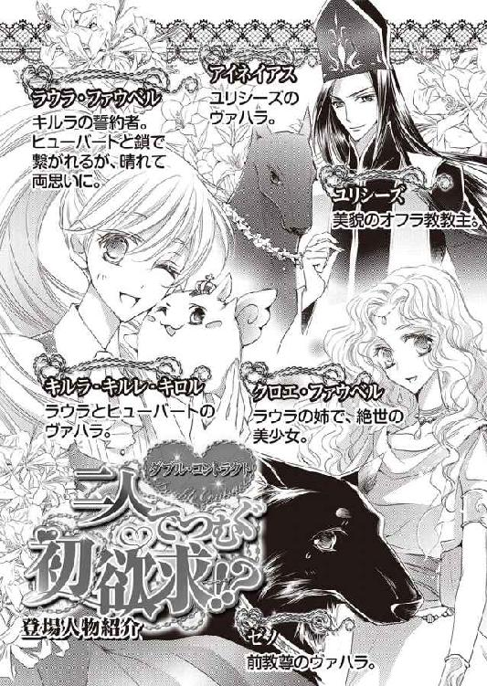
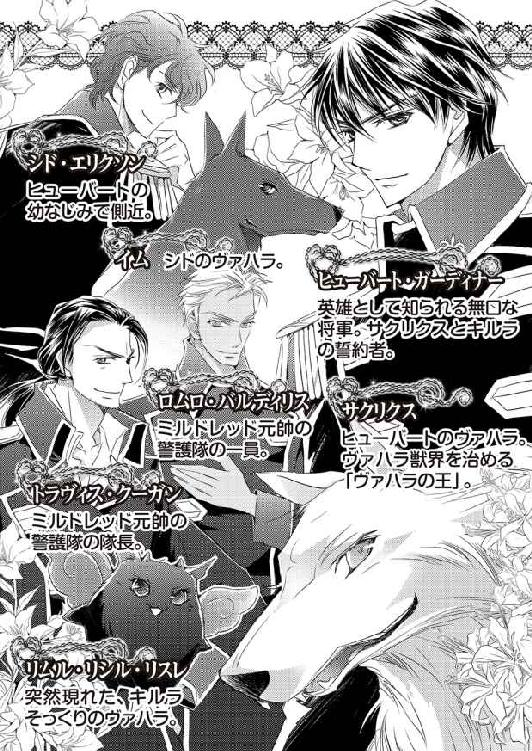
ひっきりなしに落ちる雷が、夜空を禍々しくも鮮やかに彩る。
「ヴァハラ獣界の女王となる妾が命じる。オフラ教教尊、ジェイラスよ。この世で一番価値ある、妾の誓約者となるのじゃ！」
ようやく見つけた。この者こそ妾に相応しい、極上の誓約者。
妾の前に立つ、漆黒の聖衣を身につけた老齢の男は、柔和な目をごく軽く細めた。
「君の名は？」
「妾はリムル－リシル－リスレである」
「リムル－リシュル－リスレ？」
「む、違うぞ、リムル－リ・シ・ル－リスレじゃ。ちゃんと発音せねばダメであろうが」
教尊は笑った。顔中をしわだらけにした、それはやわらかく、優しい笑みだった。
「すまぬね、口が回らなかったよ」
「むう。......そうじゃのう、其方であれば、特別に、リムルでもよいぞ」
ではありがたく、リムルと呼ばせてもらおうか。
教尊はそう言うと、表情をあらためた。
「せっかくのご指名だが、小さきリムルよ。儂にはすでに誓約のヴァハラがいるのだよ」
「知っておる。なりは上等だが、頭の巡りの悪い阿呆であろう？ あんなヴァハラより、妾の方がずっとずっとずううううっと優秀であるぞ。あれとはさっさと誓約解除して、妾と再誓約すればよい」
妾より秀でたヴァハラなどおらん。だから妾の誓約者もまた、人界で一番優秀な人物でないとならんのじゃ。
教尊の誓約のヴァハラであるゼノは、血筋はほかのヴァハラに比べれば、少々高貴かもしれぬが、妾に比べれば雑魚も同然。
妾を誓約のヴァハラにすれば、今以上の名誉と力、そしてこれまで秘されてきた、ヴァハラ獣界の謎を知ることができる。妾がどんな知恵でも授けてやる。
――断るはずがない。
妾は胸を反らして、ジェイラスを見下ろした。
「――」
腹に響くほどの、落雷の音がうるさくて、ジェイラスがなんと言ったのか聞こえなかった。
「なんと？ もう一度申せ」
再度言うように促すと、ジェイラスはあらためて唇を開いた。
「儂は君の誓約者にはならんよ。儂の誓約のヴァハラは、今までもこれからも、ゼノだけだ」絶え間なく降り注ぐ雨が、オフラ教の舞台を濡らす。
ラウラ・ファウベルは、着ている薄衣をかき合わせて、自らの身体を抱くように腕を回した。
掌で触れた二の腕には鳥肌が立っていた。
寒さを覚えたからというだけではない。
今聞いた『ソレ』の言葉が、ラウラの身も心も震わせたのだ。
『サクリクスはヴァハラの王を辞した。そして今日より妾がヴァハラ獣界の女王じゃ！』
舞台上空に浮かぶ『ソレ』は、確かにそう言った。
ここ、ローデリー地区オフラ教教堂に正体不明の賊がやってきたのは、二ツ日前の真夜中のことだ。
ヴァハラの儀をおこなう舞台が破壊され、このままではヴァハラ獣界の獣たちが人界に押し寄せてくるかもしれない。――そんな危惧を抱いた教主ユリシーズが、舞台上に術をかけていた時、姿を消した賊に、青い瓶を奪われた。
舞台の隅に転がっていた青い瓶に何が入っていたのかは、拾ったユリシーズも知らないという。その瓶を取り戻そうと、ヴァハラの王、サクリクスが立ち塞がったところ、賊に攻撃を仕掛けられた。
サクリクスは賊を追いかけていったのだが、それから一度もこちらには戻ってきていない。
ヴァハラの王は普段からフットワークが軽く、あちこちへ出掛けているため、彼の不在を不審に思う者は誰もいなかった。それは、サクリクスの誓約者であるヒューバート・ガーディナーも同様だろう。
だがそのサクリクスがいない間に、教堂内では不可解な事件がたて続けに起こった。
ラウラが姿の見えない賊から悪戯まがいの攻撃を受けたり、穴の開いた舞台からヴァハラ獣界の獣が現れたりもした。
ヴァハラ獣界の獣たちは、どういうわけかすべて透けた状態で、しかもラウラたちに襲いかかってきた。
追い込まれた場所でそれぞれ勝利を収め、こうして無事全員が舞台に集まったのだが――。
――どういうことなの？
サクリクスがヴァハラの王を辞したなんて、にわかには信じ難い。
いったいヴァハラ獣界で何が起きたというのか。
しわぶきひとつない静寂の中、ラウラの前を、ふらふらと横切る者がいた。
ラウラの誓約のヴァハラ――キルラ－キルレ－キロルだ。
硬直したように動けずにいたキルラが、ゆっくりと飛んでいく。
少しずつ、少しずつ、それはまるで、怯えるような、信じられないものに遭遇したような、ひどく慎重な動きだった。
そんなキルラの姿を見たのは初めてだ。
ラウラはキルラの緊張を手に取るように感じ、自身もぎゅっと拳を握った。
キルラと『ソレ』......リムル－リシル－リスレが向かい合った。
見れば見るほど、キルラとリムルはよく似ていた。
掌で包み込めるほどの大きさ、金の輝きを放つ、美しい羽。頭には爪の先ほどの大きさの、小さな角が生えている。
ただ、毛色と瞳の色のみが異なる。
キルラは艶やかな純白の被毛と、綺羅星を抱く夜のような、黒い瞳をしている。
対するリムルはといえば、闇夜を纏うかの如き漆黒の毛と、神秘的な灰紫色の瞳だ。
ラウラには、キルラとリムルは同じ種としか見えなかった。
「そなたに、訊きたいことがある」
心細そうな小さな声だったが、ラウラの耳にも、キルラの言葉は聞こえた。
「断る」
「なん、じゃと？」
「断ると言ったのじゃ。貴様の問いになど答えとうないわ」
ばっさり。まさにそんな表現が相応しいような、無下な返事だった。
キルラは一瞬、わけがわからない、というような表情をした。だがすぐにリムルの言葉を理解したのか、大きな目をつり上げる。
「なにゆえじゃ。なにゆえ我の問いに答えたくないのじゃ!?」
「貴様が何を問いたいのかなぞ想像がつくわ。『サクリクスはどうしたのか。無事なのか。いったい何があったのか』であろう？」
まさにそう問いたかったのだろう、キルラはわずかに口ごもったが、すぐにうなずいた。
「そうじゃ。あのバカ王はどうしたのじゃ」
「だから答えとうないとゆうたはずじゃ」
「なぜじゃ！」
「妾は貴様が嫌いだからである」
「――」
え。
ラウラは一瞬、リムルがなんと言ったのか理解ができなかった。
リムルはキルラを睨み据えた。
「聞こえなかったのか。妾はッ！ 貴様がッ！ だぁぁぁぁぁぁい嫌いッ！ だからじゃ！」
たっぷりの毒を孕んだ甲高い声とともに、サクリクスの赤いショールを真正面からぶつけられ、キルラの身体は、ぐらりと傾いだ。
ショールは音もなく舞台に落ちる。だがそれを見ることなく、キルラは一心にリムルに視線を注いだ。
「なにゆえ、......我とそなたは、同じ、種では、ないのか？」
「はあぁぁ？」
「お、同じ種であろう!? 初めて、初めて我と同じ形の、お、同じ......」
「貴様と同種？ はっ、片腹痛いわ。己がなんたるかも知らぬ、役立たずの貴様が、自身と妾を同列に扱うとは。妾は猛烈に気分が悪いぞ！」
苛烈な響きの声がキルラに襲いかかる。
物理的な力で胸を突かれたかのような痛みを、キルラに与えたに違いない。
だがリムルは、キルラへの攻撃を容赦しなかった。
「ゆうておくぞ。貴様と同種だなどと勘違いされては困るからの。妾は貴様とは違う。慣れ合うつもりは毛頭ないし、そもそも妾は、この世で一番貴様のことが嫌いじゃからの！」
ラウラは矢も盾もたまらず呆然と空中に浮かぶキルラに駆け寄ると、両腕でしっかりと抱きしめた。
雨に濡れた兎の着ぐるみを脱がせ、背中を優しく撫でる。
愕然と表情を凍りつかせるキルラを再び抱え込むと、ラウラは上空のリムルを仰いだ。
姿だけを見れば、いかにも可愛らしいリムルは、こんな時でなければ見惚れたことだろう。自分が無類の可愛いもの好きだという自覚をたっぷり持つラウラだったが、リムルにはひと言物申さずにはいられなかった。
強くリムルを見据えると、相手の視線も、ラウラをしっかと捉える。
「なんじゃ、妾に言いたいことでもあるのか」
「あるわ。その可愛い耳で、ちゃんと聞いてちょうだい」
「む？ ......可愛い、と？」
「すっごく可愛いわよ！ だから、そのちまっと可愛らしい耳で聞いてって言っているの！」
リムルは急にそわそわと身を揺らすと、次いでつんと横を向いた。
「まあ、特別に聞いてやってもよいぞ。可愛く気品があり美しい妾がな」
先刻の、キルラへ向けた悪鬼にも似た形相とは打って変わって、リムルは急に澄まし顔をしてみせた。
拍子抜けをしたラウラだったが、リムルの機嫌が変わらないうちに、急いで唇を開いた。
「あなたがキルラのどんなところを見て、役に立つとか立たないとか判断したのかは知らない。でもわたしにとって、キルラはこの世で一番素敵で一番大事な誓約のヴァハラなの。あなたの勝手な言い分で、キルラを傷つけないで」
「......おいおい小娘、今言うべきはそういうことじゃないだろうが」
呆れたふうの声が聞こえてきた。シド・エリクソン少佐のものだ。
ラウラはシドを振り返り、毅然と首を横に振った。
「いいえ、キルラの誓約者であるわたしが言わなければ、誰がこの仔に言うんです」
「いや、だからさ、もっと大事なことがあるだろって話だよ」
「其方、ヴァハラ獣界の女王たる妾に意見するか」
リムルの薄紫色の双眸が、うっすらと眇められる。ラウラははっきりとうなずいた。
「意見するわ」
「よくもゆうたな。口のきき方を知らぬ不敬な輩には成敗じゃ！」
ドン！ と地鳴りが響いたかと思うと、降り落ちる雨粒が、どういうわけかその場に静止した。まるで時が止まってしまったかのようだ。
「な、何......？」
「そもそも妾は其方も気に入らなかったのじゃ。そやつの誓約者である其方がな！」
リムルの小さな手が勢いよく振り下ろされる。
止まっていた雨粒が、リムルを中心に、ゆっくりと円を描く。雨粒は次第に速度を増してゆき、円の真ん中にいるリムルの姿が霞んで見えなくなるほどだった。
一滴一滴は小さな雨粒が蛇状の長い水流となり、鋭い切っ先をつくった。
――光鈴堂で見た、水での攻撃だ......！
蛇状の切っ先は、突如として空高く上昇したかと思うと、舞台に向けて急降下した。
昨日ずっと石工たちが修理をしていた石の蓋が、その水の切っ先に触れるや、粉々に砕け散った。
「......！」
水とは思えない、凄まじい破壊力に、ラウラはぞっと背筋を震わせた。
「ふっ、はははは！ 見よ、妾の力を。さあ、ゆけえ！」
リムルの命に従い、水の切っ先は真っ直ぐにラウラへと向き......、あっと叫んだ時には、矢のような速さで突っ込んできた。
避けようとした足が、わずかに遅れる。
――ダメだ、ぶつかる......！
腕の中のキルラをぎゅっと抱きしめたその時、傾いだ身体を力強い腕に引き寄せられた。
一歩、二歩とたたらを踏んだラウラの目が映したのは、漆黒の広い背中だ。
「し、将軍......！」
ラウラを庇ったヒューバートは、抜き身の剣を水の切っ先へと真っ直ぐに突き立てた。
勢いよく水は弾け、噴水のように上空へと透明な線を描いた。
「むっ！ まだじゃ、もう一度ゆけえ！」
リムルが叫ぶと、千々に散った雨粒が、再び目にも留まらぬ速さで集まって、ひとつの塊となる。塊は両手いっぱい広げたほどの大きさまで膨らむ。水の玉は、接近するヒューバートを直撃した――かのように見えた。
ヒューバートは、優雅さと力強さ、その両方を感じさせるような動きで、巨大な水の玉をふわりと避けた。
「将軍......！」
「ううっ、なにゆえ避けられるのじゃ！ ではこれでどうじゃ！」
す、と息を吸う音が聞こえた次の瞬間、リムルの小さな体軀が、陽炎のように揺らいだ。
「姿を......！」
ラウラが叫ぶや否や、ヒューバートが剣を持たない方の腕を伸ばした。
リムルの姿がかき消える。
「うっ!? ううっ！ ううううっ!!」
何もないはずの場所から、うめき声が聞こえる。息を詰めてヒューバートの掌の先をじっと見ていると、その場所からリムルが姿を現した。
リムルの灰紫色の目が、驚きにか大きく見開かれる。だが驚愕はすぐに怒りへと変わったのだろう、双眸に物騒な光が瞬いた。
「うううう！」
口を塞ぐヒューバートに抗議しているのか、小さな後ろ肢をぴょんぴょん跳ねさせて蹴ろうとしているが、まったく掠りもしない。
顔色はわからないが、もしリムルが人間だったなら、怒りのため真っ赤になっているのではないだろうか。
「ガーディナー少将、そろそろ掌を外してあげませんと、窒息してしまいそうですよ。まあ気を失った方が静かでいいかもしれませんが、それでは訊きたいことも訊けません」
ユリシーズ教主の静かな声に、ヒューバートはゆっくりと掌を外した。
「はっはっ、はふっ！ き、貴様、ヴァハラ獣界の女王たる妾に対し、なんたる無礼......！ ゆ、許さんぞ」
「おまえに許されなくとも構わないが、ラウラとキルラ－キルレ－キロルを攻撃した件に関しては謝罪してもらおう」
「......出たよ、あいつほんっと小娘とキルたんのことに関して許容量少なすぎない？ つかほかに訊くべきことあるだろうっての」
シドが背後でぼやいている。
「誰が謝罪なぞするものか！」
ふうふうと荒い息を吐きながら、一気に上空へと飛んだリムルは、傲然と叫んだ。そのまま逃げてしまうのではないかと危惧したが、意外にもリムルは、そこでピタリと動きを止めた。
リムルは探るようにヒューバートを凝視する。
「......惜しいぞ英雄将軍よ。サクリクスの誓約者であり、自身もそれほどの能力がありながら、なにゆえあんな役立たずの誓約者になったのじゃ。妾は納得できん」
「役立たず」
「役立たずであろう」
「つまり、リムル－リシル－リスレ、あなたは、ガーディナー少将ほどの人物ならば、相応のヴァハラの誓約者であるべきだと、そう思っていらっしゃる、と？ ――たとえばあなたとか」
穏やかな声で問い掛けたのは、ユリシーズ教主だ。
リムルは、ふっと息を詰め、そうしてユリシーズへと視線を流した。
そうしたかと思うと、急に高慢な仕草で上向く。
「そうじゃのう、妾の誓約者ならば、ここにおるヒューバート・ガーディナー程度の人物でないと、釣り合いが取れぬであろう。なにしろ妾は、ヴァハラ獣界の女王！ であるからの！」
――程度、って、ほ、褒めてないよね？
それでも、リムルの中では、自分に相応しい誓約者としてヒューバートの名は上位に挙げられているのかもしれない。
「じゃがヒューバート・ガーディナーでは少々物足りん。こやつの剣技は確かに見事じゃが、物腰は優雅さに欠けるからの」
む。
リムルの言い方が癇に障ったのは、ラウラだけではなかった。ラウラの腕に抱かれるキルラも、ぴくりと身動ぎする。
「まあ、ユリシーズのように美しいばかりでも物足りんがの」
「......なんだって？ 俺のユリシーズのどこが物足りないっていうんだ」
リムルの発言に、一歩進んだのは、ユリシーズの誓約のヴァハラ、アイネイアスだ。
ユリシーズをコケにされて、黙っていられるほど、アイネイアスの心は広くない。険吞な表情で、リムルに詰め寄っていく。
すい、と手の届かない場所まで上昇したリムルは、嘲るようにアイネイアスを見下ろした。
「ふん、男たるもの、美しいだけでなく、特別な能力があるのはもちろん、賢く逞しく健康で地位のある血筋のよき者でなければならん。さらに理知的で行動力がありかつ思慮深く優しく温かい心持ちでちょっぴり悪戯心のある人物でなければの！ もちろん何よりも誰よりも妾を大事にし、愛して愛して愛し尽くす者でなければならんぞ」
「......よくもそこまで言えたもんだ。いっそ感心するわ」
シドがぽつりと呟く。
リムルの、あまりの言い様に、アイネイアスは呆気に取られる。アイネイアスばかりではない。ラウラもまた啞然として、胸を反らすリムルに視線を注いだ。
――すっごい理想......。
夢見がちな年代のカテゴリーに入るラウラだって、そんな男性はまず見つからないんじゃないかしらと思う。
「だからオマエ、ジェイラスを狙ったのか！」
それまでひと言も発せずにいたジェイラス教尊の誓約のヴァハラ、ゼノが、悲鳴めいた声をあげた。
「ジェイラスが美しくて賢くて逞しくて教尊としての地位があって理知的で行動力があって思慮深くて優しくてめちゃくちゃ性格がよくて悪戯っ子でもあるから、......だから！」
普段からあまり物覚えのよくないゼノが、よく覚えていたと、いっそ感心するほど、リムルの言葉をほぼ正確に復唱する。
誓約者は己の誓約のヴァハラに対して大概誓約者バカになるものだが、誓約のヴァハラの方も相当だ。
ゼノにとって、九十八歳のジェイラス教尊は、
『美しく賢く逞しく地位があり理知的で行動力があって思慮深く優しく性格がよくそれでいて子ども心を忘れない』
そんな誓約者だった、のだろう。
てっきり笑い飛ばすか嘲る反応を見せると思ったのに、リムルは意外にも首肯した。
「そうである。ジェイラスはこの人界で妾の誓約者に相応しい器を持つ男であった」
「だ、だったら、なんでジェイラスを呪ったんだよ！」
今にも飛びかかりそうなゼノを、そばにいた警護隊のふたりが引き留める。ゼノは彼らの腕を振り払おうと身動ぐが、ハッとクロエ・ファウベルへ目を向けた。
『あたし、暴力嫌いなのよ』
もしかしたら、昨日のクロエの叱責を思い出したのかもしれない。ゼノはギリギリと舞台の石床に爪を立てながらも、必死になってリムルへ飛びかかろうとするのをこらえていた。
リムルは、そんなゼノを傲然と見下ろす。
「妾ではなく貴様を選んだからである」
「......え」
「ジェイラスは、誓約者になるようにと申した妾の命を無下に断り、あろうことか己の誓約のヴァハラは生涯貴様しかいないと、そう断言したからじゃ」
平坦な声だった。だがそう言った刹那、リムルはカッと眼を見開く。
「妾より、なんの役にも立たぬ貴様を選んだ！ それが妾には我慢ならなかったのじゃ！」
火を吐くように、リムルは叫んだ。
小さな体軀ながら、リムルの本気の怒りは、ひとびとを、ヴァハラを圧倒した。まるで黒い炎のように、被毛が立ち上がる。
「ジェイラスが、ボクを、選んだ......」
だがゼノは、リムルの形相を恐ろしがることはなかった。聞かされたジェイラスの言葉を反芻していたかと思うと、ぽろぽろと涙を零した。
「ジェイラス......、ジェイラス......！」
うわあ、と声をあげて、ゼノは泣きだした。
「あのさ、さっきからしきりに、役に立つ、役に立たないって言うけど、だったらおまえは何ができるってのさ」
ゼノの泣き声が舞台中に響き渡る中で、呆れたため息交じりに呟く人物がいた。
シドだ。
シドはずいと前へ進み出る。そうしてさり気なくユリシーズとリムルの間に入った。
その動きを目で追っていたラウラは、あっと小さく呟いた。
姿を消してラウラに水をぶつけたり、ゼノの檻の鍵を開けたりと、悪戯めいたことをしたが、リムルがどうしてローデリー地区教堂にやってきたのか、その目的はまだはっきりしていないのだ。もしかしたらユリシーズの命を狙っているのかもしれないではないか。
リムルは不機嫌そうに顔を歪めた。
「妾はヴァハラ獣界の女王であるぞ。無礼な口をきくでない」
「そもそもそれが信じられないんだって」
「貴様が信じずとも、これが証拠じゃ。妾はサクリクスと戦い、見事あの者を倒したのじゃ！」
リムルは舞台に落ちた赤いショールを拾って振り回す。まるで勝利の宣言をするかのように。
戦い、倒した――？
「バカ言うんじゃないよ、キルたんもどき。あのサクリクスが、そう簡単にやられるかよ」
とげとげしさ全開で、シドが大仰に肩を竦めてみせた。おまけに挑発、あるいは小バカにするかのような鼻息つきだ。
その反応を目にしたリムルの表情が、恐ろしいほど険しくなる。
「バカじゃと!? しかも、『キルたんもどき』とは、わ、わ、妾のことかッ！」
「おまえ以外に誰がいるよ。だいたい、なんだってキルたんもどき如きに見下ろされなきゃなんないわけ？ おまえが何言ったって、そんなショール一枚でサクリクスがやられたなんて、誰も信じないさ」
挑発はシドの得意とするところだ。空に浮かぶリムルが、怒りのためか、ただでさえ丸いフォルムなのに、風船のように膨らんでいく。
「き、貴様、許さん、成敗じゃぁぁぁぁ!!」
リムルの口が大きく開けられたかと思うと、雷光もかくやとばかりの、禍々しい光が舞台上を席巻する。
その光はよじれ、尖り、一本の矢となった。
「シド！」
「エリクソン少佐！」
矢はシドの胸を貫かんと真っ直ぐに飛んでくる。
ラウラがただ瞠目し、立ち竦んでいた一瞬の間に、たくさんのことが起こった。
シドの誓約のヴァハラ、イムが己の誓約者に体当たりをする。
さらに警護隊隊長である、トラヴィス・クーガンが、少佐の腕を力任せに引っ張る。
それらの動きよりさらに速く、ヒューバートが光の矢とシドの間に入り込むと、手にしていた剣で、光を真っ二つに斬り裂いた。
光は上空と舞台の壁、二方向へと飛んでいく。
その光の行方を確認したか否か、という一瞬後に、ロムロ・バルディリス中尉が、驚くほど身軽に飛び上がり、リムルの金色の羽をひょいと摑み取った。
「なっ!?」
「シドの挑発に、そんな簡単に乗っちゃダメだよ。ここには君の味方はひとりもいないっていうのに。隙を見せたら、ほら、またすぐに捕まっちゃった。ね？」
ロムロはにこやかに微笑すると、リムルを掌に包み込んだ。
「わあ、キルラくんとよく似た感触だ。ふわふわでやわらかな毛で、気持ちいいなあ」
ロムロに頰擦りされて、リムルは毛を逆立てた。
「はぅわぁっ？ な、何をするのじゃ！」
「何って、頰擦り？」
「だからなにゆえ貴様に頰擦りなどされなければならんのじゃ！ 離せぇっ！」
暴れるリムルだが、ロムロの大きな掌の中から逃れられずにいる。それでも抗い続け、けれどどうしても掌の中から出ることができず、リムルは盛大に息を乱した。
「はふはふ、貴様許さんぞ。シシハヤを頭に乗せた、阿呆な姿をしておきながら......！」
「ああ、可愛いでしょ。昨夜友達になったんだよ」
にっこり笑うロムロの頭上には、昨夜から懐かれている五匹のシシハヤが金色の髪に埋もれるように眠っていた。
そんな、少々奇異な姿のロムロを、リムルはギリギリと歯ぎしりをしながら睨みつけた。
「なんという無礼者じゃ。あとで見ておれよぉ！」
「はは、無礼って言ったって、君に仕えているわけじゃないからなあ」
吞気かつ楽しそうに笑うロムロの豪胆さに、啞然としていたラウラだったが、
「いでよ、妾に従いし者たちよ！」
天をも貫けとばかりに、キリキリと高い声が、リムルの口からほとばしる。
刹那、石床が小刻みに、不穏に揺れた。
「な......」
「わ、ぅわっ」
「姉さん！」
足元をふらつかせる姉、クロエを咄嗟に抱き留める。だがラウラもまたぐらついて、危うく転びそうになったところを、ヒューバートが支えてくれた。
「あ、ありがとうございます、将軍」
「いや」
返事はごく短いものだったが、揺るぎないヒューバートが頼もしい。
揺れはどんどん大きくなっていったが、ふいにぴたりと収まる。
不気味なほど、シンとした空気が漂い、誰もがその場から動けずにいた、その時。
修復途中の舞台から、突如として巨大な水柱が立ち上った。
また水での攻撃かと目を瞠ったラウラだが、すぐに首を振る。
「水、......じゃない！」
ヴァハラ獣界から湧き出してきたのは水ではなかった。
凄まじい数の空魚、シシハヤだ。
魚というより、一匹の巨大な蛇のように見えた。
青白い光を纏いながら、舞台の上でゆうるりと旋回する様は幻想的だったが、見惚れている余裕はなかった。
シシハヤの性質の厄介さは、十分経験している。
四方を壁に囲まれたこの中で、シシハヤが突っ込んできたら、全員溺れてしまう......！
「シシハヤよ、妾に従え！ こやつらを懲らしめるのじゃ！」
まさか、と思った。
――まさか、あの仔の命令に、シシハヤが従うの!?
「ゆけえ！」
リムルが小さな前肢を、ラウラたちへと真っ直ぐ振り下ろす。
するとその命に応え、シシハヤが凄まじい勢いで飛んできた。
「ああ......！」
突然の攻撃に為す術もなく立ち尽くすファウベル姉妹を、ヒューバートは自らの背中でまとめて庇った。シシハヤの突進を、剣で真っ向から受け止める。
すると一匹一匹は小さなシシハヤは、その剣を避けて二方向へと分かれた。一方はシドやユリシーズがいる右手へ、もう一方は、警護隊たちの方へ。
「ゼノ、まだ泣いているのですか。床に懐いていないで立ち上がりなさい！」
いまだに突っ伏して泣いていた、泣き虫ヴァハラに、イムが発破をかける。その声に、ゼノはそろりと顔を上げた。
「ふぇ？ うわ、うわぁっ！」
「うわうわ言っていないで、娘さんの姉君を助けなさい！」
「はっ、わ、クロエちゃ......、うぶッ！」
前を向いた途端に、さらに分散したシシハヤからの突進を受け、ゼノはあわあわと両前肢を振ってシシハヤを散らす。
「あっあぶない、溺れるところだった......、あっ、クロエちゃん待ってて！」
「別に来なくてもいいよ。ていうか、ゼノちゃんは、あたしじゃなくて自分を助ける努力をして！」
「そ、そんな、でも、ボク......」
「ホント来なくていいから！」
来たら逆に邪魔っぽいし、とひとりごちるクロエの声をしっかり拾ったラウラは、我が姉ながらドライな性格だなと小さく首を竦めた。
だが確かに、十ガラン（歩数にして十歩）ほどしか離れていないのに、ゼノは一歩進んではシシハヤに突っ込まれ、おろおろと顔を振って三歩退がり、半歩進んだかと思えば、またしても空魚に翻弄されて、悲鳴をあげながらその場でぐるぐる回り始め、まったく前に進めずにいる。なんとも情けない有様だ。
シドとイム、アイネイアスは、横と前後を挟んでユリシーズを守っている。逆側のトラヴィスをはじめ警護隊たちも、シシハヤを散らそうと剣を大きく振り回していた。
そして、いまだリムルを解放せずにいるロムロはといえば。
「これ、君が命令しているの？ やめてほしいんだけど」
「誰がやめるかっ。というか、貴様いい加減離せぇ！」
「え、どうしようかな」
「離すなよ、ロムロ！ むしろ絞め上げろ！」
「ええ？ シド、俺虐待反対。こんなもっふもふの仔を苛めるのは気が進まないな」
「苛めじゃない、仕置きだ！」
「あ、お仕置きか」
ロムロは澄んだ黒い瞳を、じっとリムルに据えた。
「はっ、な、何をする、な......、やめるのじゃ、うひゃひゃひゃひゃ......！」
「くすぐりお仕置き。あのシシハヤくんたちをヴァハラ獣界に帰してくれたらやめるよ」
「嫌じゃ......っ、ふひゃひゃっ、や、やめ......っ！」
盛大にくすぐったがりながらも、意地でもやめると言わないリムルの強情さに、ラウラはいっそ感心する。
ラウラの腕の中で、キルラがうめいた。
ハッと見下ろすと、キルラは小刻みに震えていて、その様子は以前ゼノに『悪いもの』扱いされた時とよく似ていた。
「我にはわからん。なにゆえ我が嫌いなのじゃ」
確かに、初めて自分と同じ種に見える生き物に出会えたというのに、そのリムルからこっぴどく拒絶され、あまつさえ嫌いだと宣言されたのだ。
キルラが強く同胞を望んでいたことを知っているから、ラウラもあの言い様にはどうしても納得できないし、自身のヴァハラが今、傷ついている現実を辛く思う。
だがキルラは、あの日とは違った。
腕の中から顔を上げると、ラウラをしっかと見つめた。
「......キルラ？」
ラウラを見つめる瞳は確かに傷ついていたが、それ以上に強い光が瞬いている。
「我は納得せんぞ。嫌いじゃと言われても、諦めん」
「諦め、ない？」
「そうじゃ。なにゆえ我を嫌うのか、ちゃんと訊かねばならん。そしてバカ王の消息を確認するのじゃ。じゃが、今は」
キルラは周囲を見回す。リムルの命により、縦横無尽に飛んではひとやヴァハラを窒息させようとするシシハヤに視線を据えると、ラウラの腕の中から、力強く飛び上がった。
「キルラ!?」
キルラは自らを鼓舞するかのように、ぶるぶると身体を振った。そして両前肢をいっぱいに開く。
「やめるのじゃ、シシハヤよ。ひとを困らせてはならんのじゃ――！」
叫んだ刹那、キルラの身体が輝かしく光った。さながら小さな太陽だ。
光は、舞台をあかあかと照らす。
強い力の放出に呼応して、ラウラの額がやんわりと熱を持った。
微かな痺れ、けれどこの痺れは、誓約のヴァハラ、キルラと繫がっている証拠だ。
力強く温かな光を放つキルラを、ラウラは惚れ惚れと見つめた。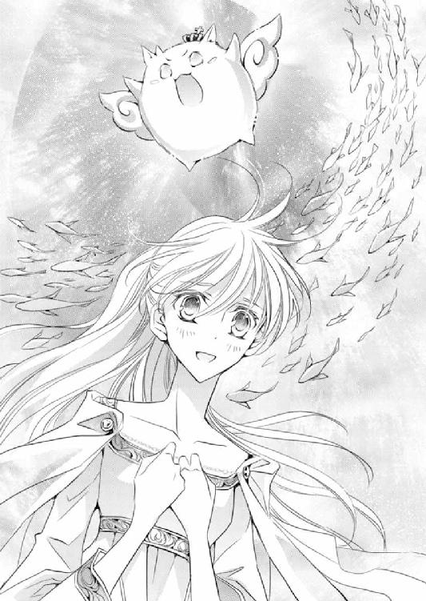
「キルラ、すごいよ」
キルラの光を浴びて、シシハヤたちは動きを止めた。そしてまるでその光に惹かれるように、一匹、また一匹と、ひとつの形をつくっていく。しまいには巨大な魚の形となった。
キルラの光に照らされ、ゆうるりと穏やかに空を泳ぐシシハヤたちはとても美しい。
「さあシシハヤたちよ、ヴァハラ獣界へ戻るのじゃ！」
幼いながらも、凜とした響きのキルラの号令に、シシハヤたちは一斉に舞台へと向かう。
――キルラに従った......!? どうして？
これまでさまざまなヴァハラ獣界の獣たちが人界へやってきたが、一度としてキルラの言葉を聞いた例がない。それなのにこの場面で、どうしてシシハヤがキルラに従うのか、ラウラにはまったくわからなかった。
「ま、待て、待つのじゃ、シシハヤよ！ そやつではなく、妾の命を聞くのじゃ。ヴァハラ獣界に帰ってはならーん！」
慌ててリムルがそう言ったなら、シシハヤはぴたりと動きを止めた。そして再びリムルの命令に従い、くるりと旋回する。
「帰るのじゃ！」
「帰ってはならん！」
キルラとリムルが交互に叫ぶたびに、シシハヤは行ったり来たりとうろうろする。
――あ、か、可哀相......。
困ったようにあっちこっちと振り回されるシシハヤが気の毒になってきてしまう。
「クロエ・ファウベル」
二十ガランほど離れていたユリシーズが、いつの間にかラウラたちの隣に来ていた。そしてラウラとともに、ヒューバートの背中に隠れていたクロエに、長く整った指先を差し出してくる。
「なんですか、教主様」
「あなたの力を貸してください」
「あたしの力？ ......いいですけども」
うなずいたクロエの手を引いて、ユリシーズは群れるシシハヤのただなかへと進んだ。
「ユ、ユリシーズ教主様、何を......!?」
ラウラはあとを追いかけた。だがクロエが一歩、また一歩と近づくにつれ、うろうろと迷う動きをしていたシシハヤが、ぴたりと止まった。そしてクロエの方へとゆっくり顔を向ける。
「あ......」
その光景は圧巻だった。
宙を泳ぐシシハヤたちが、まるでクロエに傅くように、下へ下へと向かい、そうして床スレスレまでやってくると、クロエの足元に留まったのだ。
心なしか、シシハヤの青白い光が、ほんのりピンク色に見える。気のせいだろうか？
「ね、......姉さん」
ユリシーズはクロエの手を引きながら、さらに舞台へと進む。
ほとんど修復ができていないうえに、先刻またしても壊された舞台だが、比較的足場のしっかりした場所を選んで、ユリシーズは階段を上った。
シシハヤはクロエに諾々と続く。
ユリシーズが低く祝詞を呟いた時、シシハヤたちは舞台の下――ヴァハラ獣界へと、一斉に飛び込んでいった。
鮮やかな段取り、まさにユリシーズが思い描いていたとおりの結末だっただろう。
美麗な表情を微かに綻ばせ、ユリシーズはクロエに向けて、軽く頭を下げた。
「協力ありがとうございます、クロエ・ファウベル」
「協力っていうか、利用された感じですが。......まあいいです。ゼノちゃんの件ではお世話になりましたし」
クロエもまた、にっこり笑った。
「なん、......じゃ」
リムルが低くうめいた。
「なんじゃなんじゃなんじゃ貴様は――!?」
「あ」
放電をしてロムロの掌を弾き、自由を取り戻したリムルは、一直線にクロエへと飛んできた。
「何をした!? 貴様何者じゃ！」
「クロエちゃん、危ない！ ええいっ！」
リムルがクロエに詰め寄る寸前に、ずっともたついていたゼノが、絶妙から半分ずれたタイミングで飛び込んできた。
間に割って入ろうとしたのだろうゼノが衝突したのは、しかしリムルの後頭部で、リムルはリムルで、クロエにぶつかるつもりはさらさらなかったのだろう。
ところがゼノに背後から突っ込まれたために、結果としてクロエと額同士が、音を立てるほど強く当たってしまった。
「姉さん！」
額がぶつかったというにはあまりにも大きな音が、その場に響く。
クロエとリムルは最接近したまま、舞台の下に落ちてしまう。そこをがっしりと受け止めたのはロムロだった。
「すごい音、大丈夫ですか？」
「姉さん、大丈夫!?」
駆け寄ったラウラの前で、クロエとリムルのグレーバイオレットの瞳が、間近で合った。
「......」
「......おま、え」
リムルが信じられないものに接したかのような眼差しで、クロエを見据える。
そしてクロエもまた、リムルの大きな瞳を、食い入るように見つめた。
「あなた」
クロエの手が伸び、リムルを摑み取ろうとする。だがリムルはその手を避けると、凄まじい勢いで上空に飛び上がった。
「き、今日のところは、これにておさらばじゃ！」
うろたえたような甲高い声を響かせて、リムルはその場からかき消えた。
姿を消したのだ。
「......なんだったんだいったい。つか、あいつ何をしに来たわけ？」
呆れた声はシドのもので、ラウラもまた心から同意する。
――あの仔の目的は、いったいなんだったの？
サクリクスが王を辞し、自分が女王になったと、ただそう宣言するためにだけ姿を現したというのだろうか。
それまでは姿を見せずに、ラウラたちに悪戯し放題、からかうようなことばかりしていた。
それに......。
「キルラ」
リムルの行方を探ろうと、キルラはあちこち首を巡らせている。
ラウラも同様にリムルの気配が感じられないか、心を澄ませてみるが、まったくわからない。
ヒューバートに目を向ければ、ごく軽く首を横に振られた。
同様に見つけられなかったのだろう、キルラはふっと息をつくと、ラウラのそばにやってきた。
「たくさん光を出したけど、痛かったり辛かったりするところはない？」
「......うむ、大丈夫なのじゃ」
うなずいたキルラだったが、すぐに大きなため息を零した。
「のう、ラウラ」
「ん？」
「なにゆえあの者は......、いや、なんでもないのじゃ」
キルラが言いたかったことは、ラウラにも予想がついた。
――なにゆえあの者は、我を嫌いなのじゃろう？
ラウラは隣に立つヒューバートを見上げた。
彼の瞳は冷静で、穏やかですらあった。いつでも動じず泰然としているヒューバートを、ラウラは心強く思う。
「ところでサクリクスはどうなってるんだ？」
「確かに気になりますね。あのリムル－リシル－リスレの話を割り引いて聞いたとしても、サクリクス王がいまだこちらに戻っていないことは確かですから」
「し、将軍」
そうだ。サクリクスが消息不明というこの状況では、いくら英雄将軍とはいえ、自らの誓約のヴァハラを心配しているだろう。
腕の中のキルラも、不安そうな顔をしてヒューバートに視線を注ぐ。
「ヒューバート、バカ王は......」
「大丈夫だ」
ところがヒューバートは、静かな口調でそう言った。
「え？」
「サクリクスと俺との鎖は切れていない。サクリクスは無事だと、俺にはわかる」
「......わかる、のですか」
どこか不審げにユリシーズが問うと、ヒューバートははっきりとうなずいた。
「以前誓約の鎖が切れた時には、サクリクスの気配をまったく感じられなかった。だが今はその時とは違い、サクリクスの熱を感じることができる」
ここで、と自らの額に手をやった。
「ほ、本当か？ 我は人界に来て以来、どうしてか感じられんのじゃ」
人界にやってくる前は、バカ王がどんな状態かなんとなくわかっていたのに、とキルラは悄然と呟く。
そういえばキルラが人界行きを決めたのは、サクリクスの気配が突然消えたからだと、以前聞いたことがある。
「大丈夫だ、キルラ－キルレ－キロル」
ヒューバートの声がいつも以上に頼もしく聞こえる。それでもキルラはどこか不安げだ。
「サクリクスの件については、放っておいてもいいってことか、ヒュー？ 今どこにいてどうしているのか気にならないわけ？」
シドの声が心なしか尖って聞こえるのは、もしかしたら、イムが行方不明になったらと、自分をヒューバートの立場に置き換えてみたのかもしれない。
確かに、自身の誓約のヴァハラの消息が不明ならば、普通はもっとうろたえてもおかしくない。
ラウラはキルラとともに、ヒューバートをじっと見つめた。微かに目を伏せたヒューバートは、一度ゆっくり瞬きをした。そうしてから、ヒューバートはほんのわずかだが、唇をほころばせた。
「シド、俺の誓約のヴァハラをそう見くびるな」
その言葉、声音に、ラウラは胸を衝かれた。
――信頼しているんだ。
己のヴァハラを。サクリクスの力と、彼との強い絆を、信じているのだ。
ああ、すごい。
ラウラはそっと胸を押さえた。
ヒューバートとサクリクスは、普段から適度に距離を置いている。でもこんな時でも、ヒューバートはサクリクスを信じていられる。
ラウラは己の誓約のヴァハラに目をやった。するとキルラもまた、ラウラをじっと見つめていた。手を伸ばすと、キルラは吸い寄せられるようにラウラの腕の中に飛び込んでくる。
自分も......自分とキルラも、ヒューバートとサクリクスのように、強く繫がり合いたい。
今だって心から信じているけれど、もっと、強く、強く。
「うむ。我も信じる......こともなくもないぞ。何しろあのバカ王じゃからの。どこか沼に嵌まって抜け出せなくなっているだけかもしれんし！」
ヒューバートの言葉で、キルラも完全に落ち着いたようだ。いつものように生き生きと、愛情溢れる口調でサクリクスを罵る。
「ドジッ子王だもんなあ、サクリクス王は」
「確かに。そういえば隊長、覚えています？ 賊を捕らえようとアジトに飛び込もうとした時、サクリクス王が放ったヴァハラの光で、家が全焼してしまったこと。あれは壮観でしたね」
「もちろん覚えているさ。あと、少将と同調している時に、好みの女の子がいたって言ってナンパして、後々その女の子に『英雄将軍に口説かれた』って散々つきまとわれたこともあったよなあ。それが由緒ある貴族の子女だったもんだから、もうえらい騒ぎになったんだった」
ロムロとトラヴィスの口から、信じられないようなことが次から次へと暴露される。
呆気に取られながら、ラウラはヒューバートを見上げた。
「将軍、つきまとわれちゃったんですか......」
ヒューバートは一瞬言葉を詰まらせた。
「サクリクスさん、女の子大好きですものね。将軍大変でしたね」
くすくす笑うと、脇で「ヒュー、小娘わかってないぞ。案外鈍いな」とシドがぼそりと呟いた。
「鈍いって、何がです？」
「だからさ、サクリクスと同調していた時の、ヒューの一連の行動とかさー」
「シド」
「でもそれって、将軍の意思じゃなくて、サクリクスさんがしていたことですよね」
何をしても、責任はサクリクスにあるのではないかと言うと、クロエが生温い笑みを浮かべつつ、ぽん、とラウラの肩を叩いた。
「ラウちゃん、それはとっても正しいけど、正論すぎて将軍がちょっと可哀相かも」
「えっ」
『将軍が可哀相』というフレーズに、急いでヒューバートに目を向ける。
「将軍、あの、わたし」
言いかけて、でもどこが『将軍が可哀相』なのかわからなくて戸惑っていると、ヒューバートが指先をラウラの頰にそっと触れさせた。
「おまえの気に障らないのであればいい」
「......は、ぁ」
そう言ってもらっても、どうにもすっきりしない。
「ところでサクリクスが無事だとわかるのって、ヒューとサクリクスが特別ってことか、それともサクリクスが王だからか、あるいは誰でもそういう繫がりを持っているのかわかんないな。ユリシーズ、そこんとこどうなの」
「誓約者と誓約のヴァハラは強い絆で結ばれていますし、誓約の鎖で繫がってもいます。勘の鋭い......あるいは、気に敏い人物であれば、離れていても自らのヴァハラの状態を感知できるのかもしれませんね」
「かも？ かもかよ」
あからさまに、ユリシーズの返事に不服を覚えているらしいシドを前に、教主は微かに苦い笑みを頰に浮かべた。
「本当に、わたしにはまだまだ知らないことが多すぎます」
「ユリシーズは十分勉学に励んでいるだろう？ シドの言うことなんて気にするな」
「シド」
アイネイアスが慰める横で、イムがシドをたしなめるように軽く目を眇めた。
「じゃああたし、仕事に行きますから、これで失礼しますね」
クロエがそう言って、あっさり歩きだした。
「あ、姉さん、おでこ大丈夫？」
先刻リムルと派手にぶつかっていたクロエの額は、ほんのり赤くなってしまっている。
心配する妹へ、姉はにこりと微笑んだ。
「大丈夫だよ、行ってくるね。――ああそうだ、ラウちゃん」
「ん？」
「今度ね、出張占いをすることになるかもしれないんだ」
「出張、占い？」
「支配人の発案で、一ツ月くらいいろんな街を回って占いをするんだって。それにあたしも行くことになるかもしれないから、一応心積もりしておいて」
「......うん。いつから？」
「いつからかな、支配人が思い立った時だから、もしかしたら明日からかもしれないし、十ツ日後かもしれない」
「わかった。行く時にはまた言ってね？」
「うん。......将軍、あたしがいない間、ラウちゃんのことお願いしますね」
ことラウラに関して、クロエが妥協することはないようで、ヒューバートに向ける視線は、普段に比べると真剣だ。
ヒューバートは、もちろん、というように、しっかりとうなずいた。
「それとゼノちゃん、さっきは助けようとしてくれてありがと」
「えっ、あ、ううん、結局ぶつかっちゃったけど」
「まあね。でも助けようとしてくれた気持ちが嬉しかったよ」
クロエに礼を言われたゼノは、嬉しそうにくねくねと身を揺らした。
「あの仔に飛びかからず我慢してたしね」
その言葉に、ゼノはジェイラスの仇――リムルの存在を思い出したのだろう、表情を引き締める。
「ジェイラスさんは素敵なひとだったんだね。そういうひとの誓約のヴァハラだったことを、忘れちゃダメだよ、――ゼノちゃん」
静かなクロエの言葉を受けて、ゼノはジェイラスの面影を再び脳裏に思い浮かべたのだろう。うっすら涙を浮かべながら、小さくうなずいた。
「じゃ、ばいばい」
「え、え、もう行っちゃうの？」
待って、もっとお話ししようよ、と追いかけるゼノだったが、やはりそのまま行かせるわけにはいかず、警護隊たちが慣れた様子で大きな獣を押さえていた。
「さて、まず真っ先にやらにゃならんことといえば、なんでしょうかね、教主」
警護隊隊長のトラヴィスの問いに、ユリシーズは軽く顎を引いて、舞台を見据えた。
「突貫でもなんでも、とにかく舞台の修理を最優先にします。シド、ローデリー地区内の職人たちをできるだけ集めてください。どんな形でもいいから、舞台を最短で塞ぎます」
「ま、そうだな。ヴァハラ獣界からまた厄介なのが来るなんて、もう勘弁してもらいたいし。でも術の穴が塞がらないんだろう？」
「......それについては、通常とは異なる祝詞を使ってみましょう」
「通常とは異なるって、そういうの使って、あんた大丈夫なのかよ？」
ええ、とユリシーズは無造作にも思えるほど、ぞんざいにうなずいた。
「穴を塞げないなど、教主としてあってはならないこと。なんとしても塞いでみせましょう」
普段にはあまり聞かない、ユリシーズの強い声だった。
――教主様、激しいご気性をなさっていらっしゃるから......。
「ヴァハラ獣界の獣たち――ヤトと、そこの頭に花を咲かせているモノたちは、今からすべてヴァハラ獣界へ送りましょう」
「このシシハヤくんも、......ですね」
ロムロが、自らの頭を指す。これほどの騒ぎがあっても、五匹のシシハヤたちは吞気に就寝中だ。
自分に懐いているシシハヤたちをヴァハラ獣界に帰すのは、少々さびしいと思っているのだろうか、普段笑みを絶やさないロムロの表情は残念そうだ。
「......まあ、そのシシハヤが起きて、あなたとお別れをしたあとでも構いませんよ」
ユリシーズの返事に、ロムロはいつものようににこりと笑った。
「では、わたしは一時休ませていただきます。そののちに、舞台が塞がるまで祝詞を唱えますから」
「ユリシーズ、無理はするなよ」
アイネイアスの心配声に、ユリシーズは大丈夫ですよ、と笑った。「おいヒュー！ そっちになんか行ったぞ！」
シドの尖りまくった叫び声が舞台中に響いて、ラウラはもちろん、周囲の警護隊の面々も辺りを見回す。
すると、まるでクラゲのような形の生き物がふわりふわりと宙を泳いで、ラウラがいる方へと近づいてきていた。
優雅な動きながら、粘着質なものがそのクラゲもどきの身体から床に落ちる。途端に、音を立てて硬い石の床に小さな穴が開いたものだから、ラウラはひゃっと声をあげた。
「む、アレに触れてはならんぞラウラ、ヒューバート！ アレの身体は毒液に守られているのじゃ。触れれば指が焼けてしまうのじゃ！」
「ええっ、じゃあ、どうやってヴァハラ獣界に戻したら......、わ、わ、近づいてくるよ！」
「火じゃ。アレは火を怖がるから、火で追いやるとよいぞ！」
「火ね！」
幸い舞台にはたくさんの灯りがともされている。ラウラが壁に掛けられたランタンを取るため走ろうとしたところで、先にヒューバートが長い手を伸ばした。
ランタンの中から火を取り出すと、無造作にクラゲもどきへと差し向ける。
キルラの言うとおり、クラゲもどきはイヤイヤと身を震わせて、火から遠ざかった。
ほかの警護隊たちもヒューバートに倣い、クラゲもどきを取り囲むと、舞台へと追いやる。
すべてをヴァハラ獣界に戻したところで、シドは大きなため息をついた。
「こんなひんぱんにヴァハラ獣界からいろんなものがやってきたことなんてないよな？」
「だろうね。もしこんなふうにしょっちゅう舞台から出てきていたら、人界はもっと大騒ぎになっているだろうし」
クラゲもどきとは別の生き物と対峙していたロムロもまた、無事ヴァハラ獣界へ戻したようだ。剣を鞘に収めながら、近づいてきた。
「舞台に開いた、閉じない穴が原因か、あるいはあの黒い仔がなんかやっているのか。わからないことばかりで、どうも背中がムズムズするなあ」
普段から柔和な表情を崩さないトラヴィスも、ぼやきながらやってくる。
「ユリシーズも、思っていたよりヴァハラやヴァハラ獣界のことに詳しくないんだよな」
オフラ教はヴァハラ及びヴァハラ獣界の研究もしているはずなのに、と不満と不審混じりの声で呟くシドは、今は休んでいるユリシーズの私室の方へと、視線を向けた。
「そういえば小娘、おまえの父親って、ヴァハラの研究をしていたんじゃなかったっけ？」
「はあ、よくご存じで。生業にしていたわけではありませんが、趣味の範疇には収まりきらない熱心さでした。本も何冊か出していたくらいで」
六ツ年前に、母とともに行方知れずになった父親の面影を思い出す。
やわらかな物腰と、何に対しても泰然としていて余裕が見えつつ、どこか言動がコミカルな、楽しい父だった。
「民間の研究でどんだけヴァハラのことがわかったんだろうなあ。両親とも、ヴァハラの誓約者じゃなかったんだろう？」
「はい。研究、というか、ヴァハラの誓約者になったひとたちを訪ね歩いて、いろんなお話を聞くことが多かったような。もちろん教堂の図書堂に所蔵されている本は、ほとんど読んでいたと思いますし、当時のローデリー地区の教主様のお話も熱心に伺っていました」
「ふーん」
気のない返事をしたシドが、ふっと舞台の出入り口扉へ目を向けた。
大扉が静かに開く。
仮眠を終えたユリシーズが、アイネイアスや複数の護衛とともにやってきた。
普段の教務衣ではなく、裾や襟、袖の縁に精緻で美しい刺繡を施した聖衣を身につけ、手には玉や宝石で飾られた貴杖を携えていた。
その姿は厳かで近寄り難く、高貴な気配を漂わせている。
ユリシーズはまず、舞台修復に努める職人たちへ、ねぎらいの言葉をかけた。
ロレンシア地区内の職人を総出で、とユリシーズに依頼されたものの、そこは抜かりのないシド、そんなにたくさんいても邪魔になるだけと一蹴した。そして腕がよく、かつ連携もうまい石工を厳選して舞台修復を依頼した。
総勢十五人という人数の石工たちは、ヴァハラ獣界の獣たちの襲来に、最初こそおっかなびっくりしていたが、すぐに『壊れたものを直そう』という職人気質を発揮し、速さと仕事の丁寧さのバランスを上手に取りながら、修復作業に取り掛かっていた。
美貌の教主に、職人たちは笑みを返し、すぐに作業を再開する。
ユリシーズは次いで、ラウラたちのところへやってきた。
「いろいろ手数をお掛けしています。皆さん、順に休んでください。が」
「が？」
「まずはラウラ・ファウベル、あなたが休んでくださいね」
昨夜一睡もしていないでしょうに、わたしの方が先に休んでしまい、申し訳なかったです、とユリシーズが頭を下げた。
「一晩くらい寝なくたって大丈夫ですよ。わたし、丈夫なのが取り柄ですし。それに教主様は、これから舞台の穴を塞がなければならないんですから」
ユリシーズが先に休んで疲れを取るのは当然だ。
彼しか穴を塞げないのだから。
万全の体調で祝詞を唱えて術に開いた穴を塞ぎ、これ以上ヴァハラ獣界の獣たちがやってこないようにしてほしいではないか。
ユリシーズはそう言ったラウラに笑みを向け、そうして長く整った指を伸ばしてきた。だが目元に触れる寸前で、なぜかぴたりと指先を止めた。
「......触りませんよ、少将。――ラウラ・ファウベル、丈夫であることは大変な美徳ですが、目の縁に隈がうっすらと」
「え、あっ」
「年頃の女性にはたっぷりの睡眠が必要でしょう。せっかくの綺麗な肌が荒れてしまってはもったいないですからね」
「は、はあ......」
うわやだ、目の下に隈!?
思わず両目ごと掌で隠したら、「いまさら隠しても遅いよ小娘」、「やっぱり女の子ですねえ」、「隈があっても我の一番目は可愛いぞ！」と、方々から声が飛んできたから、なおさら恥ずかしくなる。
「んじゃ先に小娘とヒュー、休んどけよ。もうすぐ外れ部隊から交代が来るから、そしたら僕も休むことにする」
「おやすみなさい、少将、嬢ちゃん」
シドだけでなくトラヴィスからもそう言われ、ラウラはそろりとヒューバートを見上げた。
ヒューバートは軽くうなずく。
「あ、じゃあ、お先に失礼します」
「皆、おやすみなのじゃ」
休める、と思うと同時に、忘れていた睡魔がどっと押し寄せてきた。それはキルラも同様のようで、ラウラの腕の中に収まると、しょぼしょぼと目の縁を擦る。
「んむ......疲れたのじゃ」
「寝ちゃっていいよ、キルラ」
優しく囁くと、よほど疲れていたのだろう、キルラはすぐに寝息をたて始めた。
――ああ、なんか身体から力が抜けそう......。
舞台を出て、長い通路を歩いているうちに、微かに足がふらつく。
そんなラウラを、ヒューバートは何も言わずに支えてくれた。さらに流れるような動きで抱き上げられる。
「わ、将軍......！」
「このまま運ぶから目を閉じていろ」
「そんな、将軍の方こそお疲れでしょうに」
一睡もしていないのはヒューバートも一緒ではないかと言うと、英雄将軍は思いも寄らないことを聞いた、というふうに、軽く目を見開いた。その驚き顔が、次第に優しく解け、やわらかな微笑を浮かべる。
――うわうわ、ちょっとは見慣れたかしらって思っていたけど、ダメ、全然慣れていなかった......！
ヒューバートの笑顔は、本当に目の毒だ。直視できない。
ふいに向けられると、ドキドキしてしまってたまらない。
目の下に隈のある状態の、今の悲惨な顔をヒューバートに見せたくないこともあり、火照る頰を意識しながら、小さく俯いた。
「......なんで笑う、んですか？」
「これまで体力や体調の心配をされたことは、一度もなかったなと思った」
「え」
「幼い頃から体力や身体能力を、ひとより不足に思ったことはなかったし、周囲からも、放っておいても大丈夫だと思われていたらしい」
「ええとそれは、将軍がとっても健康だったから、周囲のひとたちは安心していらっしゃったと、そういうことですよね」
ヒューバートが再び笑む気配を感じた。覗き込もうとするヒューバートの視線をかわそうと、腕に抱いていたキルラを、自分の顔の前に持ってくる。
「隠すな」
「......うう、隠させてください」
「おまえの顔が見たい」
「そ、......さあどうぞと自信を持ってお見せできるような、大層な顔じゃありませんから」
何しろ隈が、と心の中で呟いていると、なおもヒューバートの気配が近づいてくる。
「俺にとっては『大層な顔』だ」
――ひゃー......！
ラウラは内心で悲鳴をあげた。
ヒューバートの声が、それはもう、びっくりするくらい甘く響いたのだ。
「ラウラ」
まるで乞うように呼ばれて、ラウラは小さく唸った。
抗えない声で名前を囁くなんてずるい。
おずおずとキルラを抱く腕をずらすと、間近にヒューバートの穏やかな顔が迫っていた。
小さな音を伴いながら、ラウラの右目の縁に、ヒューバートの唇が触れてくる。
次いで左目の下にもキスされる。
そろりと目を開けた時、ヒューバートの唇は頰に触れ、さらに唇の端へと移ろうとした――ところで、英雄将軍が小さく身動ぎをした。
「ぇ、......わ、キルラ......!?」
ラウラはまったく気づかなかったが、キルラはいつの間にか起きていたようだ。
キラキラと大きな眼を輝かせながら、覆い被さるようにしていたヒューバートを、じっと見ていた。
「......キルラ－キルレ－キロル」
「我に構わず、存分にイチャイチャするがよいぞ。ラウラももっとうっとりするがよいのに」
「もう、キルラ、からかっちゃダメ......！」
「からかってなぞいないぞ。もっとふたりが仲良くなればよいのう、とは思っているがの！」
むふふん、とキルラは笑う。
しょうがないなあ、と言いつつ、ラウラは苦笑を零した。
◆◆◆
短い時間だったが、眠りが深かったのか、目覚めはすっきりしていた。
鏡で自分の顔を見てみたところ、休む前にはうっすらとあった目の下の隈はほとんどなくなっている。
よかった、と安堵したラウラは、オフライトが用意してくれていた着替えに袖を通した。
昨夜リムルに襲撃された際に濡れてしまった服は、干す暇もなく放置していたから、洗い直さなければ着られない。オフライトの気遣いがありがたかった。
ラウラは、同様に身支度を整えたヒューバート、キルラとともに、再び舞台へと戻る。
「夕餉にはまだ少し早いのじゃが、うむぅ、ラウラ、腹が減ったのじゃ」
「はは、そうだね。わたしもちょっと減ったかな」
軽い食事を摂って眠りに就いたのだが、キルラ同様、ラウラもすっかり空腹だ。
「光鈴堂に食事を用意しているとシドが言っていた。先にそちらで何か腹に入れよう」
「あ、はい」
大広間から図書堂へ、そしてホールを抜けようとした時、書庫から何やらうめき声がする。
「誰の声じゃ？」
キルラと顔を見合わせて首を傾げていると、ヒューバートが書庫の扉を引き開けた。
「ゼノではないか。何をうめいているのじゃ？」
「ああっ、み、みんな！」
檻に入っているゼノが、鉄格子に顔をぎゅっと押しつけて、ラウラたちを悲しそうに見上げてくる。
「ど、どうしたんですか？」
「うう、あのね、ボクね......、お腹が空いたの」
ゼノはそう言うや、ゴハン食べたーい！ と叫んだ。
急いで光鈴堂へ向かい、卓の上に用意されていた料理を手に取れるだけ持つと、ラウラは書庫へ取って返した。
「ゼノさん、はいどうぞ！」
「ありがとうありがとう、ラウラちゃん......！」
礼を言いながら、ゼノは差し出された料理を端から順に食べはじめた。
空腹だろうに、ゼノの食べ方はずいぶん上品だった。
「ちゃんとオフライトの方にお伝えしておけばよかったですね」
「んんん、いいの。うう、美味しい」
ちまちまと口に運びながら、ゼノは首を横に振る。
「我も食べたいのう」
「あ、じゃあ一緒に食べようよ。ロレンシアの英雄も、ラウラちゃんも！」
「うむ、いただきますなのじゃ」
ゼノが今、檻に入っているのには理由がある。
教尊の仇だという、リムル－リシル－リスレの出現により、ゼノはオージアルには絶対帰らないと、そう言い張ったのだ。
『もう一度あの黒いのと会って、もっとちゃんと話を聞きたい。だからどうかボクを放して！ あの黒いのと話をつけたら、ボク、ちゃんとここに帰ってくるから！ 約束するから！』
ゼノの気持ちは、ラウラにも痛いほどわかる。
誓約者ならば、誓約のヴァハラであるなら、きっと皆、ゼノの懇願を無視できないだろう。
ユリシーズはこの件に関しては何も言わなかったが、シドが、それムリだから諦めろと、首を縦に振らなかった。そしてゼノが逃走しないようにと、再び檻の中へ押し込めてしまった。
もうちょっとゼノの気持ちを考えてくれても、と思わずにはいられなかったラウラだが、そのあとで呟いたシドの言葉に、ハッとした。
『あのキルたんもどきとゼノが対峙して、ゼノが勝てるとは全然思えないね。圧倒的にゼノより姦計に長けているだろうし、ゼノがキルたんもどきと理性的に会話できるとも思えない。もちろんあっちもだよ。ゼノを無傷で元帥のもとへ送るまで、自由にさせるわけにはいかない』
ま、元帥がいいって言ったら、キルたんもどきを捕獲して、ゼノと話をさせてもいいかもだけど、とシドは言ったのだ。
――そうだよね、あの仔とゼノさんを会わせて、もし戦うことになったら......。
あれほどにゼノを役立たずとバカにしたリムルだ。ジェイラス教尊に固執していたようだったし、リムルの方も、ゼノを逆恨みしているかもしれない。
キルラと一緒に、美味しいね美味しいね、と喜んでいるゼノを、密かに見やる。
無邪気な二匹だが、どちらもリムルに対して屈託があるはずだ。
もしラウラがキルラかゼノの立場にあったら、きっと誰の制止も聞かずに、なんとしてでもこの場から飛び出すに違いない。
――リムル－リシル－リスレ。
姿を消しながら、リムルはずっとオフラ教教堂にいたのだろう。
ラウラにも、たくさん接触してきた。
その時に聞いた声は、すべてリムルのものだったはずだ。
聞いた当初は気味が悪いと震えたが、ラウラはあらためてリムルの言葉を思い出す。
なんと言っていただろうか。
最初に聞いた言葉は、確か、――き・ら・い。
そう、嫌い、だった。
みんな、大嫌い、と。
みんな、とは、人間もヴァハラも、すべて？
――どうしてみんな嫌いなの？
同じ種としか見えないキルラのことも、ひどく厭うていたし、何か理由があるのだろうか。
「ラウラ？」
パンを手にしたまま考え込んでしまったラウラを、ヒューバートが覗き込んでくる。
「あ、は、はい」
「食べぬのか、ラウラ？ 腹が減っていたとゆうておったのに」
「あ、食べるよ、いただきます」
さっそく、木の実がふんだんにトッピングされた、香ばしいパンにかじりつく。
「わ、美味しい」
「そうじゃろう！ ラウラ、これもとっても美味いぞ。ヴァハラ獣界にもよく似た味の果実があるのじゃが、こっちの方がもっと甘くて美味じゃ」
「知ってる知ってる。ボクも大好き！ ちょうどヴァハラ獣界でも、この時期に食べられるんだよね」
キルラとゼノが、ヴァハラ獣界の美味しいものの名を挙げつつ盛り上がっていると、シドとイムが入り口からひょいと顔を覗かせた。
「こちらにいらしたのですか」
「ずいぶんいいもの食べてるな、ゼノ」
シドが片膝を床について、ゼノを覗き込んだ。
「あ、赤毛の子も食べる？」
「あとでな。ところでゼノ、おまえのオージアル行き、何日か見送ることにしたから」
ゼノは、何を言われたのかわからなかったのか、きょとんと首を傾げた。シドはため息をつくと、さらに言葉を足す。
「つまり、しばらくはローデリー地区にいるってことだよ」
「ええっ、ホ、ホント？ うわうわ、すっごく嬉しいけど、でもなんで？」
「今外れ部隊を二手に分けるのもちょっと不安だし、とりあえずここが一段落するまでは、現状維持」
「そ、そうなんだ」
「だからといって、外に出ようとするなよ？ 元帥にはおまえを捕らえたと書状を送っているから、その返事いかんによっては、すぐに行くことになるかもしれないからな」
一瞬嬉しそうな顔をしたゼノだったが、シドの言葉に、目に見えてがっかりする。だが、何か気にかかることがあったのか、ふいに顔を上げた。
「あの、なんでボク、ゲンスイのところに行くの？ オフラ教の本堂に送られるんじゃないの？」
ゼノの疑問に、シドはヒューバートをちらりと見やった。
そういえばそうだ。どうしてオフラ教ではなく、ミルドレッドのもとへゼノを送り届けるのだろう。
「王族の方々は、宗教に入信してはいけないそうですし......。ミルドレッド元帥様と教尊様は親交がおありだったのかしら？」
「あっ、ゲンスイってミルちゃんのことか！ ミルちゃんだったら、たまに会ってたよ。ミルちゃん、堂々と教堂に入るのは憚られるからって、クインちゃんに乗って、裏からこっそり来てたんだ。あ、これ、内緒だけども」
「内緒だというのなら、わたしたちにも話してはいけないでしょう、ゼノ。口が軽いのは感心しませんよ」
諭すように叱るイムに、ゼノは耳を垂れて、ご、ごめんね、と謝っている。
「......元帥と教尊で、ゼノに関してなんか密約でもあったのか？ ヒュー、聞いてるかよ？」
声をひそめてシドが問うが、ヒューバートは首を横に振った。
ゼノを野放しにしてはおけないんだ、と確かミルドレッドは言っていた。
それは、誓約者がいないヴァハラを人界に留めておくわけにはいかない、という意味かと、ラウラは思っていた。......だが違うのだろうか？
食事を再開させるゼノを、そっと見下ろす。
姿はとても立派だが、無害そうな顔のヴァハラだ。
彼に重大な秘密があるようには、とても見えない。見えないが、何か、秘密がある？
「そうだ、ユリシーズから伝言。小娘は舞台に来ないで、ここでゼノの番をしてろってさ」
「え」
「ヒューもな。離れている時にまた誓約の鎖が出たら厄介だから、やっぱりおまえら誓約解除できるまでくっついてろよ」
「そ、あ、あれは申し訳なかったですが、......できるだけ呼ばないようにしたいと、思ってはいるんです」
「呼ばないようにしたいと思ってたって、なんかあったら呼ぶんだろうが」
それを言われると辛い。
ラウラだって、ヒューバートの任務の邪魔はしたくないと、心から思っているのだ。
それでもまた、昨夜のように何者かに強襲されたら、無意識のうちにヒューバートを呼ばないとも限らない。
絶対に呼ばない！
そう言えたらいいけれど、そこまでの自信が、ラウラにはなかった。
悄然と肩を落とすラウラの前で、シドはさっさと立ち上がった。
「ま、ゼノの捕獲は僕たちの任務なんだから、ヒューがゼノを見張るのも任務のひとつだ。小娘如きが、いちいち『自分もがんばらないと！』って気負うんじゃないよ」
ひとつひとつは尖っているが、シドの今の言葉は、どうもラウラを気遣っているように聞こえなくもない。
「......はあ」
「てことで、何かあったら報告しに来るから、おまえらはここでその口の軽いヴァハラのお守りをしてろよ」
シドはイムとともに、あっさり書庫から出ていった。
「ラウラちゃんたちがそばにいてくれるの？」
食事を終えてごちそうさまをしたゼノが、垂れ目をキラキラ輝かせて顔を寄せてくる。
「あ、そういうことになったみたいです」
「わあ、やったー。ひとりじゃね、さびしかったの。たくさんお話ししよう！」
「ゼノ、おぬし先刻側近のヴァハラに注意されていたではないか。口が軽いのは感心しない、とな」
それまで空腹を満たすために、料理を腹の中に詰め込むことに勤しんでいたキルラが、口を挟んできた。
「うっ」
「じゃからゼノが、我の話を聞くがよいぞ」
「......キミの、話？」
「そうじゃ。我が人界に来て、一番目と二番目、ふたりと誓約してからのことを。一番目と二番目が、どれほど仲がよいかとか、一番目と二番目が、どれほど好きおうているかとか話して聞かせようぞ。我は口が軽くても、誰も何も言わんからの！」
「えっ、キ、キルラ、それちょっと待った！」
「一ツ月前のことじゃ。人界でいえば、月在らずの夜じゃぞ。漂ってくる清しくたおやかな香りに誘われ、我はヴァハラ獣界から、ここ、人界へやってきたのじゃ」
「ちょ、キルラってば......！」
ラウラの制止の声など聞こえていないのか、キルラはまるで吟遊詩人であるかのように、声を張り上げて語りだす。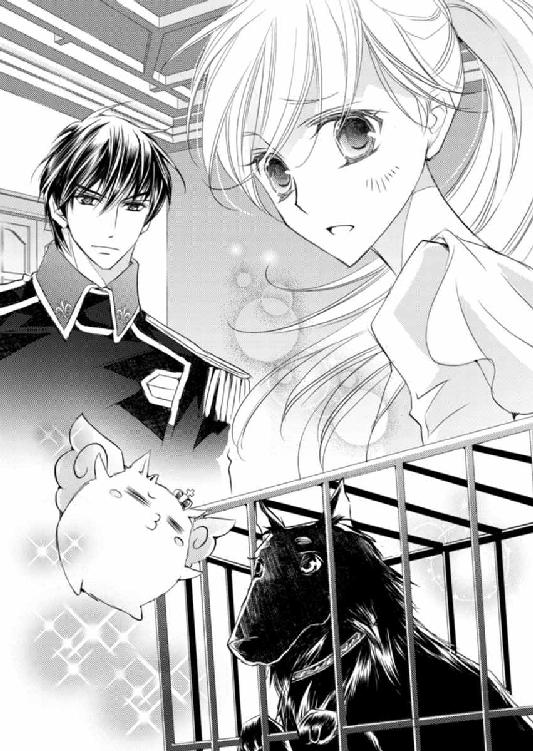
目を丸くしていたゼノは、だがキルラの話を聞くうちに、次第に前のめりになって夢中になっていった。
ことに、クロエが登場した時など、目に見えて瞳を輝かせる。
ラウラにしてみれば、いくらキルラの口からとはいえ、自分自身とヒューバートのことを聞かされるのは恥ずかしくてならない。
だが 楽しそうな二匹を前にしては文句も言えず、ラウラは小さく肩を落とした。
「もう」
ヒューバートは意外にもキルラの話を興味深く聞いていて、止める気配は微塵もない。
微かに頰を染めながらも、ラウラは途中だった食事を再開したのだった。
◆◆◆
「――あなたにとっての一番近い転換期は、七ツ日後。目覚めから夕刻まで、気持ちを研ぎ澄ませて、運を逃がさないようにしてください。ことに、その日青い服を身につけたひとと関わりを持つとよいでしょう。そのひとはあなたにとって、素晴らしい幸運の使者となりますから。......以上です」
クロエ・ファウベルが静かな声でそう言い終えると、今夜最後の客は、しっかりとうなずいた。
礼を言って部屋から出て行く客の背中を見送ったクロエは、ふと、眉間に、キン、と刺激が走るのを感じた。
額の辺りに、こんな感覚を覚えることはよくある。
目では見えない。だが不思議な力を持つクロエには、気を澄ませば、占術館『ファシス』内にあるこの仕事部屋に何者かが潜んでいることは、すぐに感知できた。
「いるでしょう」
他人にも、家族であるラウラにすら聞かせたことのない、低い声が、可憐なクロエの唇から溢れ出た。
「隠れていないで出てきたらどう。『リムレ－リムロ－リシロ』......ん？ あれ、なんか違うような......。リムロ－リスレ－リロムだっけ？」
「リムル－リシル－リスレである！ 間違えてはならん！」
癇癪を起こしたかのような声が、小さな仕事部屋に響く。その声のあとに、クロエの前に、黒く丸いふわふわの獣が姿を現した。
「長いよ、名前」
「むっ、妾の名をバカにするなぞ許さんぞ！」
「バカにしたわけじゃないけど、覚えづらいのよ。もっと短いといいのに。いっそ最初の文字を取って、リリリでいい？」
「ダメじゃダメじゃ！」
反射のように首を横に振った、ふわふわの獣――リムル－リシル－リスレは、だが、ふと小さく首を傾げた。
「リリリ。......リリリか。響きは悪くないの......」
そう呟いた声を聞き逃さなかったクロエは、じゃあリーって呼ぶか、と独断で決めてしまった。
「ちょ、リリリではないのか!?」
「リリリって言いづらいじゃない」
「と、というか！ 妾はいいとゆうた覚えはないぞ！」
「間違ってもいいっていうなら呼ぶけど、えーと、リルロ－リムリ－リラルだっけ？」
「なんじゃそれは！ どんどん真名から遠くなっていくではないか。もはや〝リ〟しか合うておらんぞ！」
「なんとなくあなただってわかるからいいじゃない」
あっさりそう返すと、リムルは愛らしい頰を、ぷっくりと膨らませた。
「そ、そんな、そんなおざなりな言い方......」
「そのうち覚えるから。――で」
クロエの声が、微かに低くなる。その声を聞いて、リムルはハッと大きな眼を見開いた。
自分から訪ねてきたというのに、警戒心も露わにクロエをじろじろ眺め見る。
「......そなた、まるで妾がここにやってくると確信していたような反応じゃな」
「来るかなとは思っていたよ。来てもらわないと困るとも思っていたからね」
「なにゆえじゃ」
探るように、リムルは問うてくる。
クロエは椅子からゆっくり立ち上がった。
薄紫色のドレスの裾が、さらりと揺れる。
クロエはリムルと近く顔を合わせ、そうして薄く色づいた唇をそっと開いた。
「リー、あたしの誓約のヴァハラになって」
「――」
リムルの顔いっぱいに驚きが広がる。だがそれも一瞬のこと、その表情は嘲笑に歪んだ。
「はっ、何をゆうておる。そなたを誓約者になぞ、絶対にしないわ！ 妾の誓約者はのう、特別な能力があるのはもちろん、賢く逞しく健康で地位のある血筋のよき者でなければならん。さらに理知的で行動力がありかつ思慮深く優しく温かい心持ちでちょっぴり悪戯心のある人物でなければの！」
今朝聞いた『理想』と一字半句違わない。
クロエは微動だにせず、リムルを見据える。
「確かにあたしは、逞しくもないし、あんまり丈夫でもないし、血筋だって普通だよ。でもね、あたしはあなたが喉から手が出るほど欲しがっている、『特別な能力』のある誓約者になる自信がある」
「......ッ」
「『特別な能力』があるひとなんて、人界にそうはいない。あなたが固執した、ジェイラスさんみたいなひとは、ロレンシア国中を探し回っても、見つけられないかもしれない」
クロエはきっぱりとそう言った。
リムルの漆黒の毛が、微かに震えた。
「だからリー、あたしで手を打っておきなよ」
「そ、......そなたは女ではないか。女の誓約者は嫌じゃ。カッコよくなければ嫌じゃ！」
「じゃあラウちゃんみたいに軍服でも着て男装するから」
「だ、だんそう......ッ!? 妾がゆうているのはそういうことではない！」
「人間の外側なんてそんな気にしてどうするのよ。大して変わらないよ」
「変わる！ 物凄く変わるぞッ！ そなた自分が、ひらひらふわふわキラキラが似合うからといって、驕りすぎじゃ！」
「あ、やっぱりふわふわとかキラキラとか好きなんだ。じゃあこれあげるから、とりあえず誓約のヴァハラになって」
クロエは自らがつけていた指輪を抜き取ると、小さな角に被せた。
「うっ？」
「これじゃ足りない？ だったら首飾りも、ラリエットも」
次から次へと装飾品を外し、リムルにぐるぐる巻きつけた。
「こ、このような貢ぎ物くらいで妾の気持ちが、気持ちが、変わると、お、思うな」
「強情だなあ、リーは。あなたがここに来たのは、あたしに興味があったからでしょ？」
「......」
「もう一度言うよ。あたしには、他人にはない力がある。自分にとっちゃ、あんまり役に立ったことはないけど、リーにとっては、『役に立つ』力かもしれないよ」
クロエは静かにそう告げた。
ふっつりと黙り込んだリムルは、まるで人生の岐路に立たされた人間のように、悩ましげに顔を歪めた。
「あなたの誓約者に相応しいのは、あたししかいない」
ダメ押しだ。
リムルはキッとクロエを睨み据えた。
「そなた、妾がジェイラスを呪い殺したことを知っておるであろうに。もし妾が望む働きをしなければ、ジェイラスのように呪ってやるが、それでも誓約者になるとゆうか」
「別に呪ってもいいけど、それ噓でしょ」
「う、噓？ 何が噓じゃ、妾は噓などついておらん！」
「噓、噓。そうそう呪うことなんてできるはずがない。もし呪えるならあたしだって呪っちゃいたいなあってひと結構いるけど、まあ呪えないもんだよ」
「......そなた、そんな顔をしているわりには意外と腹黒じゃな」
「あら、ギャップがあるって言って」
クロエはにっこり笑った。その笑みは一瞬で消え、真顔になる。
「そもそもあなたの力は、そういうのに使うものじゃないでしょ」
何を知ったように、とリムルはぎりぎりと歯を食いしばった。だがそれも一瞬のこと。リムルは妙に冷静な眼差しをクロエに向けると、身につけた装飾品をすべて床に落とした。
「......わかった。それほど自信があるというのであれば、試してみようではないか。ゆうておくが、そなたが妾の誓約者に相応しくないとわかった時には、即刻誓約解除をするからの！」
強い口調でそう言い放ったリムルに対し、クロエは微笑んだ。
「じゃあこれからあたしとリーは、誓約者と誓約のヴァハラってことで」
リムルが近づいてくる。
小さな前肢が目の前に迫り――クロエの額に、ぽん、と触れた。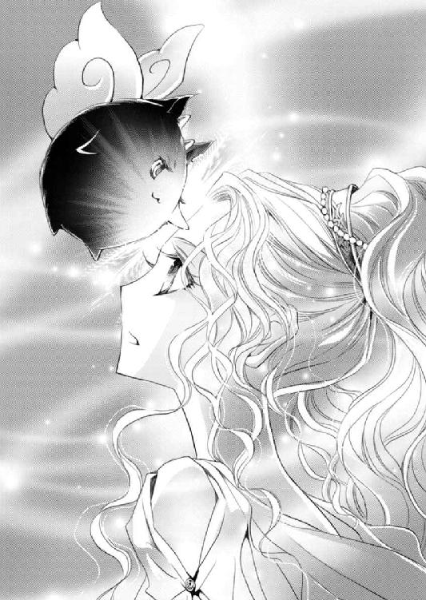
「......っ」
力が、繫がった。
気に敏いクロエは、とてつもない力が一瞬で己の中に入り込み、同時に己の持つ力が、リムルへと流れ込んだことを感じ取った。
――これが、誓約。
力と力が繫がり、混じり合い、輪となる。誓約者の力は誓約のヴァハラのものになり、またその逆もしかり。
己の両手の指先から、淡い紫色の、煙のような気が立ち上るのが見えた。
「......、じゃのう」
「え？ 何か言った？」
「なんでもない。――これで誓約完了じゃ。それで？」
「何？」
「なにゆえそなたは妾との誓約を望んだのじゃ。ジェイラスを呪ったことも含め、妾が教堂でやったことを、すべて聞いておるであろうに」
「聞いているし知っている。あなたの生い立ちも、全部視えたから」
「視え、た、じゃと？」
ええ、教堂の舞台で、額と額がぶつかった時に、とクロエはうなずいた。
「額がぶつかった時に、......視えた」
リムルはぐっと奥歯を嚙みしめるように、苦い表情をしてみせた。まだ幼い――ようにしか見えないのに、一気に年を重ねたような、そんな顔だった。
よく似たグレーバイオレットの、ふたりの瞳がぶつかり合う。
クロエはおもむろに唇を開いた。
「あたしの願いはひとつ。リー、あたしをヴァハラ獣界に連れて行って」
決意を込めた声で、そう言った。普段唱えているものとは異なる祝詞が、ユリシーズの唇から低く零れ落ちる。
仮眠を終えた午後からほとんど休まずに、術の穴を塞ぐため、ユリシーズは舞台のそばに立って祝詞を唱え続けていた。
腕のいい職人たちによる作業は、一ツ刻ほど前に終了している。まだ作業が完了したわけではないが、今朝の状態から見れば、蓋の役目をほぼ果たすほどに塞がっていた。
通常とは違う祝詞は、節が長い。調子はもちろん、一言半句間違えてはならず、ほんの少しでも言い違えたら、祝詞の役目を果たさず、最初から唱え直しとなる。それゆえユリシーズは、極度の緊張を強いられながら、祝詞を唱えた。
「穴、少しだが塞がったな」
舞台上に、繊細に織られたレースのように広がる術を、ヴァハラの目が正確に捉える。
ユリシーズの隣にずっといたアイネイアスが呟くと、教主は微かにうなずいた。
「穴の周囲に纏わりつく『あれ』が、塞ぐのを邪魔していますね」
「なんだろうな、あれ。嫌な気配がする」
ユリシーズは、通常のひとびとには見ることのできない術に、視線を据えた。
「ユリシーズ、あれがなんなのか予想がついているのか？」
「......わたしは確証がない限り、口にする主義ではありませんので」
以前シドにも言った言葉を、再び唇に乗せる。
案の定、アイネイアスも不服そうな表情をしてみせたが、長年の付き合いもあり、再度問うてもユリシーズが喋らないことはじゅうじゅう承知しているのだろう。ため息をついて黙り込んだ。
「教主、少しお休みになられたらいかがですか？」
今宵ユリシーズの警護をしているトラヴィスが、気遣いをそうとは感じさせない鷹揚な調子で声をかけてくる。
ふっと肩から力を抜いたユリシーズは、一瞬迷うように首を傾げた。
「教主が休んでおられる間は、我々が舞台を守りますから」
こちらは、舞台の警備を任されているロムロだ。
にこりと人懐こく笑うロムロにつられたように、ユリシーズも微笑む。
「では少しだけ。――ですが気にかかりますので、部屋には戻らず、この場で休みます」
おや、とトラヴィスとロムロは顔を見合わせるも、すぐに教主の望みを叶えるべく、「じゃあベッドを運び入れましょう」と、すぐに寝床の手配を始めた。
「ベッドは必要ありませんよ。肌掛けが一枚あれば十分です」
「いやいや、まさか石床に教主を寝かせるわけにはいかんでしょう」
「気にしないでください」
「いやいやいや」
ユリシーズとトラヴィスが、自身の意見を引かないでいる隣で、
「アイネイアスくん、首の傷どうです？ 診ましょうかね」
ロムロはのんびりと膝をついて、アイネイアスの艶やかな毛に手を伸ばしていた。
それからさらに、一ツ刻ほどが経った頃。
舞台には、警護隊が歩く時に立てる靴音だけが響く。
ランタンの灯りは一定の間隔で据えられてはいるものの、闇に沈む場所も多々あった。そんなところは、特に念入りに警護隊たちが見回りをしているが、ごくわずかな隙を縫って、ひとつの影が、音もなく舞台に降り立った。
舞台の上部には屋根がなく、影はそこから飛んでやってきたのだ。
右を見て、左を見る。
左から靴音が聞こえる。
影はふわりと飛んだ。
まるで羽があるかのような、ひとではありえない跳躍力だ。
そのまま宙に留まり、警護隊をやり過ごすと、小さく息をつく。
「......ゆくぞ」
「うん」
ふたりの声がした。だが闇に潜む影はひとつしかない。
再び舞台の縁に足先を乗せる。
朝に見た時には無残な状態だった舞台だが、今はほとんど石蓋で塞がっている。だが一部、未修理のところがあった。
そこを目指して、影は進む。
灯りがほとんどないにもかかわらず、その歩調に迷いはなかった。
やがて到着したそこを、影は覗き込んだ。
生温く、そしてどこか甘ったるい匂いが、下から漂ってくる。だが穴底はまったく見えない。
「何を好き好んでヴァハラ獣界になぞゆくのか。人界の方がよほど過ごしやすいのに」
「ここで行かなかったら、あなたと誓約した意味がなくなっちゃうでしょ」
それでも、底の見えない場所へと向かうのには、ほんの少しだけ勢いが必要だった。
自分でも竦むことがあるのかと思うと、なんだか少し不思議な気持ちがした。
黒い影は一度深く呼吸をすると、よし、と呟いた。
「行くよ」
ぐっと足先に力を込める。
「動くな」
背中からかかった声は、低く抑揚がなかった。
黒い影は、小さく息をのんだ。
咄嗟に振り返りそうになるも、すんでのところでこらえる。
驚いた。まったく気配がなかったのに......！
ランタンの灯りが差し向けられる気配を感じる。
「ゆっくりこちらを向け」
だが黒い影は振り向かない。
「向け」
目深に被ったフード越しに、首筋に硬い何かが触れた。――剣だ。
黒い影は一度息をついた。
言われたとおり、ゆっくりと振り返りかけ......だが剣が首から微かに浮くや否や、背後に飛び退った。
「お......ッ!?」
顔を見せるわけにはいかない。でなければ、こまごまと準備してきたことがすべて台無しになる。
「どうした、ロムロ！」
「何事です」
散っていた警護隊たちが走ってくる音がした。
にわかに騒がしくなり、黒い影は宙に浮かびながら、小さく唸る。
「浮いている......!?」
いくつもの灯りが黒い影に向けられたが、意地でも顔を見せまいと、一気に穴へと急降下した。
だが風を受けて、フードが半ば外れてしまう。豊かな髪が風になびいて露わになるが、急いでフードを被り直した腕を、何者かの手が、ぐいと摑んだ。
「......ッ！」
だがそのまま、止まらない。止まれない。
「君は、ラウラさんの、あ......！」
黒い影はその手の主とともに、穴の中――ヴァハラ獣界へと飛び込んでしまった。
◆◆◆
「ラ、ラウラ、ちゃん......」
小さなランタンをひとつだけ灯した書庫の中で、気弱げな声がラウラを呼んだ。
浅い眠りに身を委ねていたラウラは、その声に目を覚ます。
「ん、......なんです、ゼノさん？」
「寝ているところごめんね。あのね、ええとね」
「はい？」
「あのね、おトイレに行きたいの......」
「あ」
ラウラは慌てて起き上がった。すると、壁に凭れかかって目を閉じていたヒューバートもまた、すぐに剣を手に立ち上がる。
「お夕飯、食べすぎちゃったのかも。......お腹がゴロゴロしちゃって」
すまなそうに頭を下げるゼノに、ラウラは微かに笑った。
「大丈夫ですよ、行きましょう」
檻の鍵を開けて、ゼノを外に出す。
ゼノの首輪には、荒縄が括られている。一応脱走防止のためなのだが、ゼノに逃走する意思はないようだ。
それはシドに、
『とりあえずことが済んだらさ、あのキルたんもどきを探そうって、元帥に進言してやるよ。おまえも会ったことあるなら、元帥の情け体質は知っているだろ？ で、見つかったらおまえと対面させてやるから、絶対逃走、すんなよ』
そう言われたことが大きいのだろう。
ゼノとしては、ジェイラスの仇であるリムルを自分の手で探し出し、納得できる形で決着をつけたいに違いない。
だが今のゼノは、キルラを見るなり襲ってきた時の彼ではなかった。
『あのね、クロエちゃんに言われて、ボク思い出したの。ジェイラスも、暴力で何かを解決するのを嫌っていたことを。まず話し合って、お互いの気持ちや意見をちゃんと伝え合って、重なるところがあったらそれを伸ばして、違うところは重なるよう努力して......。ボクね、あの黒いのと、もっとちゃんと話し合いたいんだ。多分ジェイラスも、それを望んでいると思うし、ボクがジェイラスの教えを守っているって知ったら、きっとすごく喜ぶと思うんだ』
ゼノの表情は、亡きジェイラスを思い出したのか、ほとんど泣きそうだったけれど、そう言って小さく笑ったのだった。
それがゼノの、偽りのない本音だと、ラウラにも伝わってきた。
「俺が行く。おまえは休んでいろ」
ヒューバートがゼノを促し、書庫の扉を開けたところで、バタバタと慌ただしく走る音が聞こえてきた。
「え......？」
なんだろう、何かあったのだろうか。
ラウラは不安を覚えて、ぐっすり眠るキルラを腕に抱きながら、ヒューバートの後ろからそっと廊下を覗いた。
「どうした」
警護隊のひとりを捕まえ、ヒューバートが問う。
「舞台に侵入者があった模様です」
「教主は」
「ご無事です。ですがバルディリス中尉が、侵入者とともにヴァハラ獣界へ落ちたと――！」
「ロムロさんが......!?」
ラウラとヒューバートは顔を見合わせるや、急いで舞台へと向かった。
到着した舞台は騒然としていた。
トラヴィスや王都からやってきた護衛ふたりが、ユリシーズと何か話をしている。
今夜舞台の警護を任された王仕隊や守護団たちによる、物々しい警備が敷かれる中、ラウラたちはユリシーズに駆け寄った。
「ユリシーズ教主様！」
「少将、......ラウラ・ファウベル」
「ロムロさんがヴァハラ獣界に落ちたって聞きました」
「ええ、賊を捕まえようと腕を摑んで、そのままです。今アイネイアスがあとを追って、ヴァハラ獣界に行っているのですが......」
まだ見つからない、ということだろう。
ラウラは胸を押さえながら、そっと舞台に開いた穴へと目を向けた。
ヴァハラ獣界に人間が行く――そんなこと、できるはずがないとラウラは思っていた。
だがヒューバートは、祖父のブルーノ・ガーディナーとともにヴァハラ獣界を旅したことがあるというし、それにラウラの姉、クロエも、以前ヴァハラ獣界に落とされたが、無事サクリクスに助けられて戻ってきたということがある。
人間もヴァハラ獣界へ行けるのだ。
ロムロは軍人で、ヒューバートのように、頑強な身体をしている。それでもやっぱり心配で、なんだか落ち着かなかった。
「侵入者は」
ヒューバートが護衛のひとりに問うと、無念そうに首を横に振る。
「それが、目深にフードを被っていたのと暗かったのとで、顔は見えませんでした」
舞台には灯りがともされているが、それでも五ガランも歩けば、そこは手元すら見えないほど暗い。この薄暗さでは、人相だってわからないだろう。
不安に駆られ、うろうろと視線をさまよわせていると、ヴァハラ獣界からアイネイアスが戻ってきた。
「ダメだ、見つからない」
首を振り振り、ユリシーズの足元に降り立った。
「ヴァハラ獣界から人界へ来る時には、焚かれるサーリァの香の匂いを辿って来るから間違えようもないが、ヴァハラ獣界に戻る時には、通路がいくつか枝分かれしているうえに勢いよく落ちるからな。匂いを辿ったが、通路中に拡散してしまって追い切れなかった」
「......そうなんですか」
悄然とため息をついたところで、舞台上空から、イムの背に乗ったシドが急降下してきた。
なぜ外に、と首を傾げるラウラの前で、シドはイムから飛び下りると、足早にユリシーズと向かい合った。
「いなかった」
「......そうですか」
「ヒュー、それから小娘」
「は、はい？」
「キルたんもどきとやりあったあと、小娘の姉、なんか言ってたよな、出張占いに行くとかなんとか」
「え、はい」
「これ、部屋に置いてあったやつ」
「――屋敷に行ったのか。なぜ」
ヒューバートの低い問いに、シドは軽く眉根を寄せる。
「小娘、まずこれを読め」
手紙を差し出されたラウラは、何がなんだかわからないまま、封を破って中の文字に目を通す。
「なんて？」
「急だけど、朝言っていた出張占いに、今夜から行くことになった、と。どれくらいかかるかわからないけれど、心配しないで、......だそうです。あの、姉が、何か......？」
なんだか、ひどく嫌な予感がする。
「占術館『ファシス』の支配人のところにも行ってきた。確かに出張占いに行く予定はあるが、それはまだ計画中だそうだ。ただ、小娘の姉だけ、今夜から出るってことを、本人から聞いているって」
「え、ひとりで、ですか？」
「そう、ひとりで」
なぜ、今、占いの旅に、しかもひとりで？
「守護団たちに、小娘の姉の足取りを追うように言っている。目撃者はまだひとりもいないようだけどね」
「シド」
話せ、とのヒューバートの求めに、シドとユリシーズは揃って息をついた。
やがて唇を開いたのは、ユリシーズだった。
「ヴァハラ獣界に、ロムロとともに落ちた侵入者は、クロエ・ファウベルであると疑われます」
衝撃的な話に、ラウラは呆気に取られた。
「姉......、な、どうして......!?」
うろたえ、思わずユリシーズに詰め寄ると、当の教主は悩ましげに眉根を寄せる。
「暗かったので、わたしの目だけであれば、見間違えたかと思ったことでしょう。ですが」
「娘の姉の香りが特徴的だってことは知っているな？」
アイネイアスに言われ、ラウラは無意識のうちにうなずいていた。
ヴァハラ獣界の大多数の獣が好む香りを、クロエが纏っていることを、ラウラも当のヴァハラたちから聞いている。
「その香りが漂っていたんだよ。間違いようもない、あれは娘の姉の香りだ」
「......」
「それにユリシーズが言ったとおり、ひとの目では見づらかっただろうが、ヴァハラの目は、ひとよりよく見える。今のような暗がりでも、娘が泣きそうな顔をしていることもな」
言葉もなく黙り込むラウラの背を、そっと支えてくれる手があった。
見なくてもわかる、ヒューバートの、優しい掌だ。
けれどラウラは、ヒューバートの思いやりにも、ガチガチに硬くなった心を緩められず、ただ拳を強く握ることしかできなかった。
「俺も見たんだ。黒髪の、娘の姉の顔を。はっきりと」
「黒......」
クロエは黒髪ではない。それは美しい、月光を紡いだようなプラチナブロンドをしている。
だがその事実は、ラウラを安堵させてはくれなかった。むしろさらに絶望的な気持ちになる。
「まさか」
「同調をしていたのでしょう。侵入者が宙に浮かんでいた場面を目にしています。つまり侵入者......クロエ・ファウベルはヴァハラと同調し、この儀式場に侵入し、自らヴァハラ獣界へと飛び込んだ――と思われます」
「無理やり誓約を迫られた可能性もないわけじゃないが、小娘に手紙を残していたことを考えれば、納得ずくって考える方が自然だな。その手紙、姉の筆跡だろう？」
握りしめていた手紙に目を落とす。
シドの言うとおり、見間違うこともない、これはクロエの文字だった。
「同調はそう簡単にできないってことは知っているな？」
アイネイアスの静かな声に、ラウラは硬く目を閉じながら、微かにうなずいた。
「どちらかが拒んでいたら、同調はうまくいかない。つまり」
もしその侵入者がクロエなのだとしたら、姉自身が望んで同調をしたと、――そういうことだ。
どういうことなのだ。
クロエはなぜ、ヴァハラ獣界へ行こうとしたのだろう。ラウラに何も言わずに......。
たったひとりの姉の不審なふるまいに、ラウラは震えずにはいられなかった。
「......どうして」
「ユ、ユリシーズくん」
「なんです、ゼノ」
「本当に、それ、クロエちゃんだったの？ よく似たニセモノじゃないの？ だってクロエちゃん、ボクとは絶対に誓約しないって、あれほど言ったのに、なんでほかのヴァハラとすぐに誓約するの？ クロエちゃん、そういう子じゃないでしょ？」
ずっと黙り込んでいたゼノもショックだったのか、涙ぐみながらユリシーズに言い募る。
珍しいことに、ユリシーズは言いよどむ。
「そうじゃぞ。ラウラの姉は、ラウラの家族じゃ。じゃから我の家族でもある！ 家族を信じずにどうするのじゃ！」
眠っているとばかり思っていたキルラが、突然強い口調でそう言い放った。
「ゼノ、泣くでない。あれほどにそなたが誓約者にと望んだラウラの姉じゃぞ。もしラウラの姉が何者かと誓約し、本当にヴァハラ獣界に行ったのだとしても、きっと何か理由があるのじゃ。もっとしっかり信じるがよい！」
「......キルラ」
「ラウラも泣いてはダメじゃぞ？」
小さな前肢を伸ばし、キルラはラウラの目元を優しくなぞる。
涙は出ていないのに、そうされたらなんだか逆に泣きたくなってしまって、ラウラは俯いた。
「うう、キルラはいいこと言うなあ。うん、ボク、クロエちゃんのこと信じるよ」
「信じるのはいいとして、実際どうするんだよ。仮に自ら望んでヴァハラ獣界に行ったんだとしても、このまま放っておくわけにはいかないだろ。それにさ、小娘の姉が何と誓約したのかも、すっげ、気になるんだけど」
「まあ、順当に想像すれば、『アレ』ですなあ」
シドの問いを受けて、トラヴィスが上空を仰ぎながらため息をつく。
「『アレ』か」
この場にいた全員が、恐らく同じ姿を思い浮かべたことだろう。
『アレ』。
リムル－リシル－リスレの、あの丸いフォルムを。
「いずれにしても、訓練も受けていない普通の人間には、ヴァハラ獣界の環境は過酷極まりないですよ。ヴァハラと同調していれば、確かに安全かもしれませんが、娘さんの姉君は、長時間の同調に耐えられるのでしょうか」
イムが考え深げに呟いた。
――姉さん。
ラウラは拳を握って、深く俯いた。
クロエに訊きたいことはたくさんある。けれど今はただ、姉の安否が気がかりでならない。
無事でいて。お願い。
できることなら、今すぐに、ヴァハラ獣界へと続くあの穴へ飛び込んでしまいたい。
けれどそんな無茶はできなかった。
ラウラの身だけなら、迷わずそうしていただろう。だが今のラウラは、独断で動いてはいけないのだ。
誓約の鎖で繫がっているヒューバートを、自分の都合で振り回すわけにはいかない。
それでも、胸の奥から震えがじわじわと溢れてくる。
ラウラの不安を感じ取ったのか、ヒューバートの力強い掌が、肩を支えてくれた。
先刻は見られなかったヒューバートを、ラウラはそっと振り返る。
クロエを心配するラウラが心配なのだ、というような、気遣わしげなヒューバートの眼差しだった。
「......将軍」
ヒューバートだけでなく、キルラもまた、ラウラをじっと見つめた。
「ふえっ？」
突然ゼノが頓狂な叫び声をあげた。
「な、何するの、アイネイアスく......、うわぁぁぁぁ――っ!!」
絶叫とともに、ゼノは舞台の穴からヴァハラ獣界へと落ちてしまった。
ラウラばかりか、その場にいたほとんどの者たちが、アイネイアスの行動に、面食らって立ち尽くす。
だがアイネイアスは、自身に向けられるたくさんの視線をものともせず、澄ました顔をして舞台上から下りてきた。そしていつものように、ユリシーズの脇に戻ってくると、優雅にお座りをした。
「おや、ゼノを逃がしてしまいましたね。困ったことだ」
戻ってきたアイネイアスに、ユリシーズの落ち着いた声がかかる。
「ユ、ユリシーズ教主様......？」
「ゼノの捕獲は、ガーディナー少将以下、王仕隊の任務でしたね」
ユリシーズが真っ直ぐ見つめた先にいるのは、ヒューバート・ガーディナーだ。
「――」
目を白黒させるラウラへ一瞬視線を滑らせると、すぐにヒューバートの紺碧色の瞳が、キルラを捉える。
「い、いったいどうしたというのじゃ。なにゆえユリシーズのヴァハラは、ゼノを蹴り落としたのじゃ。ひどいではないか！」
憤慨しているキルラを、ヒューバートの大きな手が引き寄せた。
「うぉっ？ ど、どーしたのじゃ、ヒューバート」
「ラウラと同調を」
「ん？ なにゆえじゃ？」
「ヴァハラ獣界に行く」
「――」
キルラは丸い目をさらに見開いて、まじまじとヒューバートを凝視した。
ラウラもだ。
――ヴァハラ獣界へ、
「行く、って......」
え、どういうこと？ とラウラはヒューバートを、ただただぽかんと見ることしかできずにいた。
「キルラ－キルレ－キロル」
低い声に呼ばれ、キルラはめまぐるしく何か考えていたようだ。何度も瞬きをし、そうして正解に辿り着いたのか、パッと顔をほころばせる。
「わかったぞ二番目！ 一番目、同調じゃ――！」
「え、ええ!?」
うろたえているうちに、キルラが目前に迫る。視界はキルラでいっぱいになり――そして気がついた時には、キルラの姿はなくなっていた。
「いざ、ヴァハラ獣界へ、じゃ！」
ラウラの口から、キルラの声が発せられる。
「ちょ、え......、な、なんでっ!?」
「ゆくぞ、ヒューバート。急ぎヴァハラ獣界へ向かい『逃げたゼノを捕らえる』のじゃ。そしてそのついでに、あくまでもついでじゃぞ、それが目的ではないぞ。ついでに『ラウラの姉も捜す』のじゃ――！」
――あ。
ヒューバートの手が、ラウラの二の腕を摑んだ。痛くはないが、決して離れないよう、しっかりと握られる。
「ヒュー」
シドが何かを放ってきた。
頑丈な防水布で作られた、軍人が持つリュックだった。
片手で受け取ったヒューバートは、それを肩に掛けると、舞台にのぼる。もちろんラウラも一緒だ。
「あと小娘はこっち」
「えっ」
ポォン、と飛んできたバッグを、おたおたとキャッチする。
「行ってくる」
「あ、わ......わあっ！」
覚悟する暇もないほど至極あっさりと、ヒューバートは足を踏み出す。そして舞台の穴......ヴァハラ獣界へと続く通路へと飛び込んだ――！
◆◆◆
「ヘタなサル芝居、ホント見ていられなかったよ」
「言っておきますが、サル芝居に口出しもせず、あまつさえ、少将たちに荷物を渡したシドも同罪ですよ」
「いやはや、殿下は本当に思いきりがいいですな。元帥にどう報告すべきか、少々困るんですが。......本当になんて報告しましょう」
苦笑いを浮かべているのはトラヴィスで、足元のイムも盛大なため息をついている。
「規律を守らないのは感心しませんよ、ユリシーズ」
「ホントホント、軍法会議モノの失態だよなー」
「わたしは軍人ではありませんから」
ユリシーズは、シドの嫌みをさらりと受け流す。
「ゼノだって、どうして自分が落とされたのか、まったく理解していないでしょうし、ヒューたちとすぐに再会できるかもわかりませんよ」
「あーあ、ゼノがヒューたちより早く、キルたんもどきと会ってしまったらどうするんだよ。ゼノがコテンパンにのされたら、誰が責任取るわけ？」
イムやシドたちから、やんわりと咎められたユリシーズだが、浮かべた微笑はまったく揺るがない。
「突破口が欲しいのですよ」
「突破口？」
「ええ、ここ最近、謎や厄介事が増えるばかりで、何ひとつ解決できずにいる。――人界にいるだけでは、現状打破は難しいのではないか、と」
「だからヒューをヴァハラ獣界に行かせたって？ そんなに気になるなら自分が行けばー？」
「行かせてくれるのでしたら、喜んで」
ユリシーズは美麗な面に、このうえなく無邪気な笑みを浮かべた。
あまりの似合わなさにぞっとしたのか、シドが思わずといったように、一歩下がったくらいだ。
「ユリシーズ、本当に本気で行きたいのなら、俺が案内するぞ。ま、人界に比べて危ないところだらけだから、あんまり勧めはしないがな」
誓約者命のアイネイアスがすかさずそう言うと、イムが、やめなさい、とたしなめた。
「基本的にひとが来るべき場所ではありません。ヒューやロムロのように、格別に身体能力に優れている者か、ヴァハラと同調した者でなければ無理ですよ」
「では、余命宣告を受けた時にでも行ってみましょうか。ということで、少将たちが戻ってくるまで、わたしたちにできることをしておきましょう」
「できることって何さ」
ユリシーズは顎に手を当てて、舞台をじっと見据える。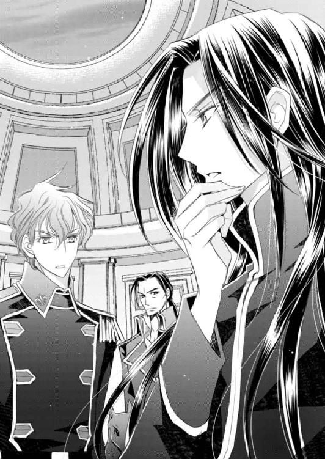
「そうですね。たとえば、ファウベル家のことを、もう少し知りたいですね」
その場にいた者たちが、互いの顔を見合わせる。
「つまり小娘の姉――クロエ・ファウベルのことを調べろってか？」
「クロエ・ファウベルももちろんですし、姉妹の両親のこともです。行方知れずとか」
まあね、とシドはうなずいた。
「そしてラウラ・ファウベルのことも」
「小娘の何が気になるわけ？ 普通の娘だろう？」
「本当に普通の娘ならば、あれほどスムーズに同調できるでしょうか。シド、軍人のあなただって容易くできないのに」
ユリシーズの弁に、シドの眉間が微かに寄る。
「それは嬢ちゃんの方ではなく、誓約のヴァハラ側に原因があるとは考えられませんかね？」
「確かにクーガン警護隊長のおっしゃるとおり、キルラ－キルレ－キロルの力に依るものかもしれませんね。クロエ・ファウベルがもし『アレ』と誓約し、同調したというのであれば、もちろんそちらも」
ヴァハラらしからぬ姿をしながら、自らをヴァハラと称し、ヴァハラの力を持つ、キルラとリムル。
あの二匹には、どんな謎があるのだろうか。
ユリシーズは再び舞台へと顔を向け、一度として見たことのないヴァハラ獣界へと、つかの間思いを馳せた。
◆◆◆
ごうごうと、風が耳の中で鳴っている。
野分もかくやとばかりの風が、下ろしたままだったラウラの髪をめちゃくちゃに煽り、着ていたオフライトの白い長衣までも盛大にめくり上げる。
だがそんなことに気を取られている暇は、ラウラにはなかった。
「さっ、さながら、暴れ馬に間違って乗っちゃった時のようなっ！ うわわわわぁぁぁ！」
舞台から覗いたヴァハラ獣界へと繫がる通路は真っ暗で、ラウラは視界が利かないと思い込んでいた。
きつく目を閉じてヒューバートにしがみついていたラウラだったが、キルラに「ラウラ、何も見えんぞ、目を開けるのじゃー！」と促される。
確かにラウラが目を閉じていたら、同調しているキルラも周りが見えない。
おずおず視界を開いた先には、極彩色の世界が広がっていた。
「ええ――ッ!?」
恐らくラウラだけならば、さまざまな色が瞬いているようにしか見えなかっただろう。だがキルラと同調しているからか、凄まじい勢いで落ちながらも、くっきりと景色が見える。
「わ、わっ」
「どうじゃラウラ、今見えるのはわが故郷、ヴァハラ獣界じゃ！」
「ええっ、これ、ヴァハラ獣界なの？」
「そうじゃ！」
ひとつの口からラウラとキルラの声が出てくるのが面白いのか、ヒューバートがごく軽く笑う気配がした。
「ここはのう、果てなしの海じゃ」
「うっ、海？ え、この色、海の色なの？ すごくいろんな色が見えるのに......！」
と。
ぐるん、と視界が反転した。
「わあ！」
落ちていたはずが、どういうわけか上昇しているような感覚を覚える。景色も先刻とはまったく異なる、白黒の物憂げで鬱蒼とした、どこか不気味なものへと変わった。
「おお、あの白黒の森は、はじまりの森というのじゃぞ、ラウラ！」
「は、はじまりの森？」
「そうじゃ、あの森には不思議な言い伝えがあっての。森の真ん中に、ひときわ高い巨木があるじゃろう？ あそこで最初のヴァハラが生まれ出でたそうじゃ。そして森の奥深くに、ヴァハラの神が住んでおると、じじから聞いたことがある」
「へ、へえ」
またぐるん、と景色が変わる。
今度は目にも眩しい、陽光に溢れた大地が広がっていた。
低木がぽつぽつと生えた、見渡す限りの草原だ。
緑色の大地を、馬に似た、だが明らかに馬ではない動物が、数十頭も疾走している。
「すごい角！」
人界にも大きな角を持つ動物がいるが、走るそれは、まるで芸術品のように複雑な形をした、立派な角を生やしていた。
「あの角は美しいが、物凄く硬いのじゃ。じゃが暑い季節の終わりに突然ぽきんと折れての、また生え変わるのじゃよ」
「生え変わるんだ！」
次から次へと景色が変わる。
身体は上になったり下になったりとまったく安定しない。
そんな状態を、最初こそ怖がっていたラウラだったが、くるくると変わる物珍しい景色に心惹かれ、いつしかこの状態を楽しめるようになった。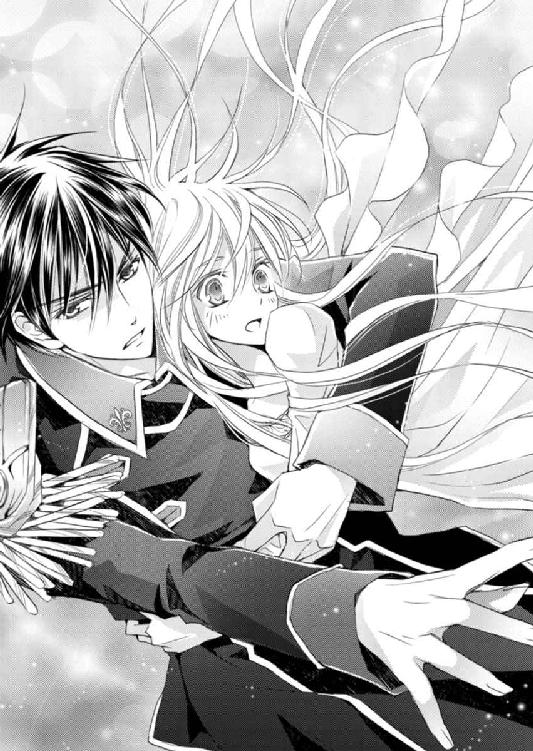
「すごい、すごいですね、将軍！」
ぎゅっとヒューバートにしがみつきながら、ラウラは顔を上げる。
いつもとまったく変わらないヒューバートがそこにいたから、なおもラウラは安心する。
――将軍がいてくれるから大丈夫。
この先にあるヴァハラ獣界がどんなところであったとしても、一番信頼する、そして一番大切なヒューバートとキルラがいてくれるのだ。
がんばれる。
――姉さん、行くよ。
クロエが何を考えて、ヴァハラ獣界へ来ようとしたのかわからない。
多分、再会したら、ラウラだけでなくヒューバートやユリシーズ、警護隊の皆に迷惑や心配をかけたことを叱るだろう。
そしてひとしきり文句を言って、そのあとでぎゅっと抱きしめるのだ。
だから無事でいて。
お願い、無事でいて、姉さん。
胸の内でそう囁いた刹那。
突如として通路が消失した。
ポォン！
そんな音が聞こえてきそうな勢いで、ラウラたちはヴァハラ獣界に投げ出される。
「う、わぁぁっ！」
頰に当たるのは、冷たい飛沫――水だ。
咄嗟に下を見る。
地面がない！
地面どころか、ラウラたちの下方には、水しかなかった。
「たっ、滝――！」
ごうごうと音を立てる、巨大な滝が足先にある。そう認識したかどうか、という一瞬の空白のあとで、ラウラたちは一気に下へ......滝の中へと向けて落下した。
「いやぁぁぁ！」
落ちる、こんな高さから落ちたあとに、生きている自信がない......！
「ラウラ、目を閉じてはならん！」
凜としたキルラの声に、ラウラは瞠目する。そして己は今同調しているのだと、いまさらながら再確認する。
キルラの力により、ラウラは滝に落ちることなく宙に浮いていた。
「うっ、お、おも......いっ」
浮いていると認識した途端に、ラウラは自らの両手でヒューバートを抱きかかえていることに気づいた。
もちろん同調をしていないヒューバートは飛べない。
腕にかかるずっしりとした重みに、危うく落ちそうになるも、力を込め直す。
「ラウラ、ラウラ......！ あそこじゃ」
「うん、あそこだね！」
唸りながらヒューバートを漸う支えつつ、ラウラ（とキルラ）は無事、岸辺によろよろと到着した。
「やった、よかった......」
「ラウラ、キルラ－キルレ－キロルも、すまなかった」
「いえ、そんな！ これは仕方ないです。まさか滝の上に飛び出すとは」
ラウラはその場に座り込んだ。ともに膝をついたヒューバートがねぎらうように、そっと抱き寄せてくれる。ヒューバートの胸に凭れかかりながら、細く長い息をついた。
「......着きましたね、ヴァハラ獣界」
「ああ。久しぶりだ」
巨大な瀑布は、落ちてくる水の量も多く、また音も大きい。
だがキルラと同調しているからか、研ぎ澄まされた聴覚は、ヒューバートの低い声もよく聞きとることができた。
「ところで、姉さんは......、あとゼノさんは、いないのかな？」
ヒューバートの腕の中からそっと出ると、首を巡らせる。
「うむ、違う場所に落ちてしもたか」
「え、同じところに落ちるわけじゃないんだ」
「通路で見た景色があったじゃろう？ もしかしたらあの景色のうちのどこかに落ちたのかもしれん」
極彩色の海、白黒の森、光溢れる草原......。
ほかにも、ラウラが怖くて目を閉じていた時に、いくつか景色が通り過ぎていっただろう。
ラウラが指折り数えていると、
「赤く背の高い真っ直ぐな草が群生していた黒い沼、たくさんの巨木と水色の六枚の花びらを持つ花が咲いた、澄んだ水が湧き出る場所も見た」
さすがヒューバートだ。ラウラが見損なった景色を、すべて目にしていたようだ。
「じゃあ、その五カ所のどこかに、姉さんやゼノさんが落ちた可能性が高いってことだね」
「ではまずは、その場所に行ってみようぞ！」
キルラが元気にそう宣言した次の瞬間、目の前が青一色に染まる。
「え」
迫りくる『青』を凝視していると、ヒューバートがラウラの腰を抱いて立ち上がらせ、横に飛び退った。
「あ......！」
「走るぞ」
ヒューバートに言われるまま、ラウラは足をもつれさせながら走りだす。
「あ、あれは......！」
「シシハヤじゃ――！」
逃げるのじゃ！ とキルラが悲鳴をあげる。
「あっ、あれがっ、本物のシシハヤなんだ！」
人界に来ていたシシハヤは、どういうわけか皆身体が透けていて、青白い光を纏っていた。
輪郭もぼんやりしていたから、とても幻想的に見えたものだが、ヴァハラ獣界のシシハヤはといえば、本当に人界にいる魚のようだった。
小さな鱗まで、くっきり見えるからだろうか。
まさに空魚。空の魚だ。
シシハヤはひとつの塊になって、ラウラたちを追いかけてくる。
生き生きと力強く空を泳ぐシシハヤは、人界で遭遇した時よりも速かった。
「シシハヤはなんで追いかけてくるの!?」
「わからんが、どうも怒っているようじゃの」
「ええっ？」
怒らせるような真似をした覚えはないのに、とラウラが呟くと、塊から一筋、離れた空魚たちが、横から突っ込んできた。
「う、うう......！」
息ができない。
走りながら呼吸を止めなければならないのが苦しくて、ラウラは強く首を振った。ヒューバートがラウラに纏わりつく空魚を手で払う。するとますます怒りを増幅させたのか、空いっぱいに広がった空魚は、真上からラウラたちに覆い被さってきた。
このままでは窒息させられてしまう......！
手で防ごうにも容易く避けられて、シシハヤは顔をめがけて飛んできた。
――も、ダメ......！
目を閉じかけた視界の隅に、ふわりと青白い光がよぎった。
「......ぇ？」
ンピチュ！
青白い光が鳴いた。
同時に、ラウラの脳裏には、『やめるべさ！』という音が響く。
「や、やめる......べさ？」
ンーピチュ、ピチュ！
むやみに攻撃するのはやめるべさ！
ラウラが混乱して、おろおろと目の前に迫るシシハヤ一行と青白い光、そしてヒューバートを順に見やる。
そこで、シシハヤ一行が静止していること、そして青白い光が、人界で見たシシハヤであることに、同時に気づく。
ンピチュピチュピチュ。
べさってことは、山向こうの、『※＄＃＊』のモンか？
ンピチュ、ンーピチュピチュ。
そうだべさ。とにかく攻撃はやめるべさ。
ピチュ......ピチュ。
仲間が言うことなら......仕方がない。
ピチュ、ピーチュ！
だがそこのおまえら、二度と儂らのシマを荒らすなよ！
そんな音が聞こえたかと思うと、シシハヤ一行はその場で旋回し、勢いよく空を泳いでいった。
「ええと......助かった、ね？」
「うむ。そなたのおかげじゃ、礼を申すぞ。じゃが、どこから出てきたのじゃ？」
ンーピチュピチュ。
「あ、ロムロさんに懐いていた、五匹のうちの一匹か！」
手を打ってうなずく。
ミルドレッド元帥の警護隊の一員であるロムロ・バルディリス中尉は、人界にやってきた五匹の空魚、シシハヤに気に入られたらしく、ずっと纏わりつかれていた。
リムルがやってきた時には、彼の頭の上で皆眠っていたが、あのあとヴァハラ獣界に戻されたものと、ラウラはすっかり思っていた。
ところが実際はヴァハラ獣界に戻っていなかったそうで、ロムロがクロエとヴァハラ獣界に落ちた時には、この一匹は舞台の隅でぐーすか寝ていて、置いてけぼりを食ったのだそう。
仲間とはぐれたために、当座の住まいとしてシドに渡されたラウラの荷物に入り込んでいたそうだが、そのうち眠ってしまったのだという。
ずいぶん眠るのが好きなシシハヤのようだ。
ピチュピチュとさえずるシシハヤの話を聞き、それをヒューバートに伝える。
「ラウラは、このシシハヤの言葉がわかるのだな」
「あ、はい。キルラと同調しているからでしょうか？」
「かもしれんの」
ラウラの中で、キルラとうなずき合っていると、ヒューバートはふと、顎に手を当てて、何事か思案する。
「将軍？」
「キルラ－キルレ－キロル」
「なんじゃ？」
「シシハヤは、念で仲間と交信ができると聞いたことがある」
うむ、そうじゃ、とキルラはうなずいた。
「このシシハヤに、ロムロとともにいる四匹の仲間が今どこにいるか交信してほしい、と頼んでみてくれ」
「あっ」
ヒューバートが何を言おうとしているのか察したラウラは、思わず声をあげた。
ヒューバートはうなずき、微かに笑みを浮かべる。
「ロムロはラウラの姉と一緒にいるだろう。――ラウラ、先刻の五カ所を回らずとも、おまえの姉の居場所がわかるかもしれない」
「はい！」
ラウラはパッと顔を輝かせた。
喜んだのはラウラばかりではない。中にいるキルラもまた、「ヒューバートよ、よくぞ思いついた。すごいのじゃ！」とヒューバートに飛びついたのだ。
――うわーっ、キルラってば、また......！
互いに気持ちが通じ合ったとはいえ、ラウラの方から積極的に、ヒューバートに触れるのは、とてつもなく恥ずかしくて照れくさいのに。
だがキルラは、すごいのじゃすごいのじゃ、とヒューバートにぎゅうぎゅうしがみつくものだから、ラウラは中で小さくなってしまう。
ラウラの焦りを知ったキルラは、悪戯げにむふふと笑う。
「ヒューバート、ラウラは恥ずかしがっておるぞ。我の一番目は本当に可愛いのう」
「もう、キルラ！」
◆◆◆
ともに旅をするのじゃ、このシシハヤに名前をつけようぞ。
目的地へと向かう前に、同調しているため純白となった髪をきっちり結い上げて身支度を整えていると、キルラがそう提案した。
「えーと、シシハヤだからシーちゃんとか？ それじゃ安直か」
「我はシシハヤーノ－シシセルヴィーノ－シシレンジャーノとかよいと思うぞ」
「キルラ、それ誰も一回で覚えられないから。将軍は何かいいのあります？」
「......」
ヒューバートはちらりと空を泳ぐシシハヤを見上げた。
期待しているのか、シシハヤは尾びれをふるふると震わせている。
「ベサ」
「......は？」
「『べさ』が口癖のようだから」
ラウラは一瞬、えーと、ここは冗談を言っちゃ嫌ですよと笑うべきかしら、と迷った。
ラウラのシーちゃんも安易だが、口癖を名前にというのも相当単純なのではないだろうか。
微妙な顔をしたラウラを見下ろしたヒューバートは、ちょっとだけ気まずいような顔をした。
と、シシハヤががっかりしたように、尾びれをぴたりと止めたものだから、ラウラの中のキルラは、おろおろと口を開く。
「そ、そう消沈するでないぞ、シシハヤよ。我が素晴らしい名前を考えてやるからの！ そうじゃ、そなたは眠るのが大好きなようじゃから、『ネムリン』というのはどうじゃ!? 好きなものの名というのは嬉しいのではないかの？ リンをつけたら、可愛いしの！」
「キルラ、それもちょっとどうかな......」
いくら眠るのが好きだからといって......、と言いかけたラウラだったが、当のシシハヤが、なんだか嬉しそうに近づいてきて、ラウラの頰に――キルラに対して、だろうか――ちゅ、と触れてきたのだ。
刹那、殺気がヒューバートから放たれるも、シシハヤはすぐに離れたために、物騒な気はすぐに霧散した。
「あれ、ネムリン、気に入った？」
ンーピチュ！
気に入ったべさ！
「あ、そうなんだ。はは、じゃあ、命名ネムリンってことで！」
無事名前が決まったところで、一同は歩きだす。
目的地は巨木と美しい花々が咲くという、『祝い森』だ。
キルラ曰く、
『祝い森というのは、生き物たちが仔を産む森なのじゃ。この森の中での殺生は厳禁とされていて、安全に仔を産むことができるのじゃよ』
だから『祝い森』というのだそうだ。
シシハヤことネムリンが、ロムロと一緒にいるであろう、四匹の仲間に念を送ってみたところ、『大きな木と水色の花が咲く森。翠色の綺麗な湧き水もあるべさ』という返事があった。
通路を落ちる間に見た五カ所の中にも、その場所をヒューバートが見ていたから、恐らく間違いないだろう。
ロムロは――ひいてはクロエは、その『祝い森』に落ちた可能性が高い。
ネムリンを先頭に、ラウラたちは『祝い森』を目指す。
だがネムリンはふよふよと進んだかと思うと、首を傾げるような仕草をし、今後は逆に進みはじめた。
ところが、やっぱりこっちじゃない、というかのように、再び別の方角へと進もうとする。
ンーピチュ。......ンピチュ？
あっちにもこっちにも仲間がいるべさ。......どっちだべさ？
「ちょっと待つのじゃ、ネムリン。ラウラ、飛んでみようぞ！」
「えっ」
「祝い森を空から確認するのじゃ。ヒューバート、ネムリンとともに、しばしここで待つのじゃぞ！」
ヒューバートが返事をするより前に、キルラが一気に飛び上がった。
「わ、わあ！」
まるで重みを感じさせないかのような、力強い上昇だ。
先ほど離れた大きな滝が見えた。
さらにその右手には灰色がかった森が広がり、逆に目を向ければ、滝から続く幅の広い川が流れている。
ラウラは眼下に広がるヴァハラ獣界に見惚れた。
「すごい、ホントすごいね、キルラ」
人界の、少し田舎に行けば広がっている風景かもしれない。だがこんな上の方から景色を見ることなんて、高い山に登らない限り無理だ。
ときおり、人界では見かけない色彩が視界の隅を掠る。
たとえば、岸辺に広がる草の色が、見慣れた緑ではなく、ちょっとぎょっとするくらい、濃い紫色だったり、土の色が、目の覚めるような深紅だったりする。
原色が多いのだ。
くっきりと鮮やかな色に溢れ、それはまるで、この世界の生命力の豊かさを表しているように、ラウラの目には映った。
「綺麗......。キルラが生まれて育った世界は、本当に綺麗なところだね」
ラウラが心から感嘆してそう呟く。
無論じゃ、と胸を張るかと想像していたが、キルラはちょっと照れたように笑うと、ぐんぐん上昇していく。
そうしたかと思うと、右に左にくるくる回りながら、徐々に下降した。
「キ、キルラ、『祝い森』は!?」
「あ、そうであった。ついふわふわしてしもたぞ。『祝い森』は......おお、あそこじゃ」
綿菓子のようにこんもりと可愛い形をした森を、キルラ――ラウラの指――は指し示した。
「あそこ......。そんなに離れていないね」
「我がヒューバートを抱えて飛べればいいのじゃが」
「それは......ちょっと難しいね」
「歩くとどれくらいかかるかのう。陽があるうちには到着できると思うが」
「陽があるうち、か。......あれ、そういえばヴァハラ獣界、明るいね」
人界からヴァハラ獣界に飛び込んだ時には真夜中だったのに。
「我が初めてラウラの求めに応じて人界に行った時にも、こちらは昼で、向こうは夜であったぞ」
「半ツ日くらいずれてるのかな？」
首を傾げていると、ふいに左手首に、ほんのりと熱を感じる。
「あ」
ヴァハラ獣界の景色に見惚れて、ついうっかり宙に浮いたままになっていた。
見下ろせばヒューバートはずいぶん小さく見えて、ネムリンなどどこにいるかわからないほど上昇してしまっていたようだ。
ラウラは、今にも誓約の鎖が出現しそうな左手首を、逆の手でそっと握ると、急いで地へと向かった。
「すみません、遅くなりました、将ぐ......」
まだ地面に降り立っていないのに、ヒューバートに腕を引っ張られる。
そのままヒューバートの胸に、ぶつかるように飛び込んでしまった。
「わっ」
「俺から離れるな」
「......え？」
顔を上げると、思っていた以上にヒューバートは真剣な表情をしていて、ラウラは心配をかけたのだと、即座に悟った。
「この地では何が起きるかわからない。どんな生物が、いつ、どこで、どんな時に襲ってくるかもわからない。おまえは俺が守る。必ず。だがむやみに俺から離れるな」
あらためて、同じ言葉を告げられる。
「ご、ごめんなさい」
「ごめんなさいなのじゃ、二番目......。我が浮かれて高く飛んでしもたのじゃ」
キルラからも謝罪を受けて、ヒューバートの真剣な表情は少しだけ緩んだ。
「『祝い森』は見えたか」
「はい、あちらに」
ネムリンが最初に進もうとした方角に手を向けると、ヒューバートはようやくラウラを下ろした。
足先が地に触れる。
ヒューバートはラウラの手首に長い指を絡めると、そっと握った。
鎖の出現する左手首だ。
「では行こう」
「はい」
「行くのじゃ！」
ピチュ！
一行は『祝い森』を目指し、歩きだした。『日中には祝い森に着くかな』という予想は、見事に外れた。
恐らくなんの障害もなく、スムーズに足を運べれば、出発から一ツ刻程度で目的の森に到着できただろう。
だがここはヴァハラ獣界。
障害がないはずがなかったのだ。
ラウラは盛大に息を切らしながらも、少しでも動くもの、気になる現象を見逃さないよう、瞬きもせずに、あちこちを見回した。
「大丈夫だ」
ヒューバートの腕に守られながら、ラウラは大きく息をついた。
「びっくりしたのう！ じじから聞いたことはあるが、実物を見るのは、我も初めてじゃ！」
恐れるというよりは、興奮しているキルラの声は、いつもより高い。
「......ホント、ヴァハラ獣界っていろんな生き物がいるのね」
つい先刻まで追いかけてきたモノの風貌を思い出したラウラの眉間には、知らずくっきりとしわが寄せられている。
「アレは恐らく、植物から動物になりたてのヤツじゃぞ。走り方がぎこちなかったからの」
「あれでぎこちなかったの？ あんなに速かったのに」
そういえば、と思い出す。
ヴァハラ獣界の生き物の話題になった時、イムかクインが、『生まれは植物だが、成長すると動物になるモノもいる』と言っていたことを。
その時は軽く聞き流していたが、実物はラウラの脳の許容を軽く凌駕しそうな、ファンシーすぎるシロモノだった。
動物になったところで姿も動物らしく変化するのかと、ごく自然に想像していたのに、姿は植物のままだったのだ。
その植物、にしか見えない動物が、何株も......否、何体も追いかけてきたのだから、一種のホラーであり、見ようによってはコメディでもある、という状態だった。
草のような手をうねうねと振りつつ、根っこのような極細の足で、凄まじい勢いで襲いかかってきたのだから、悪夢を見そうだ。
ンピチュ、ピチュンピチュ。
アレは結構美味いべさ。食べてみるべさ。
「たっ、食べる!? アレを......！」
ンピチュ。
葉っぱも根っこも美味いべさ。
「お、美味しい、んだ......」
でも美味しくても、ちょっと遠慮したい。
全体的に黒くて筋っぽい姿を思い浮かべながら、ラウラはこっそり呟いた。
「ラウラ、歩けるか？」
「あ、はい、大丈夫です！」
もう陽が傾いてきている。急いで行かないと、明るいうちに『祝い森』に着くことができない。
『祝い森』は動物たちが出産に訪れる森だという。襲われる心配のない場所だ。
もちろんクロエとロムロを捜すのが第一の目的だが、休むのであれば安全なところがいい。
「ラウラ、がんばるのじゃ。『祝い森』まであともう少しじゃぞ」
キルラに励まされ、ヒューバートも気遣うように、肩に手を回してくる。
ラウラは、行きましょう、とにこりと笑った。
それからもひんぱんにヴァハラ獣界のちょっかいめいた攻撃を受けたが、怪我なく無事に『祝い森』に到着した。
ヴァハラ獣界は夜を迎える寸前だ。
『祝い森』は神秘的だった。
空から見た時には、綿菓子のような形をした可愛い森としか思わなかったが、日が暮れると、森全体がほんのり発光するのだ。
森に多く生えている巨木の葉と、地に咲く可憐な花が、まるでランタンのように淡い光を発していた。
「なんて綺麗......」
木の葉は人界にもあるような、ごく普通の形をしているが、葉脈がはっきりとわかるくらい透き通っていて、薄青い色をしている。花もそうだ。水色の可憐な花は、縁が銀の粉をまぶしたように、キラキラと輝いていた。
ひとつひとつの花や葉の光は小さいものの、森全体に生えているため、灯りがなくとも仔細が見えるくらいだった。
――よかった、姉さんが危ない所に落ちなくて。
ようやく『祝い森』に到着してホッとしたのもつかの間、ラウラは、姉の姿はないだろうかと、そわそわしながら足早に森の中へと踏み込んでいく。
「ラウラ、ネムリンに聞いてみればよいと思うぞ」
「あっ、そうだね」
やみくもに捜さずとも、ネムリンのシシハヤネットワークで確認してもらった方が断然早い。
「ネムリン、お願......、あれれ？」
宙に浮かぶネムリンの動きが、少々怪しい。いつもラウラの目線と同じくらいの高さを飛んでいたのに、今はどういうわけか腰辺りの位置で、あっちへふらふら、こっちでもへろへろと、なんだか酔っているような動きをしていた。
「あ、しもた！ 寝ておるではないか！」
そういえばネムリンは睡眠が大好きなのだ。今日はヴァハラ獣界に来て以来、ずっと起きてラウラたちの前を飛んでいたし、きっと疲れているのだろう。
今にも地面に落ちてしまいそうだった。
「ね、寝ちゃっている、か」
ヒューバートが、ネムリンをそっと掌で掬い上げた。
「森の中を見て回ろう」
「はい」
上から見た『祝い森』はさほど広くなかった。半ツ刻程度で見て回ることができるだろう。
さっそく、と歩を進めたラウラの目の前に、猫のような小さな動物が飛び出してきた。
「わ」
キルラと同じくらいの大きさのそれは、一度止まってラウラをきょとんと見上げる。
耳はピンと尖り、淡い茶色の体毛はふわっふわだ。
「うわあ、可愛い！」
「おお、それはピックじゃ。まだ子どもじゃのう。生まれてそう経っていないのではないか？」
「へえ」
と、草陰から一匹、また一匹と、ピックがころころとまろび出てくる。
「わあ、兄弟かな」
「ラウラ、親じゃぞ」
子たちの最後に来たのは、少し大きめのピックだった。
親は澄んだ大きな翠色の瞳で、じっとラウラを見つめた。
「のうピックよ。この森でラウラの姉を見なかったかのう？」
「キルラ、『ラウラの姉』じゃあ、わかんないと思うよ」
「む。ひとじゃ。こんな感じの少女と、もうひとりこんな感じの服を着た男、あ、あとゼノというヴァハラじゃ」
同調しているキルラは、自身とヒューバートを交互に指し示す。
だがピックからの反応はない。
「教えてもらえんかのう」
ピックピー。
なんか食べ物おくれ。
そう聞こえた。
「食べ物？ えっと、食べ物か、なんかあったかな」
うろうろと視線をさまよわせるラウラの隣で、ヒューバートが肩に掛けていたリュックを開き、中から小さな塊をピックの前に差し出した。
日持ちがするようにとつくられた燻製チーズだ。
ピック！
おお、あるじゃあないか！ おまえたち、食べな。
親ピックは三匹に、先に食べるよう言うと、子どもたちは先を争うように食べはじめる。
ピック、ピピック。
ヴァハラには会っていないが、おまえみたいなのと、おまえみたいなのはいたよ。
「えっ、本当ですか！ 将軍、姉さんと、あと間違いないと思うんですが、ロムロさん、見かけたそうです」
喜んだのもつかの間、ピックはさらに鳴いた。
だが、もういないんじゃないか。しばらく森の中が騒がしかったが、少し前に急に静かになったから、その時にここから出たと思うよ。
と、そう。
「ラウラ？」
「あの、もう森を出た、みたいです......」
がっくりと肩を落とすラウラは、そのままその場に座り込んだ。
急に力が抜けて、口から大きなため息が零れ落ちる。
確かに、クロエが移動することを考えなかったわけではないが、いろんなヴァハラ獣界の生き物に追いかけられながらも、『祝い森』を目指すうちに、ここにいてくれるのではないかと、そう思い込んでしまっていた。
それゆえがっかり感も半端ない。
思い出したように、半ツ日歩いたり走ったりと、動き続けた足が、ずきずきと痛みだす。
気づいた時には、ピックは目の前からいなくなっていた。
ヒューバートが与えた燻製チーズはあとかたもない。綺麗に完食したのだろう。
そのままじっと動かず、視線の先にある淡く光る花をぼんやり見つめる。
――姉さん......。
「戻るか」
「......え？」
「この森の中を探せば、人界へ帰る通路があるはずだ。――ラウラ、おまえの願いを、俺は叶えたい。だからしたいことを言え」
「将軍......」
ラウラが弱気になったことを察した、ヒューバートの言葉だった。
判断を委ねられる、それは、ヒューバートがラウラを一番優先して考えてくれていることにほかならない。
貴族で、軍人で、英雄将軍で......。
そういう、外側の人間が『ヒューバート・ガーディナーはこういうひとだ』とカテゴリー付けをするようには、ラウラはもう見られない。
常にそばにいてくれるヒューバートは、ラウラにとっては、誰にも、何にも代えがたい、大切なひとだ。
だから、自分はヒューバートに大事にしてもらえているんだと、そう考えると、ただ単純に嬉しいという感情が先に来る。
ヒューバートが自分の望みを叶えたいと言ってくれる、そんな現実が、痛いほど幸福で、けれど同時に怖くもあった。
家族以外で、ラウラの想いを丸ごと受け止めてくれるひとがいる。
嬉しい。
でも自分の決断が、誰かを巻き込むのだと考えれば、足が竦む。
自分の考えを押し通してもいいのか、不安になる。
「将軍、わたし、姉を捜したい。捜して、見つけ出して、どうしてヴァハラ獣界に来ようと思ったのか、そしてどうして『何か』の誓約者になろうって決心したのか、その理由を聞きたい。――でもわたしは、そう思っていてもいいんでしょうか」
将軍を、キルラを巻き込んで。
ラウラが姉を捜したいと思うように、ヒューバートもキルラも、サクリクスを案じていることだろう。ゼノの身だって心配だ。
自分だけがワガママを通してもいいのか。
与えられるばかりで、それでいいのだろうか。
ヒューバートはラウラに、そのままのラウラでいい、変わるのならゆっくりでいいと言ってくれた。
ラウラはその言葉に心底ホッとして、少しずつでいいから成長していこうと、そう思えるようになった。
それなのに今もこうして、ラウラはヒューバートに迷惑をかけどおしで、何もできずにいる。
それで、本当にいいのだろうか。
ラウラの内で、キルラがしきりと、大丈夫じゃ、ラウラは己の思うことをすればいいのじゃ、と励ましてくれるが、俯いた顔を上げることができない。
「俺の祖父は、誰がなんと言おうと、自分がしたいことをしている」
「......え？」
突然話題が変わって、ラウラは当惑した。
「だいたいそれで迷惑をかけるのはごく近くにいる人間だが、たまに親族以外にも損害を与えることがある」
「そ、損害、......ですか」
「ロムロの国など、最たるものだ。奴隷制度を廃止させ、軍政から王制へと戻させたことで、上級軍人は全員投獄され、財産も没収。あの者たちからすれば、祖父は疫病神であり、憎むべき人間であり、多大な損害を被ったことになる」
でもそれは同時に、彼らに虐げられてきた、多くのひとたちを救ったことになります。
ラウラの小さな囁きが聞こえたのか、ヒューバートが微かに笑う気配がした。
「祖父は『自分が嫌だ』、『自分がしたいから』という感情ひとつで突っ走る性質だが、それが個人のワガママであっても、悪いことばかりではない。何をどうやったらいい方へ転がるかなど、予測できないものだろう」
ラウラは知らず、顔を上げていた。
「ワガママを通すことは、祖父のような人間には造作もないのだろうが、おまえにとっては、心苦しいことなのかもしれない」
「......」
「それでも、心が苦しくても遂げたいワガママなら、それを通したらいい。おまえは、そのワガママの責任を投げ出すような真似はしないだろう？」
「将軍、でも」
「たまにはワガママにふるまうおまえを見てみたい。きっと俺は楽しい」
祖父の時と違って、とヒューバートは微笑んだ。
やだな、とラウラはふいに思った。
ヒューバートのことを、どんどん好きになって、好きになりすぎるような気がして、それが少し怖い。
どれだけ自分は、ヒューバートを好きになるんだろう。心がどんどん膨らんで、その膨らみはどんなに大きくなっても、絶対に破裂しないと確信しているから、本当に怖くなっていく。
「ヒューバート、ラウラはそなたにときめきっ放しじゃぞ。同調している我も苦しくなってくるくらいじゃ」
ラウラの口を借りて、キルラがとんでもない暴露をしてくれる。
「キ、キルラ、何言うの......！」
「じゃって、我も苦しくなってきてしもたから」
「そ、そういうのは、口にする前にわたしに言って」
同調している今、キルラと感情まで繫がってしまうのだろうか。
――うわーん、恥ずかしい......！
「頰が真っ赤で可愛いな」
「か、からかわないでください、将軍！」
「からかっていない」
ラウラは頰を押さえて、もう、と口を尖らせた。
「ところでのう、ヒューバート。ピックにやった燻製チーズはまだあるのじゃろうか。我も腹が減ったのじゃ」
そういえばヴァハラ獣界にやってきて、まだ何も口にしていない。それどころではなかったというのもあるが、思い出すと急に空腹を覚える。
「移動して休める場所を探そう。――ラウラ、今夜はこの森で休むことにする」
いいか、と問われた時に、脳裏に浮かんだのは、姉の顔だった。
きゅ、と心が縮むような不安が押し寄せてくる。
安全だというこの森を出てしまったクロエは大丈夫なのだろうか。
「ラウラ、そなたの姉は、大概の動物にならば、襲われる心配はないぞ」
「え。......あ、そうか」
ヴァハラ獣界の獣を虜にするという香りを纏うクロエだ。
キルラの言うとおり、動物たちをメロメロにしこそすれ、襲われるようなことはまずないのだろう。
ほんの少しだけだが、ラウラはホッとする。
そしてラウラの返事を待つヒューバートへ、首を縦に振ってうなずいた。
「では、行こう」
「はい」
先に立ったヒューバートから、眠るネムリンを渡され、掌に乗せると、逆の方のラウラの手を取って引っ張り上げてくれる。そのまま実に自然な流れで、ヒューバートはラウラを抱き上げた。
慌ててもう片方の手を被せて、ネムリンが落ちないようにしているうちに、ヒューバートは歩きだす。
「し、将軍、何......」
「足が痛むようだから」
「うっ」
ヒューバートはなんでもお見通しのようだ。つい先刻まで足が痛いことなど、自分でさえ気づいていなかったというのに。
将軍もお疲れでしょうに、と言ったところで、あれ、同じことをつい最近も口にした気がする、と考えていると、ヒューバートの方が先に思い出したのか、微かに笑った。
「昨日の昼も同じことを言われた」
「あ、そうだった。なんかわたし、将軍にこうやって運んでもらってばかりいる気がします」
「おまえには心配ばかりされている気がする」
今も、昨日も、お疲れでしょう、と確かに言ったから、ラウラは苦笑を零した。
『祝い森』は巨木の根がでこぼこと隆起しているが、獣たちが通る場所は草が踏み均されている。その、通りやすい場所を選んで進んでいくと、さほど歩かないうちに、幅二ガランほどしかない小川が見つかった。
深さも足首ほどしかなく、澄んだ清水は青とも翠とも見えるような、美しい色をしている。
発光する花と葉により、森の中は明るい。花は足元を、葉は空を照らし、ヒューバートは揺るぐことなく進んだ。
「あ、実が生ってますね」
光る葉の木とは別の、掌のような形をした葉を持つ木には実が生っていた。
房状の実は、茎の近くは白っぽく、下方に行くに従い赤く色づいていく。その、美味しそうな赤い実に手を伸ばそうとした時、ヒューバートがぴたりと歩を止めた。
「将軍？」
「これは食べられるが、赤い実は、ラウラは食べない方がいい」
「美味しくないとか？」
「いや、甘くて美味い」
じゃあどうして？ と首を傾げる。
「ラウラ、これはのう、おとなしか食べてはならん実なのじゃ」
「......おとな、しか？」
「食べると酔う」
キルラの言葉を継いで、ヒューバートがそう告げた。
「お酒みたいな味なんですか？」
「そうだ」
「我も食べたことはないのじゃ」
「へえ」
たわわに実る果実はとても美味しそうだが、ここは我慢しておこうと、ラウラはうなずいた。
「あ、じゃあ、将軍は食べても大丈夫ですね？」
どうぞ食べてください、とにっこり笑う。するとヒューバートは、軽く目を見開くと、微かに口元に笑みを浮かべる。
「俺が酔ってもいい、と？」
「え。えーと、将軍は、お酒強いですよね？」
ヒューバートは食前食後に、たまに酒を飲んでいたし、その時に酔ったことは一度としてない。
――将軍が酔ったら、どんなふうになるんだろう。全然想像できないよ。
ちょっとだけ興味はあるけれど、とひっそり思っていると、
「ヒューバート、では食べてみるのじゃ。ラウラが酔った二番目を見たいと思うておるぞ」
「うわ、キルラ、言っちゃダメ！」
キルラと同調していたことをうっかり忘れていた。
そうだ、考えていることは、キルラに筒抜けなのだ。
「酔った俺が見たいか？」
「えっ、ええと、将軍が酔われたらどうなるのかなーって思っただけで！ 別に将軍を酔わせようなんて思っていませんよ？」
うろたえながらもそう言ったラウラに、ヒューバートの口元の笑みは少しだけ深くなる。
「そう慌てるな」
「まあここはヴァハラ獣界じゃし、万が一ヒューバートがバカ王みたいに酔って暴れたら困るから、人界に戻ったらたくさん飲んでみるがよいぞ！」
酔って暴れる英雄将軍を想像しようとしたが、まったく考えられない。
「ラウラ、白い方の実は酔わないから、食べてみるといい」
「あ、はい。将軍、よくご存じですね」
ラウラは茎の近くに生っている白い実をひとつ取って口に入れた。
舌と上顎で、少し硬めの実を押し潰す。
と、
「す、酸っぱい......！」
「むぎゃぁっ、酸っぱいのじゃ！」
果汁が口の中いっぱいに広がるや、ラウラとキルラは悲鳴をあげた。
あまりの酸味に、涙が滲む。
「うう......、う......、あ、ちょっとだけ後味が甘い、ですけど、将軍ひどいです～！」
何を食べさせるんですか、とくっきり眉間にしわを寄せて抗議すると、ヒューバートは首を傾げた。
「そんなに酸味がきついか？」
「酸っぱいですよ、将軍もどうぞ！」
ラウラはもう一度白い実を取ると、ヒューバートの口元へ指を伸ばす。
ヒューバートは一瞬目を丸くしたが、素直に口を開いた。
ぽん、と口内に落ちた実を嚙んだヒューバートだが、ラウラやキルラのように、顔を歪めることなく嚥下する。
「す、酸っぱくないんですか？」
「これくらいなら、大したことはない」
「ええ......っ」
「ヒューバートの味覚はおかしいのか？ めちゃくちゃ酸っぱいではないか！」
そうか？ とヒューバートは再度首を傾けた。
「白い方の実の酸味は疲労回復に役立つ。食べられるようならば何粒か食べておいた方がいい」
「疲労回復。あ、なんだ、意地悪じゃなかったんですね」
てっきりラウラをからかったものだと疑ってしまった。
するとヒューバートは、心底不思議そうに、まじまじとラウラを見据えた。
「どうしておまえに意地悪をしなければならない」
「そ、......ですね。すみません」
確かにヒューバートがそんなことをするはずもない。ラウラは反省するが、ヒューバートが親切心で勧めてくれた白い実を、また食べる気にはとうていなれなかった。
中のキルラも同様のようだ。
「ヒューバートの勧めはありがたいが、もう一粒たりとも食べたくないのじゃ」
うんうん、とラウラもうなずくと、ヒューバートは軽く笑い、それ以上は勧めてこなかった。
小川を辿って森の奥へと進むと、澄んだ泉のほとりに出た。
周囲にはやわらかな草が生えていて、さらにその外側には、まるで円を描くように、淡い光を放つ葉を持つ木があった。
「わあ」
泉には発光する葉や花が浮いていて、それがとても美しく、幻想的に見える。
しかも泉は動物たちの憩いの場なのか、ヴァハラ獣界の獣たちが、そこかしこで寛いでいた。
ヒューバートが近づいても、逃げようとしない。
確かにキルラが言うとおり、ここでの殺生は厳禁とされているのだろう。一見捕食者と非捕食者と思しき関係の動物たちが、揃って仲良くしている。
「すごいなあ。本当にこの森の中では、争わないんだ」
ヒューバートは泉の下方まで行くと、そこでラウラを丁寧に草の上に下ろした。
「靴を脱いで足を冷やすといい」
傷がなければ、と言い添えたヒューバートにうなずいて、ラウラは編み上げのブーツを脱いだ。
そっと足先を水に浸す。
思ったほど冷たくなく、やわらかな感触を与えてくれる。
「気持ちいいね」
「そうじゃのう」
「ああ、汚れちゃってる」
オフライトから借りた白い長衣の裾が、土埃で汚れてしまっていた。
だがそれも仕方がない。今日は歩きっ放し、時々走って、逃げて、たまに反撃して、そんな半ツ日を過ごしたのだから。
あとで洗えるかな、でも着替えがなあ......と悩んでいるラウラの横にヒューバートが座ると、肩に掛けていたリュックを開いた。
「あ、そういえば」
ラウラもシドからバッグを投げられ、ずっと背負っていたのだ。
膝に置いて中を確認したところで、ラウラは思わず、エリクソン少佐ってばすごい、と呟いていた。
「おお、軍服ではないか」
「これ、エリクソン少佐のお屋敷に忘れていった軍服......じゃないみたい？」
バッグから取り出してみると、シドにお下がりとしてもらった軍服とは、形も色も違っていた。
隣から覗き込んできたヒューバートが、すぐに、女性用の軍服だ、と教えてくれた。
「あ、そういえば元帥様が着ていらっしゃったものと似ていますね」
ヒューバートと誓約の鎖で繫がれて以来、外に出る時には軍服着用を命じたシドだが、問題が長期化する様相を呈していることに、仕方なく――いまさらという感もあるが――ラウラに女性用の軍服を渡そうとしたのかもしれない。
もしかしたら、ミルドレッドが「女子に男物の軍服をいつまでも着せているんじゃない」と、こっそり命じてくれた可能性もあるだろうか。
いずれにせよ着替えがあって安堵したところで、ほかに何が入っているか取り出してみた。
すべてエリクソン邸に置いてきたままになっていた、ラウラの荷物だった。
恐らくエリクソン家の使用人、マーサが詰めてくれたのだろう。衣類はコンパクトかつ綺麗にたたまれ、小物は小袋にまとめて入れられていた。
「あ、レース糸まで入ってる！」
昨夜、あんなことがなければ、そのままラウラに戻されたであろう荷物だ。
あってよかった、ありがとうございますエリクソン少佐、と礼を言っていると、ヒューバートが何かを差し出してきた。
見れば、鈴なりになった、淡い紫色の花だ。
「将軍？」
え、何、こんなところでお花のプレゼント？ と目を丸くする。
「口直し」
「口直し......、あっ」
先刻の酸味のきつい実を思い出す。
「おお、いただきますじゃ！」
キルラは喜んで、花に顔を寄せた。
蜜はたっぷりあって、口いっぱいに爽やかな甘みが広がる。
「美味しい！ 将軍、ありがとうございます」
「本当じゃ、美味いのう」
ヒューバートの手には、ほかにも木の実や果実があった。ラウラが足を休めている間に採ってきたのだろう。
それらを脇に置くと、ヒューバートはリュックからパンを出し、ラウラの掌に置いた。
「おお、もう一度、いただきます、じゃ！」
さっそくヴァハラ獣界にやってきて初めての食事を開始する。
すると、警戒心の薄い動物の一匹が近寄ってきて、ねだるように可愛く首を傾げるものだから、ラウラはパンの端を、ちょん、と草の上に置いた。
「ヒューバート、その黄色い木の実が欲しいのじゃ。あーん」
あーん!?
ラウラが動揺しているうちに、ヒューバートは無造作に、キルラの希望を叶える。
「将軍、キルラのあーん、は無視してください。キルラ、将軍の手を煩わせず、自分で食べようね！」
「じゃが、あーん、と言って食べる方が美味く感じるぞ」
そう反論するキルラに、ダメです、と言い、食事を再開する。
「将軍のリュックの中身は、食料ですか？」
食事を終えたヒューバートは、中身をすべて出して並べてみせた。
三ツ日分ほどの保存食、間食用のクッキーや飴、水筒、医療器具、裂いたら包帯代わりにもなる浴布や、防寒、防護に役立つ外套、着替え、小剣といったものが出される。
ラウラに放られた荷物にしても、ヒューバートのものにしても、いずれもあってほしいものばかりだ。
「あの場にあった、王仕隊か警護隊の荷だろう」
あんなバタバタした空気の中、よくそこまで思いついてくれたものだと、今ばかりはシドに感謝したい気持ちでいっぱいになる。
「エリクソン少佐って、なんか、お母さんみたいですね」
さして深く考えずに口から出た言葉に、ヒューバートは軽く目を見開いた。
「......誰の母親なんだ？」
「えっと、......将軍、じゃないですね。いやいや、お母さんじゃなくって、よくできた側近さんだなあってあらためて思ったというか！」
「ラウラは何を取り乱しているのじゃ？」
中のキルラが首を傾げている。
「驚いた」
「え、お、驚かせてしまいました？」
「ラウラの母親が、シドに似ていると勘違いをした」
「ぶっ......！ ぜ、全然違いますよ！ わたしのお母さんは、天然でのんびり屋、むしろのんびりしすぎ屋で、口癖が『まあまあ』とか『なんとかなるわよお』とかだったんですから」
口早にそう言う。
心持ち目を見開いたヒューバートだったが、その面にじわりと笑みが広がる。
「え、なんですか？」
「おまえの家族の話を、あまり聞いてこなかったな、と今思った」
「そう、でしたっけ？」
ヒューバートはうなずいて、そして、聞きたい、と言った。
「我も聞きたいぞ、ラウラの家族の話を。ラウラの家族は我の家族じゃからの！」
ヒューバートとキルラからの求めに、ラウラはうなずいた。
「じゃあ、わたしの家族の話をしたあとは、将軍のご家族のことも聞かせてくださいね。おじい様のことも伺いたいです」
にこりと笑うと、ヒューバートは、「......善処する」とひと言呟いた。
◆◆◆
なるべく音を立てないように、寝床となる木の根元へと戻る。
そろり、とヒューバートの隣に腰を下ろすと、ふいに腕が絡んできた。
背後からの抱擁に、ラウラは小さく身を竦ませたが、すぐにゆっくりと力を抜いた。
「水は冷たかっただろう」
「そんなびっくりするほど冷たくはなかったですよ」
入浴できないのは仕方ないと諦めてはいるが、一ツ日動き回ったのだから、ちょっとだけ水で清めたいと言ったラウラに、ヒューバートは少し渋い顔をしたものの、最終的には送り出してくれた。
手足は直接洗い、あとは浴布を浸して拭き取る。
バッグの中に入っていた衣類に着替えて戻った時には、キルラはラウラの内ですでに眠りに就いていた。
人界で言ったら、今何刻くらいだろうかと、ラウラはそっと上空を仰ぎ見た。
ヴァハラ獣界の夜も人界のそれと変わらない。
だが、満天の星が、少し近く大きく見える気がする。
じっと見ていると星空がどんどんこちらへ迫ってくるような、畏怖を覚えるほどの星の数だった。その夜空を、スイ、とよぎる黒い影があった。
夜行性の鳥だろうか。
――ヴァハラ獣界には、何種類くらいの生き物がいるのかしら。
休む前に、荷物の中にあった筆記具を使って、大まかなヴァハラ獣界の形を描いてみた。
ヒューバートは祖父に連れられ、何度かヴァハラ獣界にやってきた時に得た情報を、キルラも、自分やサクリクス、前の前の王から聞いたということを書き記したのだが、それでも恐らく、ヴァハラ獣界全体を網羅してはいないだろう。
とりあえずわかったことは、人界からヴァハラ獣界を繫ぐ通路で見た景色は、五カ所ともさほど離れておらず、がんばれば徒歩での移動が可能だということ、また、その中には入っていないが、近くにキルラが育った場所があるということ、だろうか。
今も前の前の王が暮らしているのは、最初のヴァハラが生まれ出でたという『はじまりの森』のそばだという。
だがキルラは、そこには近づかないようにと前の前の王に言われていて、一度しか行ったことがないのだそう。
明朝ネムリンにがんばってもらって、仲間に今どこにいるのか念を送ってもらおう。
――姉さん、あんまり遠くに行かないで......。
クロエは今、眠れているだろうか。少しでも安全なところにいるだろうか。
頼む筋合いではないが、ロムロに、どうか姉をお願いしますと頭を下げたいくらいだ。
「指の先が冷たい」
前側に回ったヒューバートの手が、ラウラの指先を包み込んだ。
温かな感触に、ラウラはひっそりと微笑む。
「体重をかけて凭れかかっていいから」
「え、重いですし、将軍が眠れなくなっちゃいますよ」
「重くない。軽すぎるくらいだ」
ラウラはそれでも少しためらったが、今日一日の疲れを、自分自身がごまかせなかった。
小さく礼を言ってヒューバートの胸に凭れかかると、外套が上からふわりと降ってくる。
ヒューバートに凭れた背中も、外套をかけられた前側も温かい。
ぬくもりに誘われて目を閉じるが、疲れきっているのに、眠気が訪れない。
気が高ぶっているようだ。
眠れないか、と低く問われて、ラウラはうなずいた。
「体調がすぐれないということはないか？」
「いえ、そんなことありません。むしろいつもより、自分体力あるなあって感じで。キルラと同調しているからなんでしょうけど」
「頭痛や、手足の痺れといったものはないか？」
ありません、と首を横に振ると、安堵したような息が聞こえた。だがラウラの方はといえば、にわかに不安が心に湧き立つ。
「将軍は、あの、大丈夫ですか？ もしかして頭痛とか痺れとかあるんですか？」
「いや、長く同調をしていると稀にそういう現象が起きると聞いたことがある」
「同調......。確かに、同調を解除したあとが、ちょっと怖いですね」
同調解除をした直後は、身体に力がまったく入らなくなるのだ。
ただ、人界で何度かキルラとの同調を繰り返すうちに、最初より二度目、二度目より三度目と、回復が早くなっていったのは確かだ。
身体が同調に慣れてきているのだろうか。
「そういえば将軍は、サクリクスさんとの最初の同調の時から、スムーズにおこなえたんですか？」
「初めての同調は出会ってすぐだったから覚えていない」
「出会ってすぐ......てことは、三歳の時に、同調をなさったんですか......！」
声が大きくなりかけたのを、すんでのところで危うく抑えた。
「祖父の話によれば、同調解除直後に昏倒したらしい」
「確かに、いくら将軍とサクリクスさんの相性がよかったとしても、三歳児に同調なんて危なすぎますよ。どうして同調を？」
「何かに襲われて、殺される寸前だったためにやむを得ず、ということだったようだ」
ラウラは絶句した。
それならば仕方がない......けれど、何かに襲われるような場面に三歳児がいたこと自体問題だろう。
「俺とサクリクスの同調が滞りなくおこなえるのは、相性や回数も関係あるだろう。だがヴァハラ獣界で同調をおこなったことが、一番の起因と思っている」
「ヴァハラ獣界で同調をおこなったら、その後の同調がスムーズにできるようになった、同調解除後のダメージも減った、ということですか？」
「少なくとも俺はそうだった」
ラウラは、あ、と小さく呟いた。
出会って間もない頃、ヒューバートはラウラに、同調はするなと言っていた。身体に負担がかかるから、と。
けれど今回ヴァハラ獣界にラウラを連れてくる時、真っ先にキルラに同調するよう言った。
それはもちろん、この地が危険で物騒だということも大きな理由だろう。
でもそれだけなら、同調しろと言わなかったかもしれない。
自分の経験もあるから、長く同調をしても、ここ、ヴァハラ獣界でならば、ラウラの身体に障らないだろう、と予想したのではないか。
「考えてみれば、誓約も同調も、ヴァハラ主体ですものね。もしかしたら、ヴァハラの生まれ故郷のヴァハラ獣界だから、負担が減るのかしら？」
「ヴァハラの誓約者で、かつ同調ができる人間はごく限られている。そのうえヴァハラ獣界に足を踏み入れた者は、俺が知る限りいないから、あくまでも俺の体験から想像しただけだが」
違っていたらすまない、と言われ、ラウラは大きく首を振った。
「わたし、嬉しいです。それにすごくありがたいです。――将軍に連れてきてもらえなければ、姉さんを追うことができなかったんですから」
身体をくるむ外套の下で、ヒューバートの手の甲に掌を置く。
最初は冷たかったラウラの手が、ヒューバートの熱が移って、今は同じくらいの体温だ。
ラウラが置いた手を、ヒューバートに握り込まれた。
痛みはもちろん感じないが、少し強い力だったから、ドキリと胸が鳴った。
「ラウラ」
「は、い」
「キルラ－キルレ－キロルは？」
「あ、の......眠っています、が」
その返事を聞いて、ヒューバートの手がラウラの肩にかかると、向かい合わせにされる。
急に胸の鼓動が跳ね上がって、そろりと上目遣いにヒューバートを見上げると、優しいのに熱っぽい双眸が近づいてくる。
「では、実験がしたい」
「え、じ、実験ですか？ 何、を」
問うている途中で、唇を塞がれた。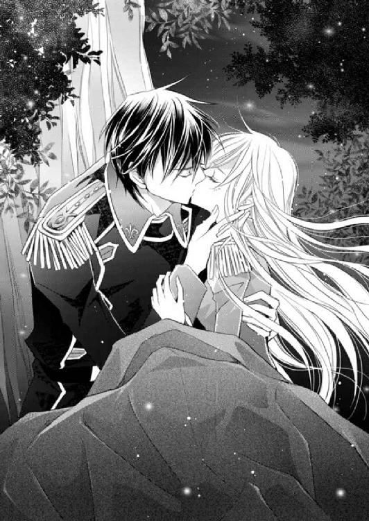
――あ。
触れた。
このうえなくラウラとヒューバートの近くに、キルラがいるのに。
いつもだったら勢いよく飛んできて、ふたりの間に挟まるキルラの無意識妨害がない。
眠っているから？ ......いや、最初に挟まる現象が起きた時にも、キルラは眠っていた。
だからキルラの意識は関知しないはずなのだ。
同調しているから？
――そう、なのだろうか？
いや、でもそれはちょっといただけないではないか。
いくらなんでも、キルラが身の内にいるというのに、構わず親密な時間を過ごせるほど、ラウラは恋愛事のエキスパートではない。
できたら誰の目もないところで、ふたりだけの秘め事として触れ合いたい。
「触れられたな」
悪戯めかした調子でそう言うから、ラウラは頰に手を当てながら、ヒューバートを睨みつけた。
「将軍、い、いくらキルラが眠っているからといって......！」
キルラや周りで休む動物たちの眠りを妨げないよう、小声で抗議する。
その小さく尖らせた唇に、再びすかさず触れられたものだから、目元が発火しそうなほどに熱くなる。
「おまえに触れられる好機は逃したくない」
「も、もう将軍......！」
「だがおまえを怒らせたくないから、やめておく」
ラウラは一度、二度と瞬きを繰り返した。
こうも呆気なく退かれると、逆に拍子抜けしてしまう。
そうですよ、とうなずきつつも、やっぱり、なんだか、もうちょっとだけ、触れていたい気持ちが、ラウラの胸の内に芽生える。
普段のラウラだったなら、それを口にすることはなかっただろう。
けれどここはいつもとは違う場所......ヴァハラ獣界だ。
満天の星空の下、ガラス細工のような葉や花の淡い光が、ヒューバートが今浮かべている表情を、ラウラに教える。ヒューバートの瞳は、ラウラだけを映していた。
普段と異なる環境と、ヒューバートの熱っぽい眼差しが、ラウラをいつも以上に素直にさせた。
「こういうことは、ちゃんと然るべき場所ですべきですが......。あの、でも別にわたし怒っていませんし、......あと一回くらいなら、全然、怒りませんけど......」
ヒューバートが動きの一切を止めた。
そして長い息をつくものだから、ラウラは戸惑って、小さく首を傾げた。
と、同時に額同士が触れ合う。
「そんな可愛いことを言われて、一度で終わらせる自信がない」
「え」
ヒューバートの言葉の意味を咀嚼する前に、再び唇を塞がれた。
一度どころか何度もキスをされて、くらくらと眩暈を覚える。
――息、止まりそう......。
絶え間なく寄せる波のように、口づけを繰り返し与えられたラウラは、最後にはぐったりとヒューバートの胸に凭れかかってしまったのだった。「ううう、怖いよう、さびしいよう。ジェイラスー、クロエちゃーん、英雄将軍ー、赤毛の子ー、ラウラちゃーん、キルラー。......こ、この際ユリシーズくんでも......あ、でもやっぱり怖いからやめとこ。ユリシーズくん以外の誰かぁ......」
ゼノはすんすん鼻をすすって、勝手に出てくる涙をこらえようとする。
だが垂れ目の黒い瞳からは、もう何粒目かわからない涙が、ぽろりと落ち、赤みを帯びた土を濡らした。
「久しぶりに来たから、ヴァハラ獣界のこと忘れちゃったよお。ここどこー？」
恐る恐る周囲を見回すゼノだが、さっぱり覚えがない。
何しろジェイラスと誓約して以来、里帰りをしたのは三度しかない。それも、人界でいえば五十ツ年ほど前と、二十八ツ年前、そして十九ツ年前だ。もうずいぶん昔のことになる。
「はぁぁ、なんでアイネイアスくんは、ボクをヴァハラ獣界に蹴り落としたんだろう。ボク、アイネイアスくんに嫌われているのかな。あ、もしかして、ユリシーズくんのことを怖い怖いって言ってばかりだから、アイネイアスくん、怒ってたのかも......」
ヴァハラ獣界に落ちて、かれこれ二ツ刻は経つが、しょんぼり俯いたゼノは、人界へと続く通路のそばから、一歩も動けずにいた。
アイネイアスがどういう意図を持ってゼノをヴァハラ獣界に落としたのか、その理由がさっぱりわからなかったから、人界に戻るのもちょっと怖い。
戻ったら何を言われるかわからないし、また落とされるかもしれないと思うと、ゼノは勇気が出ないのだ。
基本的に弱虫で意気地なしのゼノは、その場にうじうじと留まることしかできずにいた。
風の音がゼノの耳にひゅうと入り込む。
遠くで獣の咆哮が聞こえた。
背筋が強張る。
このままここにいるわけにはいかないのだが、どうしたらいいのかわからない。
「お、おうちに寄ってみようかな......。パパはまだあそこに住んでいるかしら」
ゼノは首を傾げつつ、ゆっくりと立ち上がった。おずおずと一歩進んだが、すぐに大きく首を振った。
「ダ、ダメだ、ダメだ。ここからおうちがどっちにあるかわからないいい！」
すっかり獣としての野性を失いかけているゼノは、我ながら自分が情けなくて、ぐったりと俯いた。
「うう......ボク、どうしたらいいんだろう。ジェイラス、クロエちゃん......。クロエ、ちゃん」
ふっとゼノは顔を上げた。
ヴァハラ獣界に落とされる直前に起こった事件を思い出す。
「そうだ、クロエちゃんがヴァハラ獣界にいるんだ！」
ゼノは、もの覚えは悪いが、一度咀嚼し、自身の内にのみ込み得たものを忘れることは、絶対ないとは言わないが、あまりない。
クロエが『何か』と誓約をしたこと、その『何か』とヴァハラ獣界に向かったことを思い出す。
「クロエちゃん、誰と誓約したんだろう......」
そのことを考えると、ゼノの胸の内に重いものが落ちてくるが、すぐにキッと前を向いた。
「わかんないことは、クロエちゃんに会って直接聞くべきだよね。こ、こうしちゃいられない、クロエちゃんを見つけなきゃ。あ、もしかしてアイネイアスくんは、ボクにクロエちゃんを捜すようにって言いたかったのかも。うわ、アイネイアスくんってば、いいヴァハラだあ！」
ユリシーズくんのヴァハラなのにと、かの美貌の教主に聞かれたら、一生チクチク嫌味を言われそうなことを、ゼノは嬉しそうに呟く。
「そうだ、ボクはクロエちゃんの誓約のヴァハラじゃないけど、クロエちゃんを助けなきゃ。クロエちゃんは女神様だもの！ 待ってて、クロエちゃー、うわあ、シ、シシハヤァ！」
ゼノの叫び声が、辺り一帯に響き渡る。
空魚シシハヤの群れが、『あんたうるさいんだよ』とばかりに、ゼノに向かってきた。
「う、わ、わわぁっ、待って、ボクなんにもしないよお――！」
全速力でその場から走りだす。
人界にやってきたシシハヤの動きは、青白い姿も相まって、優雅で実に美しかったが、ヴァハラ獣界のそれは、動きが速く、少々凶暴だ。
散々追い回され、逃げて、逃げて、シシハヤが住む界隈からほうほうの体でなんとか逃げ切ったゼノは、くたくたになってその場にどっと倒れ伏した。
「ううー、や、やっと逃げられた......」
安堵の息をついたゼノだったが、間髪容れずに、にゃん、と声が聞こえた。
「にゃん。ね、猫さん、じゃないよね、ここヴァハラ獣界だもんね......」
ゼノは恐る恐る、声のした後方を振り返った。
兎のような可愛らしい姿、だがその実態は凶暴な獣というヤトが、両前肢を揃えて、ゼノを凝視していた。
「いやぁぁ！ ヤト―――！」
ゼノは力を振り絞って飛び上がった。
一気に地面から五十ガランも飛んだゼノは、そのまま懸命に空を駆ける。
気がついた時には、ヤトの姿はなく、ゼノを追いかけてくる気配もなかった。
「よかったよう。......でも怖いよう。クロエちゃーん！」
どこにいるのお！
ゼノは泣きながら、力の限りクロエを呼んだ。
だが当然のことながら、返事はない。
「ああ、どうしよう。日が暮れてきちゃったよ」
ぐったりしながら、下方を見回した。
目に入ったのは、赤い葉が生い茂る一帯だ。
この植物は、沼や川辺といったぬかるみによく生える。
赤い葉はシュッとして硬く、また鋭く尖っている。好んで食べる草食動物や昆虫はほとんどいないため、それらを食料とする大きな肉食獣も、この辺りでは見かけない。
ゼノは誘われるように、その赤い葉が茂る場所へと降り立った。
「うっ、あ、足がっ」
ぬかるんだ泥に、足先が沈む。
慌てて少し浮いて、ゼノは赤い葉の中を進んだ。
「お腹空いたなあ。あれ、なんかすっごくいい匂い......。クロエちゃん!?」
辺りを漂う香りが、慕わしいクロエの纏うものによく似ていると気づいたゼノは、首を巡らせる。
と、腹の鳴る音に紛れそうなほどの微音が聞こえた。
「な、なんだろう......。クロエちゃん、いないの？」
赤い葉の間を風が吹くと、物悲しい音を立てる。
その音だろうかと、ゼノは耳を澄ませた。
ううう、と。
聞こえた。
身体が大きく震える。
――クロエちゃんじゃない、何かが、いる......！
ぞっとした。
ゼノは目を皿のようにして、ぎこちなく辺りを見回す。
だが何も見えない。見えないと、ますます恐怖が増してくる。
毛が逆立ち、ドクドクと鼓動が速まる。
ううう。
風の音ではない、唸り声にしか聞こえない。
もうすぐ日が暮れる。暗いさなかに、こんな唸り声をあげる獣と同じ場所になどいられない。
ゼノはこの場から逃げようと決意する。
だがどういうわけか、後退するどころか、身体が前進する。
ゼノの意思を無視して、ふらふらと前に進んでいくのだ。
――ど、どーいうこと......!?
どうして身体が勝手に動くのか、わけがわからない。
「うっ、うわぁぁぁぁ！」
恐慌に陥ったゼノは、力の限り叫んだ。
「誰か、......いるのか」
言葉が――ひとの言葉が、聞こえた。
だがパニックに陥るゼノは、そのことに気づけず、叫び続ける。
「おい、落ち着けよ。何、叫んでんだ」
「怖いぃぃっ」
「怖い？ 何が怖いんだ？」
「だって何かいるよ！」
「いるさ。......つか、会話してんだろ」
「そっ、そうだ、ね。え、なんで会話できるの？」
「そりゃおまえがヴァハラで、オレもヴァハラだからだろ......」
はあ、と苦しそうにつく息が聞こえた。
オレもヴァハラ、というフレーズが、ゼノの頭の中をぐるぐると回る。
「ヴァハラ......」
「そう、だよ。なあ、......こっち、来てくれ」
「え、な、なんで？」
「手伝ってほしい、んだよ」
切れ切れに聞こえる声が、とても辛そうだった。
ゼノは声の方へと目を凝らす。
赤い葉が生い茂る根元に、泥に汚れてまだらになった白いモノが見えた。
「え、......キミ、ヴァハ、ラ？」
「だから、そう、言ってン、だろうが。クソ、動けねえ。おまえ、誰だ、よ？」
「ボクはゼノ」
「ゼノ？ じじいの息子で、教尊の誓約の、ヴァハラのゼノ、かよ」
「えっ、ボクのこと知ってるの？ ていうか、じじいってパパのこと？」
「パパってガラかよあのじじいが。つか、知ってるも何も、昔何度か顔を合わせたことがある、だろうがよ」
顔を合わせた......、とゼノは小さく呟く。
「え、でもボク、透けた身体を持つ白いヴァハラのお知り合いっていないんだけど」
「オレの身体、透けて、ンのかよ。くそ、あのチビめ......！ キルキルに似た姿をしていながら、なんて、性悪、だ」
悪態をつく、その声を聞くうちに、ゼノは、あっと叫んだ。
「も、もしかして、サクリクス王!?」
「そーだ、よ。やっと思い出したか」
「思い出したかって、えっ、ええっ!? どうして透けているの？ どうしてこんなところで泥に埋まってんの？ キミ王様なのに！」
ゼノは言いながら、泥に半ば埋まるヴァハラ――ヴァハラ獣界の王、サクリクスへと近づいた。だが進むにつれ、強烈な匂いに、身体が竦んで動けなくなる。
先刻と逆だ。つい先ほどは、進むつもりがなくても勝手に身体が動いたのに、今は、行こうとしても動かない。
「な、なんでだろう。サクリクス王、ボク、どうしてかわかんないけど、身体が動かないよ」
「そうか、よ......。やっぱこの匂いのせいか」
「ちょっと離れると、すごくすっごくいい匂いなのに、これ以上行こうと思うと、身体が竦むんだ。......なんなの、この匂い？」
「これは、あのクソチビがオレにぶちまけたヤツ、だ」
「クソチビガオレニブチマケタ......？ 何をぶちまけられた、の？」
「知らねえ。青い瓶の中に入っていた、液体だ。前に逆同調できるっつう、ヤバイ薬を嗅いだことがあるが、あれより、強烈だぜ。目まで見えなくなるとは、よお......」
サクリクスは、苦しそうに息をついた。
「サ、サクリクス王、だ、大丈夫なの？」
おろおろとゼノはその場を回るが、どうしてもこれ以上進むことができない。よくよく見れば、泥まみれのサクリクスは、徐々にぬかるみに沈んでいっているではないか。
「サクリクス王、なんか沈んでいってるよ!?」
「そりゃここが、底なしの泥沼だからだろ」
「底なしの沼！ えええっ、待って、待って、どうしたらいいの......！」
焦るあまり、ゼノは半泣き状態だ。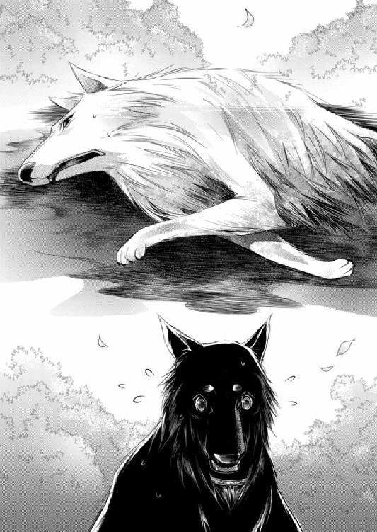
「そうだ、息止めていればいいんだ！ 待っててサクリクス王！」
せーの、と息を止めて、ゼノは一気にサクリクスへと近づいた。
「やった！ ......ぅぇ、息吸っちゃっ......」
強烈な香りが鼻孔を通して体内に入るや否や、ゼノはその場に腰砕けになった。
「おい、しっかりしてくれ」
「ううう、ちょ、っと、ま、待ってて」
ずるずると背後に移動し、今一度息を整える。そして硬く赤い葉に目をやり、嚙み千切った。それを苦労して鼻の穴に詰め込むと、再び匍匐前進をするように、空中を泳いでサクリクスへと向かった。
「ふえ、く、くしゃみが出そう......」
「どーでもいいから、とにかく頼、む」
「う、うん、がんばるよ」
ゼノは時間をかけて、サクリクスのそばまでやってくる。
「首のところ、嚙んでも大丈夫かな。サクリクス王、我慢してね」
そう言い置いて、ゼノはサクリクスの首筋を嚙んで泥沼から引き出した。
「うっ、ううう......うーッ！」
息ができない苦しさに加え、自身より大きなサクリクスを泥の沼の中から引き出すのは容易ではなかった。
少しずつ、少しずつ、気が遠くなるほどの時間をかけ、ゼノはようやくサクリクスを、乾いた地面まで引き摺っていく。
「ありがとう、助かったよ、ゼノ」
「ぶはっ、く、苦しい......ぅぁ......、力抜けるぅ」
勢いよく息を吸うと同時に、またしても強烈な香りをも吸い込んだゼノは、くたくたと地面にくずおれた。
「ホント、なんなの、この香り......。クロエちゃんの香りに似てるって思ったけど、やっぱり全然違うよ」
「クロエちゃんて。ゼノ、なんでラウラちゃんの姉ちゃんの名前を知って、んだ？」
「えっとね、話せば長くなるんだけどね。それよりどうして、サクリクス王が、こんな泥の沼で、動けなくなっちゃってるの？ あの黒いの、『妾はヴァハラ獣界の女王じゃ』って言ってたけど、本当にサクリクス王、王様じゃなくなっちゃったの？」
「ああ!? なんだそりゃあ！」
これまでぐったりしていたサクリクスが、いきなり吠えた。ゼノは怯えて首を竦ませると、怒らないでよ、と小さくぼやく。
「ああ......悪かったよ。ゼノ、まずはオレを水辺まで連れて行ってくれないか？」
「水辺？」
「この香りを流さんことには、動くに、動けねえし。頼む」
「う、うん。水辺って、どこにあるかなあ......？」
「この赤葉の群生の逆側に、黒沼がある。そこまで引き摺っていってくれ」
わかった、とゼノはうなずいて、再びサクリクスの首を嚙んで引き摺ろうとしたが、濃厚な香りに邪魔されて、四肢に力が入らない。
「ま、待っててね、サクリクス王。ちょっと息整えて、そのあとで息止めて、ちょっとずつでも進もうね」
「迷惑をかけるな、ゼノ」
「ううん。ボクね、サクリクス王に謝らないといけないことがいっぱいあるんだ。でもそれはまたあとで話して謝るね」
「謝らないと、いけないこと？」
「うん。サクリクス王の誓約者の英雄将軍の腕を嚙んじゃったこととか、サクリクス王の養い子のキルラに嫌なことを言っちゃったとか」
「......なんだと？」
にわかに半眼となったサクリクスへ、ゼノはおたおたと首を振る。
「あっ、でもね、ふたりには謝って許してもらったの。キルラとはもうお友達だよ」
「......」
「え、英雄将軍にも、嚙んじゃったからボクの肢を嚙んでって言ったら『謝罪は受け入れた』って言ってもらえたの！」
「ぶっ」
ゼノがヒューバートの声真似をしたからか、サクリクスは思わずといったように噴き出した。
「まあ、あいつらが許したってんなら、オレがなんか言う筋合いはないな」
「さすがサクリクス王！ ......で、なんで王がこんな目に？」
ゼノの問いに、サクリクスの口元は、苦々しく歪む。
「青い瓶を盗んだ、姿の見えない賊を追いかけて、ヴァハラ獣界までやってきた時のことだ。突然目の前に、キルキルに似た黒いのが出現したんだよ。それが青い瓶を盗んだ賊だったんだが、驚いていたところに青い瓶を投げつけられ、中身を全部被っちまった」
サクリクスはそう言うと、深く息をついた。
泥沼からは出られたが、まだ苦しそうだ。
纏わりつくこの香りが、サクリクスの力を根こそぎ奪っているように、ゼノには感じられた。
禍々しいほど甘ったるい香りを長く嗅いでいると、頭の芯がぼんやりとしてくる。
ゼノは大きく頭を振った。そして、よし、とひとつうなずくと、大きく息を吸い、サクリクスを水辺へと引き摺っていく。
「アレと戦って負けたわけじゃねえぞ。王を辞めていないからな。くそ......」
「うん、ううっうううう？」
うん、わかっているよ？ と言ったつもりのゼノの気持ちは通じたようだ。
「人界にやってきたシシハヤが透けていたのは、この香りを被ったからかも、な」
シシハヤだけでなく、人界に来たヴァハラ獣界の獣たちは、すべて透けていた。
サクリクスの想像が真実ならば、ヴァハラ獣界中に、『青い瓶』に入った液体をばら撒いたのかもしれない。
「はふはふ、ちょっと待ってね、息継ぎ。......その青い瓶の中身って、なんなのかな？」
「わからんが、ひとの手によってつくられたモンだ」
「それをつくったひとは、何がしたいんだろう」
「それも、わからん。......以前似たような薬をつくった男は、ヴァハラを屈服させ、逆同調をするという、目的があったが」
ゼノは首を傾げた。
「屈服させて、逆同調......。なんでそんなことを？」
「ヴァハラの儀に失敗して、自分だけのヴァハラを得ることができなかった。欲しくて、欲しくて、だがどうしても手に入れることができず、次第にヴァハラを憎む気持ちが大きくなっていった、ってことらしい」
ゼノはふと押し黙る。
「そういう心持ちの人間のところには、どんなに望んでも、ヴァハラは来ないよ。ヴァハラの神様はちゃんと見ているんだから」
「おいゼノ、ヴァハラの神のことは、誰の前であろうと口にするな」
厳しいサクリクスの声音に、ゼノははっと我に返り、即座にうなずいた。
「そうだったね！ じゃ、運ぶから、サクリクス王、この香りが消えたら、今度はボクに付き合ってほしいんだ。クロエちゃんがヴァハラ獣界に来てるの」
サクリクスはぽかんと口を開けた。
「はあッ!? なんでクロエちゃんが？」
「それがよくわからないんだ。王がいない間のことを、知っている限りあとで話すからね」
「おいおい待てよ、てことは、ラウラちゃんもヴァハラ獣界に来てんじゃねえのか？ ラウラちゃんが来てたら、ヒューもキルキルも絶対来てるだろ......！」
「ラウラちゃんも？ なんで？」
「ラウラちゃんはなあ、すっげ姉ちゃん想いの、すっげいい子なんだよ！」
「うん、それに可愛いよね。優しいし」
「だろ？ で、ヒューはな、そういうラウラちゃんにべた惚れで、キルキルはラウラちゃんとは絶対に離れないだろうからな！ おいゼノ、早く運べよ、こうしちゃいられねえぞ！」
「もっ、もがかないでよ、サクリクス王ってば！ 運べないよお！」
俄然元気になったと思しきサクリクスだが、やはり身体は思うように動かないようだった。
それでも、気が急いて緩慢に肢を動かすサクリクスを、ゼノは苦労して水辺まで運んだのだった。
◆◆◆
仲間は今、森を離れて、赤青黄色の水を下って、赤青黄色緑紫オレンジピンクの水に向かっているべさ。
翌朝起床したネムリンは、たくさん眠って元気いっぱいなのか、普段より長く、仲間と念を送り合っていた。
「赤青黄色緑紫オレンジピンクの水って、通路の中で見た、極彩色の海のことかしら」
「そうじゃの。ところでラウラ、その前に我はそなたに申したきことがある」
「ん、何？」
「なにゆえふわふわひらひらのオフライトの服を、軍服に着替えてしもたのじゃ!? 我はそれが悲しいのじゃ」
ラウラは、本気でしょんぼりするキルラに、苦笑を零した。
「や、あのね、確かにオフライトからお借りした服は素敵だったけど、昨日汚れちゃったでしょ？」
「それはそうじゃが......」
「それに、やっぱり軍服は丈夫だよ。転んでも穴が開いたり裂けたりしないし、ね」
「確かにそうじゃが......」
軍服のよいところを挙げてみるが、キルラのテンションは下がりっ放しだ。
ラウラだって、こんな非常時でなければ、自ら進んで軍服を身につけたくはない。似合う、似合わないは別にして、ふわふわひらひらの方がいいに決まっている。
仕方ないなあ、とラウラは肩を竦めて笑った。
「昨夜洗濯したし、夜休む時に着るから。それで我慢して、キルラ」
また着用すると聞いて、にわかにキルラの機嫌は上昇した。パッと顔をほころばせて、約束じゃぞ、と喜んでいる。
「ではゆくぞ、目指すは『果てなしの海』じゃ！」
はりきって歩きだすラウラより前で、ネムリンが、すい、と泳ぐ。
ネムリンの尾びれには、赤いレース糸でつくった極細のリボンが結ばれていた。
ネムリン本魚からのリクエストだった。
ラウラの親指くらいの大きさしかないシシハヤだが、思考能力や好悪の感情があることが楽しい。
レース糸だって、何色がいいか聞いてみたら、迷わず赤と言ったのだ。
リボンつきの尾びれをふりふり、嬉しそうに泳ぐネムリンが可愛い。
『祝い森』には、果実や木の実が豊富に生っていた。さまざまな種類があったため、ラウラの朝食はこれだけでお腹が膨れた。
森を出る前に、日持ちがしそうな実を収穫し、またヒューバートの荷物に入っていた水筒いっぱいに、澄んだ泉の水を入れた。
「いい森でしたね」
横を歩くヒューバートを見上げると、ごく軽くうなずく。
しばらく歩くと、森の終わりが見えた。
ラウラは荷を背負い直すと、ネムリンに続いて森を出た。
刹那、ヒューバートに強く腕を引かれた。
戸惑うラウラを、ヒューバートは再び森の中へと、トン、と押した。
「し、将軍......!?」
森を出たところにいたのは、教堂の舞台で、トラヴィス・クーガン警護隊長がてこずったという、土偶のような生き物だった。
「目がおっきい......！」
顔には目しかないのではと思うくらい、大きな瞳だ。
「おお、キフサーではないか！ こんなところにおるとはなんと珍しい」
「め、珍しいんだ？」
「普段は雨の降らない砂漠のような場所におるぞ。この辺りに砂漠はないから、ずいぶん長く歩いてきたのじゃろうな」
「そうなんだ」
ヒューバートは剣の柄に手を添えた。
「ヒューバート、大丈夫じゃぞ。キフサーは普段はとってもおとなしい生き物なのじゃ。そーっと横切れば、何もせ......うおっ！」
キルラが言い終える前に、突然キフサーが長い腕を振り回し、ヒューバートに襲いかかってきたのだ。
ヒューバートは鞘でキフサーの腕を受け止める。
そしてその腕を下方へ流すように、鞘を足元へと下ろす。キフサーが前のめりになったところを見逃さず、ヒューバートは即座に鞘から剣を抜きかけ......だがキルラがそれを止めた。
「ダメじゃ、ヒューバート、そやつの身体はとても硬いのじゃ。剣が折れてしまうぞ！」
「将軍......！」
鞘と柄を飾る黒い石――黒透石は、王家の者と王に認められた者しかつけることを許されていない、特別な石だ。
キルラの声を受けて、ヒューバートは剣を抜かないまま、ふわりと飛び退った。
キフサーは、ラウラたちには目もくれず、長い脚を勢いよく振り上げ、ヒューバートの脇腹へと強烈な蹴りを繰り出す。その攻撃をも、ヒューバートは造作なく避ける。
間合いを十分に取り、互いに見合う。
緊迫する一瞬の空気を経て、ヒューバートが高い位置にあるキフサーの頭上目掛け、鞘を無造作に振った。
ガッ、と鈍い音がした。だがキフサーは微動だにしない。
キルラが言うように、キフサーの身体はとてつもなく硬いようだ。
「ラ、ラウラ、ラウラ！ 水じゃ。水をかければ、キフサーは頭に花を咲かせて止まるのじゃ」
「ええっ、なんてファンシーな生き物なの......！」
水、水、と周囲を見回すも、近くに川は見当たらない。
五十ガランほど森の中に戻れば、確か小川があったはずだ。
ヒューバートの荷の中に水筒が入っているが、戦いの真っ最中に背負った荷を開けることなど不可能だ。
「将軍、待っててください、水を持ってきます！」
ヒューバートの返事も聞かず、ラウラは踵を返した。中のキルラも焦っているのか、ラウラの身体が宙に浮く。木の枝を避けながら、ラウラは全力で飛んだ。
「あった！」
小川はすぐに見つかった。目測を誤って浅い川底に着地するが、一切構わずぐるりと周囲を見回す。
「なんか、器、器――！」
「落ち着くのじゃラウラ。布か何かに水を含ませるのじゃ！」
「そ、そうだね」
ラウラは急いで背負ったバッグに手を突っ込んで、探り当てた布を一気に引き出す。それを勢いよく小川に浸すと、絞ることなく引き上げた。
「戻ろう！」
立ち上がったラウラの視界の隅に、この森では目にしたことのない、黒みを帯びた何かが一瞬映る。
ラウラは無意識のうちに、その何かに視線を向けていた。
「あ......」
二十ガランほど上流に、ヴァハラがいた。
毛色は黒い。だが見事な漆黒の被毛を持つゼノより、幾分褪せたような印象を受ける。体格もゼノより小さく、イムやアイネイアスくらいだろうか。
額にかかる毛がくるんとしていて、それが特徴的だ。
凪いだ水面のように青い瞳のヴァハラは、じっとラウラを見つめた。
「――」
ヴァハラが何か呟いた。
だが遠くて聞こえない。
首を傾げたラウラだったが、すぐに、今は見知らぬヴァハラに関わっている余裕はないと、再び飛んでヒューバートのもとへと走った。
「将軍！ と、うわ......！」
ヒューバートは真っ直ぐに立ち、ラウラへと穏やかな眼差しを向けてきた。
キフサーは上半身が『祝い森』に入った状態で、地面に倒れ伏していた。
そのままの状態でもがいているが、次第に手足の動きは緩慢になっていく。
「ど、どうしたんですか」
「『祝い森』に入れば、闘争心が消失するのではないかと思ったから、背を押してみた」
確かに、『祝い森』での殺生は厳禁だといくら言っても、言葉も通じない、種も違う動物たちが、揃ってそれに従うのは不思議としか言いようがない。
ヒューバートの言うとおり、争う気持ちが失われる、という方がなんとなく理屈として合っているような気がする。
「えっと、じゃあ」
ラウラはキフサーの手を握ると、えい、と森の中へさらに引っ張った。
すぐにヒューバートも、もう片方の手を摑んだ。
キフサーの長い身体が、完全に森の中に入る。
すると、自らゆっくり起き上がる。顔いっぱいの目が、ラウラとヒューバートを見たかと思うと、すぐに逸らされ、そして森の奥へと向かっていった。
「もしかしたら、キフサーは仔を産むために、この森へやってきたのかもしれんの。気が立っておったのかもしれん」
「はー......、そ、そうなのかな。あんなに暴れても大丈夫なの？」
「普通に歩いておるし、キフサーは身体が頑丈じゃから大丈夫であろう」
「そっか。斬ったり怪我をさせたりしなくてよかったですね」
ラウラはにこりと笑って、ヒューバートへ駆け寄った。
「びしょ濡れだな」
「あっ、オフライトの服が......」
せっかく夜のうちに干して乾かしたのに、ラウラが水に浸したのは、オフライトの長衣だった。
「うう......また濡れてしもた」
ンーピチュ。
すぐに乾くべさ。
戦っている間はこっそりどこかに隠れていたのか、ネムリンが飛んできて、そう言った。
「ん、ネムリンの言うとおりだよ、キルラ。長衣は薄いし、ほら、持って歩けば、風で乾くから。暑くなったら日よけにして頭から被ればいいしね」
びしょ濡れの服を絞って、しわを伸ばすように大きく振り上げる。
「そうじゃの......」
ンーピチュ。ピチュ、ンピチュ。
仲間が海についたそうだべさ。今はそこで休んでいて、今日はそのまま留まるそうだべさ。
移動しないというのであれば、追いつくチャンスだ。
ネムリンの言葉をヒューバートに伝えると、そう返ってくる。
ラウラとヒューバートは顔を見合わせ、うなずき合った。
「では、『果てなしの海』に行きましょう」
昨夜ヒューバートとキルラが協力して描いた地図では、『祝い森』と『果てなしの海』は隣接していた。
スムーズに行くことができれば、二ツ刻ほどで到着できる距離だろうと、キルラは言う。
だがやはりここはヴァハラ獣界。
人間が珍しいのだろうか、それとも何か別の理由でもあるのか、次から次へと獣たちがやってくる。
襲ってくる獣ばかりではないし、たまに友好的な動物もいるのだが、大概は警戒心も露わに、飛びかかってくる。
どうも、自分の縄張りを奪われると思っているようだ。
たまにそんなふうに叫びながら襲ってくる獣がいた。
二ツ刻が過ぎても、『果てなしの海』は見えてこない。
そのうえ、ヴァハラ獣界の朝は日差しが強く、じりじりと頭に照りつけてくる。
日陰になるような木々も少なく、長衣を被きながらも、これは絶対日焼けするぞー、と内心ちょっとだけため息をついたラウラに、ヒューバートの腕が、庇うように回されてきた。
「将軍？」
「......」
紺碧色の瞳が、微かに眇められる。
「どうしたのじゃ、ヒューバート」
「いや、――ついてきている」
ヒューバートは最初、ラウラに言うつもりはなかったようだが、考え直したように答えてくれた。
「ついてきているって......」
ラウラがそろりと周囲を見回した時、『それ』を見つけた。
「祝い森にいたヴァハラ？」
「気がついていたのか」
「え、将軍こそ、森にヴァハラがいたことに気づいていらっしゃったんですか？」
無造作にうなずかれて、ラウラは、自分は全然気がつかなかったのに、と目を丸くした。
「決して近づいてこないし、襲ってくる気配もなかったから放っておいた」
「でも、ついてくるってことは、何か用事でもあるんでしょうか？」
「人間に興味があるのかもしれんぞ」
「ヴァハラって、ひとに興味があるもの？」
キルラに問うと、無論じゃ、とうなずく。
「とはいえ、人間に興味があるのは、大概オスじゃがの」
「えーと、性別によって興味のあるなしがあるんだ」
「メスは、仔を産んで育てるという大事な役目があるからの。仔を持つメスは集団をつくり、十頭前後で暮らしているのじゃ。だいたい二ツ年に一度仔を産むから、人界や人間に興味を抱くメスは稀じゃ。......と、じじに聞いたことがある」
なるほどー、とラウラはうなずいた。
「そういえば人界で会ったヴァハラは、みんなオスだものね」
「クインは乙女ヴァハラじゃがの」
「ふふ、そうだった」
首を竦めて笑った時、ふと、リムル－リシル－リスレが脳裏に浮かんだ。
――あの仔は女の子だよね。『女王』って言っていたし。
けれど誓約者を欲する気持ちが、とても強いように感じた。
ジェイラス教尊への激しい反応は、それだけ誓約者を得たいという、強い願望があったのではないだろうか。
もし、クロエとあの仔が本当に誓約を交わしたのだとしたら、そこにどんな理由があるのだろう。
――教えて、姉さん。
どうか『果てなしの海』で待っていて。
ラウラは、いまだ見えてこない海のある方角へと目を向けた。
にゃあ。
猫の鳴き声が聞こえた。
「......え？」
ざわ、と背筋が震える。
猫の声に聞こえた。だがここはヴァハラ獣界で、人界ではない。猫はいない。
――とすれば。
「キルラ－キルレ－キロル、飛べ」
「ヒ、ヒューバート？」
「飛べ！」
ヒューバートの鋭い声に急かされ、ラウラの中のキルラは、勢いよく上昇した。
「将軍！」
飛んだことで、ヒューバートがそう言った意味がわかった。
兎そっくりの、ピンク色の被毛を持つ、兎より大きな獣――見紛うはずもない、というか、二度と見たくなかった獣......ヤトが、接近してきていたのだ。
キフサーと対峙した時は決して抜かなかった剣を、ヒューバートは即座に抜いた。
「し、将軍......！」
ヤトは立派な体格をしていた。
毛艶もよく、双眸は血気盛んに鋭く光っている。眼下の獣がまだ若く、寒気を覚えるほど獰猛であることが、強く伝わってくる。
「まだ家族を持たない若いオスじゃ」
キルラもまた、不安そうに呟く。
「ゾーンは発動されておらん。つまりゾーンをつくらずとも相手を仕留められるという自信があるのじゃろう」
ゾーンとは、ヤトのつくりだす、『見えない檻』のようなものだという。そのゾーンの中に入ったら、ヤトを倒さない限り、外に出られなくなる。
ヤトにとっては、ゾーンをつくったほうが相手を追い詰めやすいのに、そうしないということは、キルラの言うとおり、相当自信があるのだ。
でも。
――将軍なら、大丈夫......！
ゾーンが発動された光鈴堂の中で、ラウラがいて、なおかつ姿を隠したリムルからの攻撃を受けながらも、ヤトに勝利したのだ。
あのヤトも、自身を信じているだろうが、ヒューバートは絶対に負けないと、ラウラもまた強く信じていた。
それでも、信じていても、不安がすべて消えるはずもない。
ラウラは速度を増す鼓動を落ち着かせようと、きつく拳を握って胸に押し当てた。
「ラウラ、ヒューバートの邪魔にならぬという時には、我も攻撃をするぞ」
キルラの、ヴァハラとしての力を使うのだろう。
ラウラはうなずいた。
ヤトから間合いを取り、ヒューバートは剣を構えた。
陽光を受けて眩く輝く剣を前にしても、ヤトは少しも怯まない。
一瞬の間をおいて、凄まじい跳躍をすると、真上からヒューバートに襲いかかった。
剣にも匹敵するであろう、鋭い爪が振り下ろされる。ヒューバートはそれを剣で受け止め、力強く押し返した。
ドウ、と砂埃をあげて、ヤトが倒れる。だが即座に体勢を立て直すと、逆の方の手を薙ぐように真横に振り回した。
「将軍......！」
ヒューバートはそれを飛んで避ける。さらに避けるのと同時に剣を振った。
ヤトの毛が風に舞い上がる。
――次にヒューバートから離れた時に、ヤトに光を放つ。ラウラ、心積もりをしておいてほしいのじゃ。
内でキルラがそう言う。ラウラは、うん、とうなずく。
だがヤトの攻撃はやまない。
闘争心も露わに、避けてもかわしても攻撃しても、すぐにヒューバートに向かっていくのだ。
「ヤトめ、あやつまだ本当に若いぞ。あんなに攻撃的なヤトなぞ見たことがない」
若いから攻撃もがむしゃらなのか、目にも留まらぬほどの速さで両前肢を振り回す。
少しでも当たればダメージを受けるだろう。爪が引っ掛かったら、大変な怪我を負ってしまう。
――何か、何かできないの!?
ヤトは咆哮をあげながら、鋭い牙を剝き出しにしてヒューバートに飛びかかっていく。
これまで一度も攻撃を受けずにいたヒューバートが、片膝をついた。間髪を容れず力任せに押されて、背中から地面に倒れ込んでしまう。
「将軍――！」
血の気が引く。
ラウラは無我夢中でヤトの背中に接近した。
「ダ、ダメじゃ、ラウラ......！」
すんでのところで中のキルラがストップをかけ、今まで以上に上昇した。
「キルラ、でも将軍が......！」
ヒューバートは圧し掛かる巨大なヤトの腹へ、強烈な蹴りを入れた。
もんどり打つ間に、ヒューバートは立ち上がる。
だが一瞬だけ、ぐらりと上半身が揺れた。
「キルラ、キルラ、今！」
「おおっ」
額が熱い。焼けてしまいそうな熱を感じた瞬間、キルラの光が放出された。
だがそれはヤトには命中せず、地面を抉っただけだった。
「うう、外れてしもた！」
だが悔しがっている暇はなかった。
空からの攻撃に憤ったのか、ヤトがいきなり跳んだのだ。
凄まじい跳躍力だった。
丸太のような前肢が目前に迫り、ラウラを襲う。
「ああっ！」
ダメ、ぶつかる。
その場から動けない。
今にも鋭い爪で肩を抉られそうになった危機を救ってくれたのは、やはりヒューバートだった。ヤトの後ろ肢を力任せに引っ張り、地面に引き摺り下ろす。
「キルラ－キルレ－キロル、ラウラをもっと遠くへ」
ヒューバートの命令を、だがラウラは聞けなかった。
戦いの場から距離を取ろうとするキルラへ、ダメ、と強く言う。
「じゃが、ラウラが危険なのは、我も嫌じゃ！」
ラウラは言葉を詰まらせた。
自分がここにいてできることはない。戦うヒューバートの邪魔にしかならない。
それでも、自分だけが安全な場所にいて、ヒューバートだけを危険な目に遭わせたくない。
――どうしたら......、どうしたらいいの？
ラウラがその場から動かないことを気にしてか、ヒューバートが、一瞬だけ上空を仰いだ。
その隙を衝いて、ヤトが巨体を活かして倒れ掛かってくる。
避けることは叶わず、ヒューバートは再び地面に膝をつく。
「ラウラ、ゆくぞ！」
その時、ラウラは閃いた。
「キルラ、わたしとの同調を解除して」
「......な、なんじゃと？」
「キルラの力も合わせたら、きっとヤトにも勝てる。だからキルラ、将軍と同調して！」
キルラからの返事は、なかった。
もどかしくラウラがもう一度同じことを言うと、今度は即座にダメじゃダメじゃ！ と猛烈に首を振られる。
「どうして!?」
「我との同調を解除したラウラはどうするのじゃ!? ここはヴァハラ獣界じゃぞ！ いつ何時、どんな獣が襲ってくるかわからんのじゃ！ ラウラをひとりになぞ、絶対にできん！」
キルラの、ラウラを心配してくれる気持ちが、ひしひしと伝わってくる。
ラウラはその温かな想いに、我に返った。
大事にしてもらえて嬉しい。
ヒューバートの、キルラの、気持ちが嬉しい。
けれど。
「......キルラ、聞いて」
「......」
「わたしね、将軍のことが大切なの」
「......知っておる」
「うん。将軍の命がね、自分の命と同じくらい、大事なの」
キルラはふつりと押し黙った。
「将軍が傷ついたら、わたしも同じくらい辛いと思う。でもわたしは何もできない。力で、将軍の助けにはなれない。だけど、――キルラがいてくれる」
「ラウラ」
ラウラは、強く唇を引き締めた。
「あの大きな木の、太い枝のところにわたしを下ろして。少なくとも地面にいるより、安全だと思うの。大きな鳥に狙われちゃったら危ないけども」
「む、巨鳥は、この辺りには住んでおらぬようじゃ」
キルラは小さく呟いた。
「キルラ、――わたしの願いを、叶えてほしい」
キルラはそれでも唸って、ためらっていた。
今もヤトとぎりぎりの戦いをしているヒューバートを見、迷って、悩んで、そしてキルラは決断してくれた。
――ラウラの願いを叶えようぞ。
我はラウラの誓約のヴァハラじゃからな。
キルラはそう言ってくれたのだ。
戦闘の続く場所から五十ガランほどの距離にある木の枝にやってくると、オフライトから借りている長衣を自らの腰に巻きつけ、太い枝に身体を固定する。
同調解除のショックで落ちないための準備をしっかり整えたあとで、キルラがラウラの内から、ふわりと出てくる。
突如として、ズン、と巨石が圧し掛かってくるような、強い圧迫感を覚えた。
ずっと同調をしていたから、なんだかキルラの姿を見るのが、久しぶりのような気がする。
キルラのふわふわの白い毛が、ラウラの頰にやわらかく押し当てられた。
「ラウラ、大丈夫か？」
「大丈夫。ちゃんと、喋れているでしょう？」
「うむ......」
「お願いキルラ、行ってガーディナー将軍を助けて」
瞼が重い。目を開けているのが辛い。けれどキルラに悟られないよう、ラウラは微笑んだ。
「すぐに戻ってくるからの！ ネムリン、ラウラのことを頼むぞ！」
「気をつけて......！」
キルラがヒューバートのもとへ飛んでいく後ろ姿を見届けたあとで、ラウラはぐったりと目を閉じた。
重い。
身体中、どこもかしこも重い。
口を開けるのもおっくうで、だがラウラは、下唇をきつく嚙みしめた。
――将軍、......将軍。どうして教えてくれなかったの？
これは同調解除直後の状態とはまるで違う。
ラウラは人界で、キルラと三度同調をしている。
同調解除直後の身体を襲うのは、凄まじい脱力感だった。身体のどこにも力が入らず、最初の時など、人形のようにただただその場に転がることしかできなかった。
同調を重ねるうちに、その症状は少しずつ軽くなっていったが、――これは明らかに違う。
同調による副作用的な状態ではなかった。
身体は動く。脱力感もない。ただ、空気がひたすらに重い。
吸い込む空気までも重く感じる。呼吸をするたびに、身体がずっしりと嵩を増すような気さえした。
恐らく――ラウラは想像する。
ヴァハラ獣界と人界とでは、空気の質が違うのだろう。
全身に、絶えず圧がかかる。
腕を上げるのも、目を開けていることすら辛い。多分歩くのだって、気力を振り絞りながらでなければ、難しいだろう。
まるで体重が、倍にも三倍にもなったような凄まじい重さを感じる。
ヒューバートはヴァハラ獣界に来て以来、ずっとこの圧に耐えていたのだ。
普段どおりに、ラウラに悟られることもなく。
ラウラは、圧に押されるように俯いた。
実際問題として、ヒューバートに聞かされても、ラウラには何もできない。
キルラがふたりと交互に同調したとしても、同調していない間のラウラは、役立たず以前の問題で、荷物にしかならない。
動くことさえ大変なのだから。
ンピチュ。
目の前に、ネムリンがふわふわと飛んでいる。
「......キルラがいないから、何を言っているかわからないよ、ネムリン」
ンピチュ、ピチュ。
「心配してくれているのかな。......ありがと」
――遠い、な......。
いまさら身体を鍛えようとか軍人のように訓練をしようとか、そんなことは思わない。
身体ではなく、心とか、精神とか、そういう内面を鍛え、磨きたいのに、それもなかなか難しい。
もっと自分を頼ってほしい、ひとりでなんでも抱え込まないでほしい、......なんて言えない。
ラウラは、ぎしぎしと軋む音を立てそうなほどぎこちなく、両手を上げた。そして掌で顔を覆う。
今きっと自分はひどい顔をしている。
見せたくない。
誰にも、......ヒューバートには特に。
ヒューバートとヤトが戦う場で、眩い光が放射された。
だが掌で顔を覆ったラウラの瞳に、その光が映ることはなかった。「ラウラ、ヤトを倒したぞ、やったのじゃ！」
意気揚々と飛んできたキルラだったが、ラウラは少しの間、顔を上げることができなかった。
「ラウラ、どうしたのじゃ？ はっ、同調を解除したからじゃろうか!?」
「違うよ、大丈夫、だから」
「大丈夫ではないぞ、ラウラ、すぐに同調をするのじゃ」
心配してくれるキルラに申し訳なくて、ラウラはようやく顔を上げた。
キルラの不安を帯びた顔が近づいてきて、それは一瞬で消える。
身体を押し潰されるのではないかと思うほどの強い圧が、その一瞬で霧散した。
ラウラはため息をついた。
「ラウラ、大丈夫か？」
「うん、ごめんね、心配かけて」
「ヒューバートも大丈夫じゃぞ。掠り傷程度しか負っておらん」
「よかった」
努めて元気よくそう言うと、キルラは安堵したように、木から飛び下りた。
ふんわりと風を纏いながら、地面へと降り立つ。
落ち着いて、ヒューバートを見よう。そしてすぐに傷の手当てをしなければ。
そうラウラは決めていたのに、ヒューバートの方がそうさせてくれなかった。
「ヴァハラ獣界では決してキルラ－キルレ－キロルと同調解除をするな」
強い口調で告げられて、ラウラは、む、と唇を引き結んだ。
「今後絶対に、無茶をするな。ヴァハラ獣界は危険な場所だ」
「それは、......わたしにとって、だけじゃなく、将軍にとっても危険な場所じゃないですか」
「俺とおまえは違う」
「もちろん違います。将軍のように力もないし、身体だって鍛えていないし、軍人じゃありませんから。でも、いくら身体能力が高くたって、将軍だって人間じゃないですか」
「――」
「相手に圧倒されて、怪我をすることだってあるでしょう？ 頼りないかもしれないけれど、わたしだって、将軍が背負っているものを分かち合いたいです」
言うまいと思っていたのに、......もし言うとしても、理性的に話したかったのに、どうしても感情が先走ってしまう。
詰るつもりなんて少しもなかったのに、唇から零れる声は、自分でさえいつもより尖って聞こえた。
ヒューバートは、最初こそ驚いていたようだが、すぐに普段どおりの、落ち着いた表情へと戻った。
「おまえがなんと思おうと、俺はおまえを守ることを第一に考えている。それ以外を一番に据えることはない」
「わたしは、将軍を心配すらしちゃいけないんですか!?」
とうとう叫んでしまった。
近くにいたネムリンはびくりと震え、うろたえるようにその場をうろうろ旋回している。
そしてラウラの内のキルラは――、
「ラ、ラウラ？ ど、どうしたのじゃ？ ヒューバートもやめるのじゃ」
「キルラ、ごめん。少しだけ、わたしに喋らせて」
「ラ、ラウラ......？」
「さっきキルラと同調を解除した時、ものすごく空気を重く感じました。重くて、重くて、腕を上げることも大変なくらいでした。ヴァハラ獣界は、人界の空気とは違うんですね」
ヒューバートは一瞬、言いよどむ気配を漂わせる。それでも英雄将軍は、かつて自らが言ったように、噓をつくひとではなかった。
そうだ、とうなずいたのだ。
ラウラはぐっと唇を嚙みしめる。
「そういう、......そういうことを、言ってほしいんです。何もできなくても、将軍の邪魔をしないとか、将軍のちょっとしたお世話をするとか、ちっちゃなことしかできないかもしれませんが、少しでも将軍の負担を軽くすることができたらって思うんです。でも、言って......困っているって、言ってもらわなければ、お手伝いできないんです」
「おまえの手を煩わせる必要はない。自分でできることだ」
「だったら将軍にとっては、ひとりでいてもふたりでいても、どっちでも一緒ってことじゃないですか......！」
なんでもひとりでできると言う。ラウラに、ほんの少しの負担すらも分けたくない、と。
それはラウラを、このうえなく大事にしてくれているように見えるが、そうとは思えなかった。
大事なひとがそばにいてくれたら嬉しい。ひとりでいるよりふたりでいたい。そんな相手と出会えたら、すごく幸せなことだ。
でも同時に、相手が苦しんだり悩んだりしている時には、その辛い思いも分け合いたい。
ふたりでいたら幸せは倍になる。ふたりでいることで、苦しみが半分になればいい。
でもヒューバートは、ラウラに幸せだけを与えようとし、苦痛は自分の胸の内に収めようとしている。それがラウラにとっての苦しみであると、ヒューバートにはわからないのだ。
――ひとりでなんでもできるお方ですから。
以前、ロムロがそう言っていた。
その言葉が、ラウラの胸に迫ってくる。
ひとりでなんでもできるひとは、ひとりでもいられる？
そうは思いたくない。
でもヒューバートはこれからもずっと、ラウラが痛みや苦しみを感じないようにと、それらのマイナスの部分を、すべて自分ひとりで背負っていこうと、そう思っているのだろう。
ヒューバートだけが苦しいなんて嫌だ。
それを知らずにいる自分も嫌だ。
一緒にいるのなら、全部ひっくるめてふたりの問題なのに、ヒューバートにばかり負担がかかるなんて辛すぎる。
ラウラの内で、キルラがしきりとケンカをやめるように叫んでいるのに、言葉を止めることができない。
涙の滲む目を向けると、ヒューバートは眉間にしわを寄せ、唇を引き結んでいた。
ヒューバートの中に、ラウラの言葉はどれだけ届くだろう。
――もし、まったく届かなかったら......。
「い、一緒にいたいのに、それじゃ、一緒にいられないじゃないですか......！」
こみ上げてくる激情が、声を震わせた。
「や、やめるのじゃ。ふたりとも、......ケンカはやめるのじゃ――！」
まるで奔流のように激しく、キルラが叫んだ。
刹那、ラウラの全身が黄金色に輝く。
「あ、......あ」
目も眩むほどの眩い光が、ラウラを包み込む。
「嫌じゃ、嫌じゃあ！」
――キ、キル、ラ......？
ラウラは我に返り、己の内のキルラに呼びかける。けれどキルラからの返事はなく、どんどん、どんどん、光が増していく。
ラウラはゾッと背筋を震わせた。
――力の暴走だ......！
以前、一度経験している。
同調したラウラとキルラ、そしてヒューバートとサクリクスが触れた途端に、朱金の光が溢れたのだ。
舞台を揺らすほどの強烈な光を止める術もなく、ラウラは意識を失いそうになった。
あのまま力を出し続ければ、ラウラの意識は、まるで紙屑のように消えてなくなってしまっただろう。
キルラの力の暴走を目の当たりにして、ラウラの心は強い焦燥に席巻される。
キルラ、お願い、わたしの声を聞いて！
自らの内で懸命にそう訴えても、キルラには聞こえていないようだった。
ますます全身が光り輝き、ラウラの身体から光の柱が高く立ち上った。
天に向けて一気に奔る光の、その強さ、輝きは凄まじく、ラウラは眩暈を覚えた。
――意識が、......途切れ、る。
こらえきれず瞼が落ちそうになったラウラの、両肩を摑む、強い力があった。
次の瞬間、唇にやわらかな感触が当たった。その感触は、すぐに離れる。
「将、軍」
一瞬だけ姿が目に映り、またすぐにはっきりと見えなくなる。
唇に触れては離れ、そしてまた触れ、穏やかな接触が繰り返される。
――あの時と一緒、......ううん、違う。
初めてキルラの力が暴走したあの時、ラウラに触れて同調を解いたのは、ヒューバートと同調したヴァハラの王、サクリクスだった。
けれど今は。
――ガーディナー将軍......。
ラウラに触れるのは、ほかの誰でもない、ヒューバートだ。
ヒューバートの口づけは、ラウラの全身から力を奪った。
上唇を挟み込むように触れられ、うっすら開いたところに、温かなものがそっと進み入る。
初めて知る感覚に、指先が震えた。
ぎゅ、とヒューバートの軍服を握り込む。――握ろうとしたのはラウラの意思だ。
そこにキルラの意思は関与していない。
そのことに、ぼんやり気づいたラウラだったが、ヒューバートからの口づけに抗うことはできなかった。
ケンカ、していたのに。
キルラの力がまた暴走して、大変なことになったかもしれないのに。
それでもヒューバートの口づけを、こんなにも甘く受け入れてしまう、己の恋心が、少しだけ悔しい。
やがて唇が離れた時、黄金色の光はすっかりなりをひそめ、ラウラはヒューバートの胸に、ぐったりと凭れかかった。
◆◆◆
深く、深く、意識が沈む。
キルラはその意識の底で、養い親、サクリクスの顔を思い出していた。
――いつのことじゃろう......。
確かキルラが素直に思いを口にすることがなくなり、サクリクスに甘えるより悪態をつく方が多くなっていった頃のことだ。
「バカ王め、人界にでも地底にでも、さっさとゆくがよい！ もう帰ってこずとも、我は全然構わぬからの！」
勢いよくそっぽを向いたキルラは、鋭い語調でそう言い放った。
ふわふわの純白の毛が、キルラの怒りに呼応して逆立ち、ほんのりと光を纏う。
そんなキルラに、サクリクスは苦笑した。
「キルキルー、こっち向けよ。ちゃんと行ってらっしゃいって言ってもらわないと行きづらいだろ？」
「べっ、別に我が何を言おうと、貴様は人界へ......誓約者のもとへゆくのじゃろう。ならば何も言わずとも構わぬではないか！」
「いやいや、キルキルとオレは家族だろ？ 家族はちゃんと挨拶しないとな！」
キルラは、む、と頰を膨らませた。
......家族ならば、なにゆえ離れなければならぬのじゃ。
家族とはともにいるものではないのか。
離れて暮らすなど、家族とは言わん。
キルラは呟いた。
その呟きは、サクリクスには届かなかったのだろう。
ヴァハラの王は大きな牙も露わに笑った。そしてキルラを両前肢でがっしりと摑むと、無理やり顔を寄せてくる。
「はっ、離すのじゃ、何をするのじゃ！」
顔を振り振り抵抗するキルラの、二本の小さな角があるすぐ下に、サクリクスの額が押し当てられる。
「にゃっ、にゃにを......!?」
「ほら、これでオレとキルキルも繫がった」
「......は？」
キルラは近くにある顔を、ぽかんと見つめる。
「誓約者と誓約のヴァハラほどの繫がりはないけどよ、これでキルキルはオレがどこにいても、オレを感じることができるさあ」
「な、なんと？」
「キルキルに、オレ以上に大切な存在ができるまでな、仮の誓約ってとこだ」
ニッ、とサクリクスは再び牙を見せた。
――仮の、誓約。
「キルキルがおとなになったら、一緒に人界に行こうぜ。人界には、キルキルにぴったりの誓約者が絶対にいるからさ。キルキルにとって、一番大事な誓約者が見つかったら、オレとの仮の誓約は失われるけど、ま、オレらは家族だしな！」
それは、自分にバカ王より大事な者ができるということじゃろうか。
そんな者、できるのじゃろうか？
今のキルラの世界には、サクリクスとじじ......前の前の王しかいない。
彼らよりもっともっと大事な者ができるのじゃろうか。
キルラは思う。
もし本当に大事な者ができたなら、その時には絶対、絶対、我は――
◆◆◆
――キルラ、......聞こえる？
ラウラが心の内で呼びかけるが、気配は感じるものの、反応がない。
それでも何度か名を呼ぶと、ようやく小さないらえがあった。
......聞こえるのじゃ。
すまなかったのじゃ。
また力が暴走してしもた......。
ラウラを危険な目に遭わせてしもた......。
誓約者を危険な目に遭わせるなぞ、我は誓約のヴァハラとして最悪じゃ......。
キルラの心が、波のように絶え間なくラウラへ押し寄せてくる。
でもなあ、我は、ふたりがケンカをするのは、すごく、すううっごく、嫌なのじゃ。
ぽつりと、そんな心も伝わってくる。
――キルラ......。
ラウラとヒューバートには、どうしても、どうしても、仲良く一緒にいてほしいのじゃ。離れては嫌なのじゃ。
キルラは折に触れ、ふたりが仲良しじゃと嬉しい、一緒にいたいと口にしていた。
ラウラは気恥ずかしさが先に立って、真面目に「わたしも将軍と一緒にいたい」とキルラに伝えてこなかった。
そのことを悔やむ。
キルラの本気の願いを、もっとちゃんと聞くべきだった。
――ねえキルラ。どうしてそんなに、将軍とわたしに、一緒にいてほしいのかな？
ふたりが大好きで、ふたりが我の家族じゃからじゃぞ。
そんな答えが返ってきた。
――わたしも、キルラが大好きだよ。将軍のことも、とても大事。......そう思っているだけじゃ、ダメなのかな？ ずっと一緒にいないと、ダメ？
再度問うと、キルラは、迷うように押し黙った。
ラウラは静かに、キルラの返事を待つ。
あのなあ。
キルラはやがて、ラウラに心を寄せてきた。
あのなあ、我はずっとひとりじゃと思っておったのじゃ。
――ひとり？
バカ王やじじは、我をヴァハラとして育ててくれた。
じゃが、......我は、バカ王と同じ形をしておらん。
――キルラ......。
我と同じものはこの世にはおらん。そう思っていたのじゃ。じゃから、どんなにバカ王が我を構っても、じじがたくさんのことを教えてくれても、......我は本物のヴァハラではないと、そう思っていた。
ラウラは胸を衝かれた。
さびしい、我と同じ種はいないのか、我の家族はどこにおるのじゃ。
サクリクスや前の前の王がどれほどの愛情を注いでも、キルラの心の内には、そんなわだかまりが常に消えなかったのだろう。
でもなあ、昔バカ王に、誓約者は家族と同じくらい大事な存在だぞ、と自慢されて、その時には、それがヒューバートであることは知らんかったが、すごく、すごく羨ましいと思ったのじゃ。
我も家族と同じくらい、大事な存在が欲しかったのじゃ。
家族は一緒におるものじゃろう？
バカ王はしょっちゅう人界に行って、誓約者と暮らしておる。我とずっと一緒にはおらん。
我も、絶対に離れない、家族が欲しいのじゃ。
さすれば我と同じ種のものがいなくてもさびしくない。
誓約者ならば、ずっと、ずーっと、離れずにいられるじゃろう？
誓約者とは誓約の鎖で繫がれるのじゃ。何があっても一緒。絶対に離れない。このうえなく頑丈で、特別な絆なのじゃ。
ラウラは、ハッとした。
――だから、将軍とわたしも、誓約の鎖で繫がった？
誓約のヴァハラである、キルラの特別な望みが、何があっても絶対に離れないという気持ちそのものが、あの誓約の鎖なのではないか。
互いが、そばにいてと、ここに来いと、そう願った時に出現する鎖。
引き合うのは、相手を求めた時だった。
それはキルラの心そのもの、望みそのもの――ひいては、キルラの力の根源ではないか。
ふたりがケンカをした時、キルラがうろたえて力を暴走させたのも理解できるような気がした。
ケンカをしたら、ふたりは離れてしまうのではないか？
そんな危機感を抱いたのかもしれない。
――キルラ......。
もしかしたら、キスをしようとした時にキルラが間に挟まるのも、キルラ自身の心の奥底に潜む望みが関与しているのかもしれない。
最初にキスした時にはキルラは飛んでこなかったのに、そのあとでやってきた。
甘くて心が蕩けてしまいそうだった、あの短いひとときの間に、キルラがふたりの接触を阻まんとする何かがあったのだろうか？
でも、思い出そうにも、あの時はラウラもいろいろいっぱいいっぱいだったから、はっきりと覚えていることの方が少ない。
ラウラ。
キルラが、弱々しく呼ぶ。
こんな我でも、ラウラは誓約者のままでいてくれるか？
ラウラが嫌じゃとゆうても、我はずっとずっと、ラウラとヒューバートと、一緒にいたいのじゃ。
ラウラは笑った。
――今キルラを抱きしめられないのが残念だな。
ラウラ？
――人界に戻って、同調解除をしたら、いっぱい抱きしめるからね。覚悟していて。
当たり前だよ、キルラ。
キルラはわたしの、唯一無二の誓約のヴァハラなんだから。
『キルラが嫌だと言っても、わたしはずっとずっと、一緒にいたいよ』
今キルラが呟いた言葉を、そっくりそのまま返す。
ラウラ。
ラウラ。
ラウラ――大好きじゃ。
――わたしも大好きだよ。わたしのキルラ。
ふわりと意識が浮上する。
気づいた時には、ヒューバートの腕に抱きしめられていた。
「......暴走を止めてくださったお礼を言いたいんですけど、でも、なんだかちょっとだけ、悔しい、です」
くぐもったラウラの声が聞こえたのか、頰を押し当てているヒューバートの胸が、笑うように微かに動く。
「俺はおまえに謝りたい。――すまなかった」
「何を、......謝っていらっしゃるんですか」
キルラが力を放出したせいか、身体がうまく動かない。それでも、漸う顔を上げてヒューバートを見上げると、そこにはこれまでラウラが見たことのない表情があった。
バツが悪い、というより、どこか、叱られてしょげている子どものようにも見えた気がして、ラウラの鼓動はひとつ高く鳴った。
「俺は、おまえを蔑ろにしていたか？」
「......え？」
「おまえが怒ったのは、おまえの気持ちを俺が無視したと、そう思えたからだろう」
ラウラは一瞬、口を噤んだ。そうして、今の気持ちを表すために、どんな言葉が一番合っているか、じっくり考えた。
「無視、というより、......将軍とわたしが考えていることは遠いなあって思いました」
「――」
「将軍はこれまでずっとなんでもひとりでやってきて、ひとりでできたんだと思います。でも、あんまりなんでもひとりでできてしまうと、わたしが入る隙間がないっていうか、......い、いらないのかな、......って、思ってしまって」
自分で言っておきながら、目の当たりにしたヒューバートの表情に、ラウラは心をぐっと摑まれたような衝撃を覚えた。
微かに動いたヒューバートの表情の中に、紛れもない、強い痛みが見えたのだ。
だがその表情は、すぐにヒューバートの内へと消える。
「俺は、大概のことはひとりでやってきた」
「......そう、ですか」
「危険な場所へ旅に出る祖父と行動していたから、自分のことは自分でしなければ命がなかったからな」
「おじいさまは、どうして将軍を冒険に連れて行かれたんですか？」
ヒューバートは軽く首を傾げた。
「赤ん坊の俺の面構えが気に入った、――らしい」
「え」
「生まれた時からほとんど泣かない、赤ん坊らしからぬ赤ん坊だったと聞く」
――そういう赤ちゃんだったから、破天荒なおじい様に、すっごく気に入られてしまわれたんですね......。
それはかなり、いや、物凄く気の毒だと、ラウラは小さく肩を落とした。
ヒューバートはそれから、ぽつぽつと祖父との旅の話をしてくれた。
ブルーノ・ブルーノの小説は、創作ではなく実話だとよくわかるようなエピソードを聞かされ、ラウラの唇からはため息しか出てこない。
それでもヒューバートは、祖父から旅に行くぞと言われた時に、ごねたり拒否したりしたことがないという。
最初こそ強引な祖父の求めに応じる形だったが、つまりヒューバート自身も、冒険そのものを厭うていたわけではないのだと、そう言った。
「――そんな、命にかかわる旅を何度もしてきたから、俺は勘違いをしていたのかもしれない」
「え？」
ヒューバートの声音はいつもと変わらなかったが、微かに掠れていた。
「ヴァハラ獣界におまえを連れてきても、自分の力で守れると確信していた」
「......」
「姉を救いたいというおまえの一番の願いを、俺は叶えられるだろう。そう思っていた。この地は危険だとわかっていたのに。――俺は、俺の力を過信していたのかもしれない」
将軍、と唇は動いたのに、それは声にならなかった。
ヒューバートの、こんな言葉を聞くのは初めてで、ラウラは胸に強い衝撃を覚える。
「おまえを守ると決めた俺の決意は今も変わらないが、おまえの心まで守ることができなかった。だから謝りたい」
ラウラはもう、それ以上の言葉を、ヒューバートの口から言わせたくなかった。
だから、まだ完全には力が入らない身体を、せーの、と勢いをつけて伸ばすと、ヒューバートの唇へ、自らの唇を押し当てた。
少しだけ目測を誤って、上唇にぶつかるようになってしまったが、ヒューバートの言葉を止めることには成功する。
「――」
自らヒューバートに触れるという思い切った行動に出たことで、知らず目の縁が熱くなる。
それでもヒューバートから目を逸らさず、真っ直ぐに見つめた。
行動だけでなく、言葉だけでもなく、ラウラの気持ちがあまさずヒューバートに届きますようにと願いながら。
「あの、......蔑ろにされたなんて、思ったことありませんから」
ヒューバートの、『蔑ろにしたか』という問いへの返事だ。
むしろ、大事にされすぎてどうしよう、という気持ちの方が大きくて、ラウラは戸惑ってばかりいる。
「ただわたしは、将軍と一緒に歩いていきたいんです。将軍の方がきっと歩くのは速いと思います。そういう時はちょっとだけ待ってください。わたし、ちゃんと追いつきますから」
自分の足で、歩いていきますから。
「もし、俺の方が歩けなくなった時は？」
「そういう時は、わたしが待っています。将軍がよろしければ引っ張ります。結構力持ちですし、実際に将軍を引っ張ったこと、ありますし！」
自分からしたキスの余韻で、まだ熱い頰が少し引き攣るけれど、ラウラは笑った。
「将軍は覚えていらっしゃらないかもしれませんけども」
出会ってそれほど経っていない頃のことだ。意識を失ったヒューバートを、ラウラが引っ張って移動させたことがある。
ヒューバートは微かに目を細めた。笑ったように、見えた。
「覚えている。おまえを勇敢だと思った」
「はは、そう言われたこと、わたしも覚えていますよ」
その時のラウラは、勇敢と言われてもちっとも嬉しくなかったし、褒めてもらえるならもっと女性らしい方向で、と心底思ったものだ。
でも今は、勇敢でありたいと思う。
ヒューバートとともにいるために。ともにいたいから。
きっとヒューバートも、同じことを願ってくれただろう。
ゆっくりと近づいてくる。
額がこつん、と触れ合った。
「助けたり、助けてもらったり、そうやって一緒にいたいです」
ずっと。
ヒューバートは、ああ、とうなずいてくれた。
それがとても、嬉しかった。
「あーあーあー、我はもう喋ってもよいじゃろうかのう」
しばらくして、キルラがいつもより高い声で、突然口を挟む。
うわ、とラウラは仰天して、咄嗟にヒューバートの胸を押してしまった。
「び、びっくりした......！ キルラ、眠ってたんじゃなかったんだ？」
「眠っておったぞ。じゃが起きたあともふたりがイチャイチャしていたからおとなしくしていたのじゃ」
「ええっ、いつから起きてたの......!?」
「いつじゃろうのう？ ラウラがヒューバートにチューをしたあたりじゃろうか」
「うっ」
そんな前から......っ！
絶句するラウラの口を借りて、キルラがむふん、とヒューバートに笑みを向けた。
「仲直りができてよかったのう、二番目」
「おまえは大丈夫か？」
キルラは一度瞬きをした。
じっとヒューバートを見つめ、そしてすぐに、深くうなずく。
「無論じゃ。我は可愛くて勇敢でがんばり屋のラウラ・ファウベルと、カッコよくて強くて男前のヒューバート・ガーディナーの、誓約のヴァハラじゃからの！ ふたりがいれば、我はいつでも大丈夫じゃ！」
すっかり元気になったキルラに、ラウラもホッとする。
「ではラウラ、ヒューバート、ゆこうぞ！ ラウラの姉が待っておるからの！」
待っているかどうかはともかく、ゆこうというキルラの声に、ラウラはうなずいた。
「そういえば、......ネムリンは？」
キルラと同調解除をした時に、そばにいてくれたのだが、そのあとは姿を見ていない。
辺りを見回そうとしたところで、ヒューバートの背中に、スッと緊張が走った。
ラウラもまた、小さく息をのんだ。
『祝い森』からずっとラウラたちについてきたヴァハラが、距離にして十ガランほどまで接近してきていたのだ。
黒毛に澄んだ青い瞳のヴァハラは、じっとラウラを見つめた。
その視線に、ラウラは小さく首を傾げる。
次に気づいたのは、ネムリンがヴァハラのそばにいたことだ。ふわふわと、まるで酔っているかのように、ヴァハラの周りを飛んでいる。
「ネムリン、どうしたのじゃ」
キルラの呼びかけにも、ネムリンは答えない。
その時、黒毛のヴァハラから、何か、靄のようなものが立ち上るのが見えた。
「な、......な、に？」
靄の色は黒い。
それがラウラの目には、不吉なもののように映って仕方がない。
ファウベル姉妹の後見人だったオズウェル・ジェメルが引き起こした、誓約者から誓約のヴァハラを無理やり奪ったあの事件。
事件に巻き込まれたヴァハラは、黒い靄のような存在となって、ラウラたちに襲いかかってきた。
その、黒い靄にされたヴァハラと同じように、ラウラには見えてしまった。
だが靄は、まるでラウラの目の錯覚であったかのように、一瞬で消えた。
「......え？」
ンーピチュ！
この者が好きだべさ！
ネムリンがそう鳴いて、黒毛のヴァハラにすり寄った。
「ネムリン、え、どうしたの？ 好きって、......そのヴァハラ、さん、知り合いなの？」
だがネムリンからの返事はなく、うっとりとゆらゆら揺れるばかりだ。
「そなた、名はなんという。なにゆえ我らのあとをついてくるのじゃ？」
黒毛のヴァハラが近づいてくる。
ヒューバートは剣の柄に手を置き、ラウラの前に踏み出した。
ヒューバートとヴァハラ、互いの間に緊張が走る。
だが、ラウラが感じた緊張は、黒毛のヴァハラによって一方的に打ち破られた。
「ふーんふーんふーむ、実に興味深い！」
「......え？」
突然、突拍子もない高い声が、その場に響き渡った。
「ふーんふーんふーむ、とはなんじゃ？」
「気にしないで、ただの口癖です。さて吾輩の名を訊きたい？ よろしい教えて差し上げましょう。吾輩は『イーノス』！ ――と申します。どうですいい名でしょう？ ところであなたたち、実に興味深いですよ、ええ本当に。だってこのヴァハラ獣界に！ ひとがいらっしゃると！ なぁんという奇跡でしょう？ だって普通、人間はヴァハラ獣界には来られないでしょう？ ここは『気』が重く、身体に圧がかかる。人間だったなら、ぐわって地面にへたり込んでしまいそうなほど、重くて、重くて、普通に歩くことすらままならない。にもかかわらず！ あなた！ そう、その立派な剣をお持ちのあなたです！ あなた、普通に動いていらっしゃる。あまつさえ、ヤトと戦いすらする！ これは人間としては、驚嘆すべき身体能力だ！ パチパチパチ！ 吾輩はヴァハラゆえ拍手ができませんが、もしできたら精いっぱい叩いたことでしょう！」
「――――」
ラウラ、ヒューバート、キルラの反応は、全員同じだった。
立て板に水とばかりの言葉の羅列に、ただただぽかーん、と呆気に取られることしかできなかった。
「そしてあなた！ そう、純白の髪の美しいお嬢さん、あなたですよ。あなたもまたすごい！ あなた、ヴァハラと同調なさっていますね？ ああ、返答は結構。だって吾輩、見ていましたもの。あなたが空を飛んでいたところを！ 長い時間、ヴァハラと同調できるなんて、なぁんて素晴らしいいい！ というかですね、普通同調なんて簡単にできないでしょう？ にもかかわらず！ あなた、ごく普通のお嬢さんにしか見えないのに、なんと驚嘆すべき精神力だ！ パチパチパチ！ あ、吾輩ヴァハラゆえ拍手ができませんが、......て、これ先ほども言いましたね！ とにかく素晴らしいですあなた方！」
ああ、ヴァハラって、ほんといろんなタイプがいるんだなあ......。
呆然としながら、ラウラはそんなことを思った。
「イーノス、といったか」
「はいそうです」
「おまえの目的はなんだ」
ヒューバートの声は、普段どおり、低く抑揚がない。
だが黒毛のヴァハラ――イーノスは、そんな、ある意味癇に障りそうな声音にも一切構わず、一歩、また一歩と、距離を縮めてきた。
「吾輩の目的はですね、あなた方と同行させていただきたいのです。ただそれだけです」
イーノスは高い声でそう言うと、まるで笑うように、綺麗に尖った牙を露わにした。
◆◆◆
「ユリシーズ教主様」
外はそろそろ朝を迎える。
一晩中祝詞を唱え続けたユリシーズは、疲労のため重く感じる頭を軽く押さえながら、声をかけてきた守護団のひとりを振り返った。
「あの、実は教主様とどうしても面会がしたいという女性が来ているのですが」
「女性、ですか？」
「はい。数日前に、ヴァハラの儀の件で教堂にやってきた女性です」
「......ああ」
ユリシーズは女性の顔を思い出し、軽くうなずいた。
ローデリー地区のオフラ教教堂の舞台が破壊されたために、その日はヴァハラの儀ができないと通達したのだが、納得できないと教堂に押し掛けてきた女性だ。
ローデリー地区から一番近い、セルリア教堂では当日ヴァハラの儀はおこなわれないから、そちらに行ってほしいと書状を持たせて送り出した。
その者が何を面会したいというのだろうか。
ヴァハラの儀に失敗したから、こちらでも執りおこなってほしい、とでも言いたいとか？
ユリシーズが軽くため息をついた時、騒がしい声が外から聞こえてきた。
どうやらユリシーズの返答を待てずに、件の女性がここまで押し掛けてきたようだ。
仕方がない、とユリシーズはアイネイアスを伴って歩を踏み出した。
「ユリシーズ教主様！」
扉を開け、つんのめるようにやってきたのは、やはり二ツ日前にセルリア教堂へと向かわせた女性だった。
二ツ日前に見たピンク色のドレス姿のままの女性は、頰を紅潮させながら、ユリシーズの前に立つ。
「いかがしましたか？」
「あの......！ わたくし、ユリシーズ教主様にいただいた書状を持ち、急ぎセルリア教堂へと向かったのです」
息せききって、女性は話しだす。
「アラステア教主はよい方でしたでしょう？」
ユリシーズがにこりと笑うと、女性は口ごもり、黙り込んでしまった。
「――どうしたのです」
「それが、アラステア教主様にお会いすることはできなかったのです」
「......はい？」
「それどころか、セルリア教堂は、まるで廃堂のようになってしまっていました。教堂の周囲は荒れ果て――もともと森の奥ですから、あまり手入れされていないのかもしれませんが――扉も施錠されておらず、ひとも、教主様のヴァハラも、誰もおりませんでした......！」
悲鳴めいた訴えに、ユリシーズの面が、すう、と表情を失っていく。
「ユリシーズ」
アイネイアスもまた、何かよからぬ事態に陥っていることを感じたのだろう、唸るような低い声で、ユリシーズを呼んだ。
「ひとも、ヴァハラもいなかった」
「は、はい。わたくし、それでも誰かいないものかと、セルリア教堂の中に入ってみたのです。だってわたくし、どうしてもわたくしだけの、誓約のヴァハラが欲しかったから」
「ええ、あなたの熱心な想いは、伝わっておりますよ」
にこりと、ユリシーズは微笑んだ。途端に女性は、ポッと頰を赤らめる。
「......ユリシーズ教主様」
「続きを」
「あ、はい。あの、教堂の中をくまなく歩いたのです。けれど大広間も、図書堂も、光鈴堂も、本当に廃堂さながらに荒れ果てておりました」
女性は今まさに、無人のセルリア教堂にいるかのように強張った顔をして、身を震わせた。
「舞台はどんな状態でしたか」
「あ、舞台......舞台だけは、入れませんでした。施錠されていたのです」
「......そうですか」
「ですがほかは本当にひどい有様で、埃は舞い、長い間使われていない状態であることは明らかだったのです」
女性はふるりと震え、そうして囁くように告げた。
「わたくし、もう恐ろしくなってしまって、そのまま家にも寄らず、こちらに参った次第です。......ユリシーズ教主様、セルリア教堂は、いったいどうしてしまったのでしょう」
不安そうな女性へ、ユリシーズは即座に、完璧な微笑を面に浮かべた。
「ありがとうございます。セルリア教堂のことはわたしが調べましょう」
そしてユリシーズは、女性の手をそっと握る。
「恐ろしい目に遭わせてしまいましたね。わたしからお詫びいたします。どうかこのことは、あなたの胸の内におさめておいてはいただけませんか？」
「えっ、......あの」
「次回の『月満ちる日』、......はすでに、ヴァハラの儀をおこなう者は決められていますが、その次に、必ずここで、あなたのために、ヴァハラの儀をいたしましょう」
にっこり微笑んだユリシーズへ、女性はパッと破顔すると、勢いよくうなずいた。
「では、次の『月在らずの夜』に、この場でお会いいたしましょう」
ユリシーズは守護団に、女性を外まで送るよう言う。
「――ユリシーズ」
アイネイアスが、ユリシーズを慮るように、密やかに声をかけてくる。
「......アラステア教主、ですか」
ユリシーズは眉間に指を押し当て、目を閉じた。
次に目を開けた時には、盛大なため息が零れ落ちる。
「まったく、あの方はどこへ行ってしまわれたのか」
「まあ俺たちもたまに教堂から出ることもあるし、アラステアをどうこう言えた義理じゃないがな」
「それにしても、教主補佐やオフライトたちまでも出払っているなど、普通ではない」
「調べてみますか？」
それまでずっと発言を控えていたトラヴィスが、絶妙なタイミングでそう問うてくる。
「ええ、ぜひ。――アイネイアス、クーガン警護隊長とともに、セルリア教堂へ行ってください」
「は？ 俺も!? 嫌だぞ、こんな時にユリシーズから離れるのは！」
「アイネイアス、わたしは大丈夫ですから」
あなたの力を貸してください。
ユリシーズは床に膝をつくと、アイネイアスの首筋を優しく撫でた。その手のぬくもりにうっとりしかけたアイネイアスだが、すぐに激しく首を振った。
「ダ、ダメだ、ダメだ！ ユリシーズ、おまえ舞台の修復の方にばかり気を取られているが、命を狙われていることを忘れていないだろうな！」
「もちろん忘れていませんよ。確かにアイネイアスがいないのは心細いものですが、決してひとりにはなりませんし、護衛隊やシドやイムがいてくれます」
「だったらシドやイムに行かせりゃいいだろうが！」
「シドにくどくど言われるのは面倒なのですよ」
「おまえ、シドになんか言われても、ちっとも堪えていないくせに」
アイネイアスは低く唸るが、ユリシーズの穏やかな面は、露ほども揺るがない。
やがて自棄になったように、アイネイアスが、わかったよ、と叫んだ。
「おまえは、俺がおまえには逆らえないことを本当によく知っているな」
「だってアイネイアスは、わたしのヴァハラですからね」
微笑むユリシーズに、隣にいたトラヴィスは、「アイネイアスくんの負け」と肩を竦めた。
「アラステアが何をしているかわからんが、誓約のヴァハラはどうしたんだよ」
「確かに、アラステア教主はともかく、彼の誓約のヴァハラが教堂にいないのはおかしいですね」
「あいつ、なんて名だった？」
ユリシーズは思い出すように、目を細める。
「確か、......イーノス。そう、『イーノス』です」
ユリシーズはその名を呟くと、密やかにため息をついた。
了
香月沙耶です。
このたびは、『ダブル・コントラクト 二人でつむぐ初欲求!?』をお手に取っていただき、本当にありがとうございます。
この本が発刊されるのは夏ですので、恐らく毎日、暑い～、と口にせずにはいられない気温が続いているかと思われます（夏以外に読まれた方は、季節外れの話題ですみません）。そんな夏を、デレ期真っ只中のヒューバートが、さらにさらに暑苦しくしてくれること請け合いの今巻となりました。
真夏における一服の清涼剤にはなりそうもない英雄将軍ですが、彼なりの、彼らしい熱さを、皆さんにも楽しんでいただけたらいいなあ、と願っています。
むしろもっと暑くしてくれてもいいのよ、と言ってくださる方はおられるでしょうか。
執筆したわたしは、まだそんなに気温が高くなかったからかもしれないということは置いておくとして、前巻にも書きましたとおり、大変楽しかったです。
さて、今回も名前のある新キャラが出てきました。ひとはひとりもいませんよ。はは。
こう、なんていうか、もふもふ率が高すぎるので、少女小説としてはどうなのかな？ とふと我に返る瞬間があったのでした。わたしはもちろん獣贔屓のため、楽しいのですけれど。
新キャラのリムルとイーノスは、次巻ではもうちょっと出張ってくる予定です。
ラウラやヒューバート、キルラたち既存キャラとともに、可愛がっていただけたらいいなあと思っています。
既存キャラといえば、今巻では脇キャラのＳＳも書かせていただきました。
ご存じのとおり、ダブコンには脇役がたくさんいますので、誰にしようかなー、シドがいいかな、最近出番の少ないミルかな、あるいはヴァハラたちが勢揃いして、ウチの子自慢対決みたいなのもいいな、などと迷いに迷った末、今回は『彼』になりました。
本編とともに、楽しんでいただけたら嬉しいです♪
それでは、恒例ではありますが、お世話になりました皆さまへお礼を申し上げます。
いつも素晴らしいイラストを描いていただいております、椎名咲月先生、本当にありがとうございます。
今巻を執筆する直前にお会いする機会があったのですが、椎名先生のお言葉は、イラスト同様、とっても素敵で、元気と勇気とがんばる気持ちをいただきました。
一緒にお仕事ができて本当に幸せです。
次巻もどうぞよろしくお願いいたします。
プロフィールにもあるとおり、最近演劇鑑賞が趣味のわたしですが、担当のＹさんも、たくさん観劇なさっているそうです。そのうち劇場でばったり、という偶然が、もしかしたらあるかもしれないなあ、と実は楽しみにしています。
ゼノとは違った意味でウザそうなイーノスがツボったとのことで、少なくともおひとりは、彼を「悪くない」というひとがいらっしゃるー、とちょっとホッといたしました（笑）。
今回も大変お世話になり、本当にありがとうございました。
デザイナーさま、校正さま、編集部の皆さん、本作に携わってくださったたくさんの方々へ、この場を借りてお礼を申し上げます。
最後に、拙著をお手に取ってくださった読者の皆さま、本当にありがとうございます！
心より感謝いたします。
それでは、また次の巻でお会いできますよう、願っていますね。
香月 沙耶 拝
幼い頃、俺のそばには常に犬がいた。
頑健で立派な体軀に、焦げ茶色をしたふわふわの毛。
人間の言葉をよく理解し、我慢強くて主には絶対服従。普段は穏やかで、それでいて有事の際には勇敢に戦う、頼もしい犬だった。
惜しむらくは、大概の人間から恐れられるほど、ちょっと......いや、かなりの強面であったところだろうか。
『不細工』なんてあからさまに蔑む奴もいた。
確かに、底光りする双眸や垂れ下がった口元、剝き出しの大きな犬歯など、愛玩動物とは一線を画す、迫力ある犬だ。
だけど俺は、その犬が好きだった。
奴隷として鎖に繫がれていたあの頃、肉親を亡くした俺にとって、その犬だけが、唯一の家族であり、心の拠り所だったのだ。
◆◆◆
「ヴァ、ハラ、でスか？」
ロムロ・バルディリスは、夜の湖のように澄みきった漆黒の瞳を、大きく見開いた。
ロムロが生まれた国から遠く離れた、ここはロレンシア王国の王都、オージアルである。
荒涼たる砂漠が広がる祖国とはまるで違う、華やかで洗練された文化に彩られたロレンシア王国は、ロムロに、夢の中にいるような、ふわふわとした感覚を与える。
――別世界だなあ。
ロムロは感嘆のため息をついた。
『僕も、ブルーノ様と、ヒューバート様の国に行きたい、でス！』
そう懇願したロムロを憐れんだのか......いや、ブルーノ・ガーディナーも、その孫であるヒューバートも、そういう心持ちではなかったのかもしれない。
『行きたいってんなら連れてってやるよ』
ブルーノはあっさりそう言ったし、これまで数えるほどしか喋る声を聞いたことのないヒューバートも、こくりとうなずいてくれたのだ。
一ツ月ほどの船旅を終えてやってきたロレンシア王国は、ロムロの国にはないもので溢れ返っていた。
ことに心惹かれたのが、別世界からやってくるという神獣――ヴァハラという存在だ。
ヴァハラは犬や狼に似た姿をしているが、空を飛び、太陽のような光を放つことができる。
そしてロムロが一番驚いたのが――、
「......しゃべル、のでスか？」
目の前にいる、濃い灰色の艶やかな毛色を持つヴァハラは、ス、と顔を近づけてきた。
「喋りますよ、異国の子よ」
「......！」
穏やかで優しい声だった。
ロムロは限界まで双眸を見開いて、食い入るように灰色毛のヴァハラを見つめる。
「ブルーノ卿、どっか行くたびにいろいろ持って帰ってくるけどさ、まさか人間まで拾ってくるとは思わなかったよ」
ヴァハラの隣に立つ赤毛の少年が、高く掠れる声で、呆れたようにそう言った。
「で、ヒュー、ブルーノ卿は？」
「王宮に」
「あー」
赤毛の少年は、軽く眉根を寄せて、ロムロをじっと見据えた。
それまで呆けたようにヴァハラに視線を注いでいたロムロは、ハッと我に返り、赤毛の少年を見上げた。
明るい茶色の垂れ目に、鼻の頭と頰にはそばかすが散らばった、愛嬌のある顔をしている。その顔に、にこりと笑みを浮かべた。
「ようこそロレンシア王国へ。えーと、ロムロ・バルディリス？」
「はイ」
「僕はシド・エリクソン。それから僕の誓約のヴァハラ、イムだ。言葉は？」
「まだ、あまり」
「ああ、でも受け答えはできてるじゃないか。......で、なんでうちに？」
赤毛の少年、シド・エリクソンは、ヒューバートに顔を向ける。
極端に口数の少ないヒューバートは、表情もほとんど動かない。だがヒューバートの幼馴染みだというシドは、微かな表情の変化を、うまく掬い上げる才に秀でているようだった。
「なんか厄介事を押しつけようとしてる？」
胡乱な眼差しで、シドはヒューバートを睨みつけた。
「ロムロに言葉を教えてやってほしい」
「はっ？ 僕が!?」
こくり、とヒューバートはうなずいた。
「なんで僕が！ おまえんとこの客だろうがっ」
「家にいると、姉たちがロムロの勉学の邪魔をする」
ヒューバートがそう言うや、うっ、とシドが息をのんだ。
「......上ふたりはもう嫁いだ身だろうが。三番目も今度嫁に行くんじゃなかったか？」
まさか毎日里帰りしているんじゃないだろうな、と眉間にしわを寄せるシドに、ヒューバートは無言のまま、再度うなずいた。
「マジ!? マジで毎日来てんのかよ!? うわ、......おまえ気の毒だね」
シドはそう言って、憐れむような顔を、ロムロに向けてきた。
ロムロは笑みを浮かべつつも、頰が引き攣るのを止められなかった。
ロムロの恩人であるブルーノ・ガーディナーの孫娘たちは、ヒューバートから言語能力を根こそぎ奪ったのではないかと思えるほどの、とんでもないお喋りだった。
とにかく黙っている時が一瞬もないのだ。
三方から立て板に水とばかりに言葉を浴びせられ、ロムロは本気で眩暈を起こしかけた。
かつ、さすがブルーノの孫だと感心するくらい、バイタリティに溢れる娘たちだった。
妙齢の女性、......というか、上のふたりはすでに嫁いだ身だというのに、五歳の少女のような悪戯っ子で、片時もおとなしくしていない。
異国からやってきた十二歳のロムロは、その三人の娘たちにとっては、格好の遊び相手だとロックオンされたらしい。いじられ放題好きにされ放題という状態で、それを不憫に思ったのか、ヒューバートがエリクソン家の本邸に連れてきてくれたのだった。
ガーディナー家の三人の娘と面識があるらしいシドは、ロムロの現状を正確に想像したようで、首を振りつつため息をついた。
「でも教えるって言ったってさあ」
「いいではないですか、シド。士官学校の入学まで日があるでしょう？」
「まあそうだけど」
「異国の子が流暢に話せるようになったら、遠い国の話が聞けるではありませんか」
イムの取り成しに、シドは心をぐらつかせているようだ。
ちらりとロムロを見下ろし、そうして仕方ないなとばかりにうなずいた。
「ありがとう、ございまス。よろしくお願い、しまス」
拙いながらも世話になる挨拶をし、ロムロはぺこんぺこんと二度頭を下げる。
足元にいる、シドの誓約のヴァハラ、イムが、笑うように目を細めていた。
◆◆◆
ロムロの知識欲は旺盛で、教えられたことはするすると頭の中に入っていく。一度覚えた言葉は、決して忘れない。
優秀な生徒であるロムロに対し、だがシドは「優秀すぎてつまんないな」と言う始末だ。
そんなシドを宥めつつ、時には自らが教師となってくれたのはイムだった。
濃い灰色の毛は、ビロードのような、極上の触り心地をしている。シド以外に触れられるのはあまり好まないようなのに、イムはロムロが無意識のうちに触ってしまうのを許してくれた。
優しい獣。
賢い獣。
誓約者が危機に陥った時には、身を呈して助けるという。
シドとイムを見ていてもわかる。
それがおとぎ話のような伝聞ではなく、真実であることが。
「ロムロもヴァハラの儀をおこなえばよろしいのに」
ロムロがロレンシア王国にやってきて半ツ年が過ぎた頃、イムはふと思いついたように、そんなことを言った。
明日からシドが士官学校に入学するため、エリクソン邸での勉学は、今日でおしまいだ。
この半ツ年で、ロムロはロレンシアの言葉だけでなく、国の文化や歴史、その成り立ちといったことをたくさん学んだ。
後半になるにつれ、シドは学校へ入学するための準備に追われていたから、イムが代わってよく教えてくれた。ふたりには本当に感謝している。
ロムロは、イムへ、にこりと笑みを向けた。
「ううん。俺はヴァハラの儀はおこなわないよ」
「なぜ？ 他国の者であっても、オフラ教は門扉を閉じるような真似はしませんよ。相応の寄進をすれば、ですが」
ふふ、と笑ったイムへ、ロムロはなおも笑みを深める。
「誓約者と誓約のヴァハラは、強い絆で結ばれているでしょう？ どちらかが危機に陥った時、自分の身が危うくても、相手を助けようとする」
「......そうですね。ヴァハラにとって誓約者は、何よりも大事な、魂の伴侶ですから」
「うん。あのね、俺にもいたんです、そういう存在が。......俺を庇って、死んでしまったけど」
大きな犬だった。
強面で、ひとによっては不細工、なんて蔑まれていた犬。
けれどロムロにはとても優しく、常にそばにいてくれた。
ロムロが命を奪われそうになった時、自らを犠牲にして助けてくれた。
イムはふっつりと黙り込む。やがて目を細め、ロムロに鼻先を軽く押しつけてきた。
「ロムロにとって、その者こそが魂の伴侶なのですね」
そう言われ、ロムロはなんだか照れくさくなって、ひょこっと小さく首を竦めた。
「魂の伴侶っていうのは大げさです。相棒っていうか、そんな感じかな」
「唯一の存在である、ということでしょう？」
「......うん。だから俺は、ほかの子はいらないんです」
犬のことを思い出して、ちょっとだけさびしくなった。けれどそんなロムロの気持ちを慮ってくれたのか、イムが優しく添うてくれる。
温かいなあ、とロムロは微笑んだ。
◆◆◆
「......ああ、夢だ」
覚醒するや、ロムロはのんびりと呟いた。
ずっしりと身体にかかる圧はかなりのもので、ごく平均的な体力しか持たない人間ならば、相当辛いだろう。
ロムロは平均以上の体力を持つが、それでも人界では感じたことのないだるさを覚えた。
背伸びをして、ぐるりと肩を回す。
久しぶりに昔の夢を見て、ロムロは誰にともなくにっこり笑う。
少年だったヒューバートやシド、今とまったく変わらないイムが夢に現れてくれた。
「犬も出てきてくれたなあ。ありがとう」
ふと、隣に目をやると、外套にくるまれた華奢な少女が眠っていた。
寝息は穏やかだ。
ヴァハラ獣界にやってきて、半ツ日が過ぎた。
隣で眠る少女......クロエ・ファウベルとともに、舞台の穴から落ちてしまったのだ。
クロエの髪に視線を落とす。
昨日会った時には、見事なプラチナブロンドだったというのに、今は黒々としている。
ロムロはふわふわの髪に、軽く指先を触れさせた。
変装のための鬘ではなく、本物の髪だ。
「同調、か」
かつて、ロレンシア王国の言葉や歴史を教えてくれたイムが言っていたことを思い出す。
誓約者と誓約のヴァハラは、同調ができるのだ、と。
同調ができる者は、ごく限られているとも。
「......容易く触れるでない」
眠っているとばかり思っていたクロエの口から、まだ幼い声が溢れた。
「ああ、起きてたんだ」
クロエは両の眼を見開くと、くっきり眉間にしわを寄せた。
「貴様はいつまでついてくる気じゃ」
「君とラウラさんのお姉さんを人界に戻すまで？」
クロエ――否、クロエの中にいる『彼女』は、ふんと鼻を鳴らした。
「ゆうておくが、この娘は帰るつもりはないぞ。説得など無駄じゃから、はよう帰るがよい」
「そういうわけにはいかない。一緒に落ちたからには、一緒に帰らないとね」
ロムロはそう言いつつ、わしゃわしゃと黒髪を撫でまくった。
「なっ、何をする！」
「なんか懐かしい触り心地だなと思っていたら、そうだ、犬の毛の感触とそっくりだったんだ」
「は？ 犬？ 犬とはなんじゃ」
「俺の唯一」
周囲からは、犬、と呼ばれていた。一切の教育を受けていなかった当時のロムロは、『犬』が名前だと、そんなふうに勘違いしていたのだ。
ちゃんと名前をつけてあげたかったな。
犬のことを思い出して、しばしの間しんみりするロムロだが、すぐに顔を上げて微笑んだ。
「まだ早いから、もう少し寝たら？」
「......貴様は妙なヤツじゃ」
「そう？ リムル－リシル－リスレだって、ちょっとくらい妙なところがあるかもしれないよ」
クロエの内にいる『彼女』は、一瞬複雑そうな顔をした。
「どうかした？」
「貴様に名を呼ばれると気持ち悪い」
「名前大事でしょう？ リムル－リシル－リスレが嫌なら、......じゃあリムルちゃんとか？」
「むう、もっと気持ち悪いぞ」
怖気が立ったのか、ブルブル震えた『彼女』を見て、ロムロは、ははっと笑った。
「リムル－リシル－リスレは可愛いなあ」
「無論、妾は可愛い」
「素直だったらもっと可愛いのに。ま、ツンツンしてる方が君らしいか」
「ツ、ツンツン？ ツンツンなぞしておらんぞ」
起き上がろうとする『彼女』の肩を押さえて、再び寝かせる。
「クロエさんが眠っている間は、君もちゃんと休んだ方がいいよ。――ヴァハラ獣界は危険な場所だろう？」
やわらかな声音で諭すと、むっつりしながらも、『彼女』はおとなしく横になる。
目を閉じ、眠ったかと思ったその時、
「まこと貴様は妙な人間じゃ」
やっと聞こえるほど小さな声だった。
思わず唇がほころぶ。
ラウラとヒューバートの誓約のヴァハラであるキルラは、たぐいまれな極上の可愛らしさだったが、リムルはリムルで、なかなか愛らしい。
ロムロは、これまで出会ってきたヴァハラを思い出す。
いずれのヴァハラも魅力的で、ロムロは彼らが皆大好きだ。
それでも、やはりヴァハラの儀に臨もうとは思わない。
ロムロにとっては、かの『犬』が一番だから。
だがこの美しい少女の内にいる、小さきヴァハラのことは気にかかる。
放っておけない気にさせられるのだ。
ロムロは自らの手で乱してしまった黒髪を、そろりと直した。
「おやすみ、よい夢を」
その声が耳に触れたのだろうか？
クロエか、それともリムル－リシル－リスレか、可憐な唇が、小さな笑みを形づくった。
了
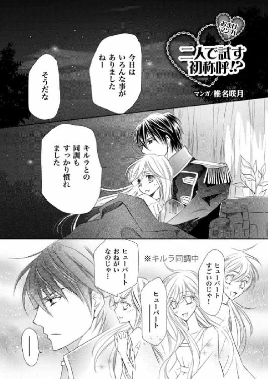
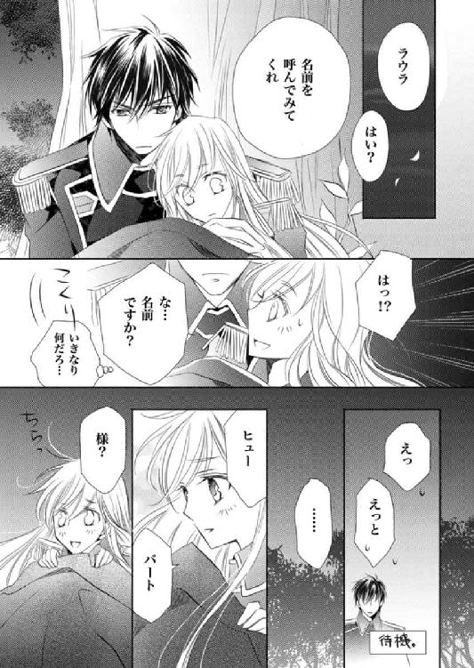
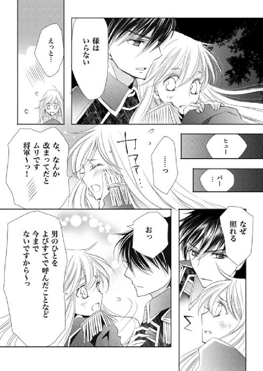
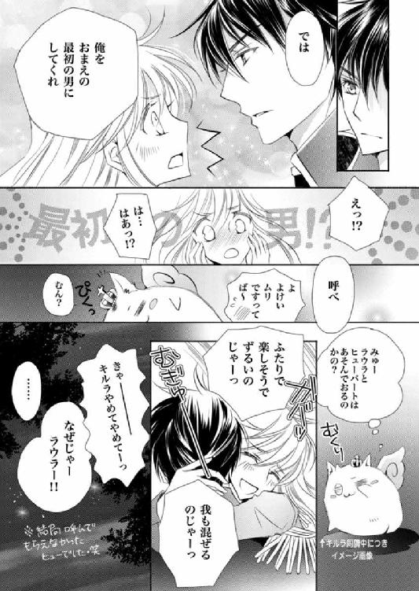
著者
Saya Kohzuki
６月11日生まれ・双子座・Ｂ型・埼玉県在住
今巻の執筆後に、自分を観劇好きにしてくれた舞台のＤＶＤが発売されました。
面白い舞台は映像になってもやっぱり面白く、大変見応えがありました。
時間ができたら、心ゆくまで繰り返し視聴したいです♪
【弥涼暮月】
http://s-kohzuki.jugem.jp/
イラスト
Satsuki Shiina
毎回、ヒューとラウラとキルラがどんなことしてくれるのか楽しみ過ぎて！
今巻もたくさんによによさせていただきました...！
たまにつぶやいております。
@satsukishieena
ブログ
http://shee.cocolog-nifty.com/blog/
電子版 ビーズログ文庫
ダブル・コントラクト
二人でつむぐ初欲求!?
著者／香月沙耶
イラスト／椎名咲月
2013年7月4日電子版ver.1.0発行
2014年11月28日電子版ver.1.1発行
発行人 青柳昌行
発行 株式会社KADOKAWA
〒102-8177 東京都千代田区富士見2-13-3
電話 0570-060-555（ナビダイヤル）
http://www.kadokawa.co.jp
企画・制作 エンターブレイン
デザイン 行成公江
(c)2012 Saya KOHZUKI
本電子書籍はビーズログ文庫『ダブル・コントラクト 二人でつむぐ初欲求!?』（2012年8月22日発行 初刷）を元にして制作しております。